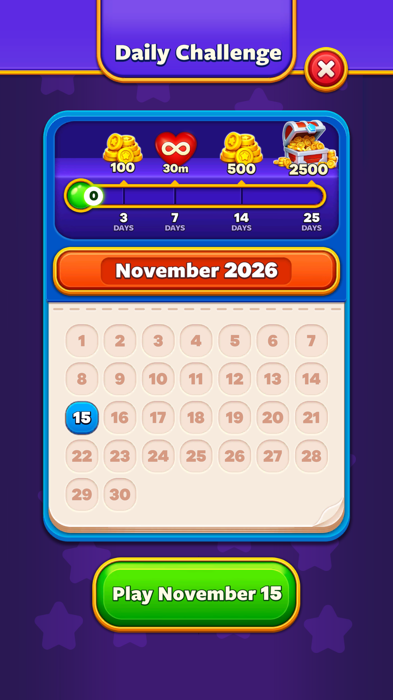
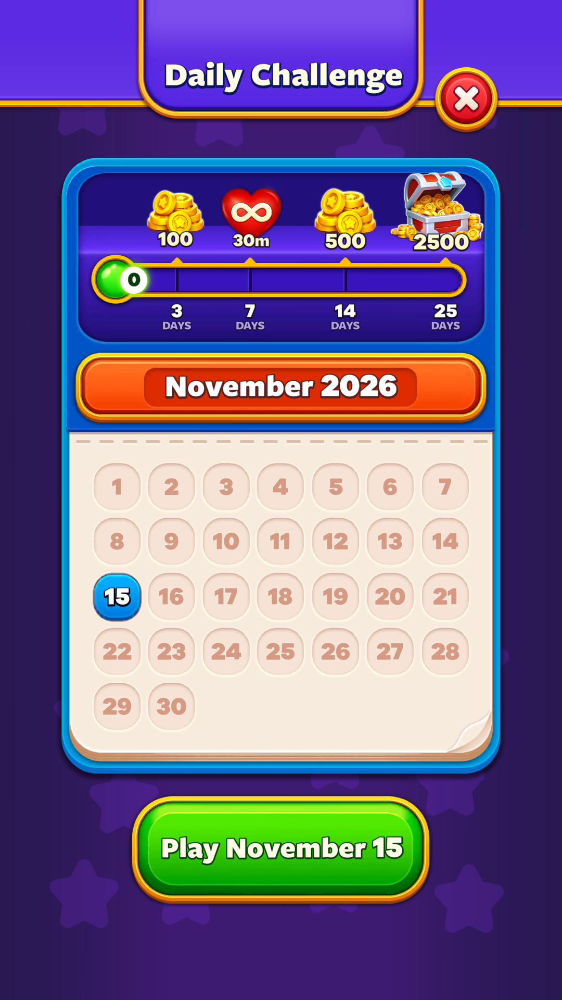
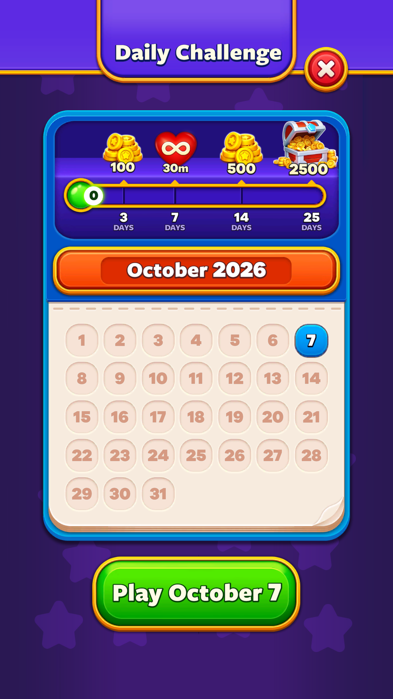
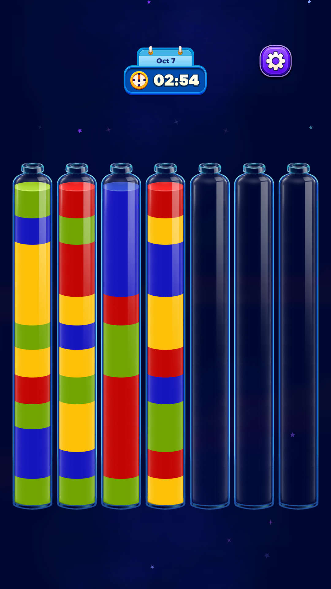
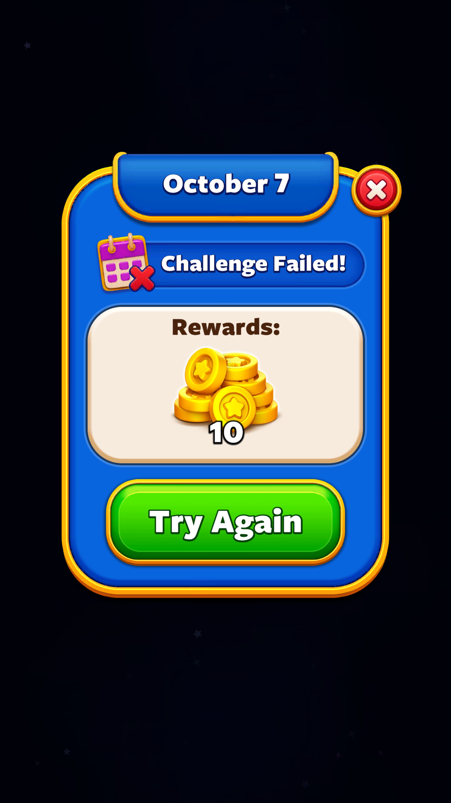

Thử thách hằng ngày (Daily Challenge)
Tạo một điểm hẹn theo lịch bên cạnh tiến trình chính; thắng từng ngày tích thành quà tháng và luật thời gian tạo nhịp khác level thường.
4 UC có nhánh liên quan tới case quan sát. Chưa có kết luận toàn bộ tính năng hoặc mọi UC đã pass. Xem bằng chứng và phần còn thiếu.
Thiết kế chi tiết
Tóm tắt thiết kế
Tạo một điểm hẹn theo lịch bên cạnh tiến trình chính; thắng từng ngày tích thành quà tháng và luật thời gian tạo nhịp khác level thường.
Mở lịch → chọn ngày → chơi thử thách → thắng đánh dấu ngày → nhận mốc tháng.
Lớp diễn giải thiết kế từ source và dossier hiện có; outcome là expected. Quan sát round2 được gọi rõ; chưa phát sinh playtest hoặc xác nhận backend mới.
10 ảnh chụp có nguồn · ảnh hiện ngay trong khung, bấm để mở ảnh gốc. Màu nhãn phân biệt playtest, lịch sử và ngữ cảnh.



Luồng người chơi từng bước
- 01
Đọc lịch tháng
Người chơiMở lịch và xem ngày hiện tại cùng tiến độ.
Điều kiện / luật: Lượt round2 tháng 11/2026, ngày 16 có 0/30; chạm ngày 17 và 15 không đổi lựa chọn, không đủ chứng minh disabled.
Kết quả theo đặc tả: Biết ngày đang được mời chơi và các mốc tháng.
15/11/2026 · Lịch Daily tháng11 và mốc thưởng16/11/2026 · Lịch tháng11: chạm ngày17/15 không đổi Play November16Nguồn: DailyLevel.json · use_cases/2 · review_cases_20261116_round2.json
Playtest Sau chạm ngày 17, lịch vẫn chọn ngày 16 và nút vẫn Play November 16; chưa thấy overlay mới.16/11/2026 · app 0.0.3129 · fixture offlineXem case 
Playtest Sau chạm ngày 15, lịch vẫn giữ ngày 16; chưa xác định nguyên nhân ô ngày không đổi lựa chọn.16/11/2026 · app 0.0.3129 · fixture offlineXem case - 02
Bắt đầu một ngày
Người chơiChọn ngày hợp lệ và bấm Play.
Điều kiện / luật: Daily có bàn và timer riêng; thao tác lịch round2 không bao gồm chơi bàn.
Kết quả theo đặc tả: Vào thử thách theo nguồn ngày đã chọn.
15/11/2026 · Play Daily không chuyển bàn trong phiên offlineNguồn: DailyLevel.json · use_cases/3 · review_cases_20261116_round2.json - 03
Tích quà tháng
Người chơiThắng các ngày để tăng tiến độ tháng.
Điều kiện / luật: UI lượt 2 ghi
 100 coin ở 3 ngày,
100 coin ở 3 ngày,  30 phút mạng ở 7 ngày, 500 coin ở 14 ngày và 2500 coin ở 25 ngày. Native 0.0.3063 trả MaxProgress=25; ảnh UI 0.0.3129 xác nhận mốc 25 trong fixture tháng 11, chưa phải kiểm thân hàm build mới hoặc mọi tháng.
30 phút mạng ở 7 ngày, 500 coin ở 14 ngày và 2500 coin ở 25 ngày. Native 0.0.3063 trả MaxProgress=25; ảnh UI 0.0.3129 xác nhận mốc 25 trong fixture tháng 11, chưa phải kiểm thân hàm build mới hoặc mọi tháng.Kết quả theo đặc tả: Thưởng mốc không đồng nghĩa mọi ngày trong tháng đều đã hoàn thành.
15/11/2026 · Lịch Daily tháng11 và mốc thưởng16/11/2026 · Lịch tháng11: chạm ngày17/15 không đổi Play November16Nguồn: DailyLevel.json · use_cases/8 · review_cases_20261116_round2.json
Playtest Lịch Daily November 2026 chọn ngày 15 và hiển thị các mốc thưởng theo số ngày hoàn thành.15/11/2026 · app 0.0.3129 · fixture offlineXem case

Quy tắc cần nắm
| Quy tắc | Hành vi theo nguồn | Căn cứ |
|---|---|---|
| Đọc lịch tháng | Lượt round2 tháng 11/2026, ngày 16 có 0/30; chạm ngày 17 và 15 không đổi lựa chọn, không đủ chứng minh disabled. | Nguồn: DailyLevel.json · use_cases/2 · review_cases_20261116_round2.json |
| Bắt đầu một ngày | Daily có bàn và timer riêng; thao tác lịch round2 không bao gồm chơi bàn. | Nguồn: DailyLevel.json · use_cases/3 · review_cases_20261116_round2.json |
| Tích quà tháng | UI lượt 2 ghi 100 coin ở 3 ngày, 30 phút mạng ở 7 ngày, 500 coin ở 14 ngày và 2500 coin ở 25 ngày. Native 0.0.3063 trả MaxProgress=25; ảnh UI 0.0.3129 xác nhận mốc 25 trong fixture tháng 11, chưa phải kiểm thân hàm build mới hoặc mọi tháng. | Nguồn: DailyLevel.json · use_cases/8 · review_cases_20261116_round2.json |
Số liệu & phần thưởng
Phần thưởng
PHẦN THƯỞNG DAILY CHALLENGE
| Mốc | Điều kiện | Phần thưởng |
|---|---|---|
| Thắng một ngày | Hoàn thành bàn Daily trong thời gian cho phép |  10Coin 10Coin |
| Mốc 1 thanh tiến độ tháng | ProgressBarRewards[0] | 100Coin |
| Mốc 2 thanh tiến độ tháng | ProgressBarRewards[1] |  30 phút Limitless Life 30 phút Limitless Life |
| Mốc 3 thanh tiến độ tháng | ProgressBarRewards[2] | 500Coin |
| Mốc 4 thanh tiến độ tháng | ProgressBarRewards[3] | 2500Coin |
CẤU HÌNH BÀN DAILY (GrandRemoteDailyLevelsConfig)
| Mốc | Điều kiện | Phần thưởng |
|---|---|---|
| Bàn tutorial | Lần đầu vào Daily | 180 giây 1 seed daily_daily16_difficulty1-10 3 chai trống 4 chai đầy |
| Thời lượng bàn thường | levelDuration | 105 120 hoặc 130 giây |
| Chai trống – 10 ngày | emptyBottleCount = 1 | 1 chai trống |
| Chai trống – 18 ngày | emptyBottleCount = 2 | 2 chai trống |
| Chai trống – 3 ngày | emptyBottleCount = 3 | 3 chai trống |
| Chai đầy – 6 ngày | filledBottleCount = 3 | 3 chai có nước |
| Chai đầy – 14 ngày | filledBottleCount = 4 | 4 chai có nước |
| Chai đầy – 11 ngày | filledBottleCount = 5 | 5 chai có nước |
| Số seed mỗi ngày | Mọi ngày | 5 seed |
| Lịch tháng hiện tại | currentMonthDailyLevels | 31 mục (dayIndex 1–31) |
| Lịch tháng trước | previousMonthDailyLevels | 28 mục để chơi bù |
| Play On | Hết giờ, chấp nhận chơi tiếp | Cộng thêm 60 giây |
TRẠNG THÁI Ô NGÀY VÀ NÚT PLAY
| Mốc | Điều kiện | Phần thưởng |
|---|---|---|
| DailyDateState.Claimed = 0 | Đã thắng ngày đó | Sprite DailyClaimedSprite dấu tích xanh |
| DailyDateState.Today = 1 | Ngày hôm nay | Sprite DailyUnclaimedSprite chơi được |
| DailyDateState.Locked = 2 | Ngày quá khứ chưa mở khóa | Sprite DailyLockedSelectedSprite nút Play ở trạng thái Locked |
| DailyDateState.Upcoming = 3 | Ngày tương lai | Sprite DailyUpcomingSprite chưa chơi được |
| DailyDateState.Unlocked = 4 | Ngày quá khứ đã mở khóa | Sprite DailyUnlockedSelectedSprite chơi bù được |
| DailyPlayButtonState.ActiveDay = 0 | Ngày khả dụng | Nút Play bật |
| DailyPlayButtonState.Locked = 1 | Ngày quá khứ chưa mở | Nút chuyển sang mở khóa |
| DailyPlayButtonState.Cooldown = 2 | Đã chơi xong hôm nay | Đếm ngược tới ngày mới |
NGUỒN MỞ MÀN HÌNH DAILY (DailyScreenViewSource)
| Mốc | Điều kiện | Phần thưởng |
|---|---|---|
| None = 0 | Không xác định | Không ghi nhận nguồn |
| NavigationBar = 1 | Mở từ thanh điều hướng | Ghi impression |
| FirstImpression = 2 | Vừa mở khóa Daily | Popup giới thiệu lần đầu |
| DailyWin = 3 | Ngay sau khi thắng Daily | Quay lại trang lịch |
| LobbyButton = 4 | Mở từ nút Daily ở Home | Ghi impression |
Phần thưởng theo code
| Ngữ cảnh | Phần thưởng | Evidence |
|---|---|---|
| Thắng một ngày Daily | 10 coin (CurrencyEarnReason.DailyLevelWin) | DailyConfigModel.DailyLevelRewardModel; GiveDailyCoinRewardsCommand |
| Mốc 1 của thanh tiến độ tháng | 100Coin | DailyConfigModel.json ProgressBarRewards[0] |
| Mốc 2 | 30 phút Limitless Life (CurrencyType 2 TimeSpan 00:30:00) | DailyConfigModel.json ProgressBarRewards[1] |
| Mốc 3 | 500Coin | DailyConfigModel.json ProgressBarRewards[2] |
| Mốc 4 | 2500Coin | DailyConfigModel.json ProgressBarRewards[3] |
Số liệu chính
| Chỉ số | Giá trị | Nguồn |
|---|---|---|
| Level mở khóa Daily | 30 | DailyConfigModel.json FirstLevelToShow |
| Bật tính năng Daily | true (mặc định client) | DailyConfigModel.json IsEnable |
| Bật thông báo nhắc chơi | true | DailyConfigModel.json IsNotificationEnabled |
| Thưởng thắng một ngày | 10 coin | DailyConfigModel.json DailyLevelRewardModel |
| Số mốc thanh tiến độ tháng | 4 | DailyConfigModel.json ProgressBarRewards |
| Tổng coin từ các mốc tháng | 3100 coin (100 + 500 + 2500) | ProgressBarRewards[0], [2], [3] |
| Thời lượng bàn Daily | 105, 120 hoặc 130 giây | DailyLevelConfigModel.levelDuration |
| Thời lượng bàn tutorial | 180 giây | GrandRemoteDailyLevelsConfig.json tutorial_level.levelDuration |
| Thời gian cộng thêm khi Play On | 60 giây | GrandRemoteDailyLevelsConfig.json playOnDurationInSeconds |
| Chiều cao chai Daily | 12 ô (gấp 3 lần level thường) | ConfigsBottleCollectionPlacementConfigDaily.DefaultBottleHeight |
| Khoảng cách giữa các hàng chai | 12 unit | ConfigsBottleCollectionPlacementConfigDaily.DistanceBetweenRowsAsUnit |
| Số ngày trong lịch tháng hiện tại | 31 | GrandRemoteDailyLevelsConfig.currentMonthDailyLevels |
| Số ngày trong lịch tháng trước | 28 | GrandRemoteDailyLevelsConfig.previousMonthDailyLevels |
| Số seed mỗi ngày | 5 | GrandRemoteDailyLevelsConfig.json |
| Seed bàn tutorial | daily_daily16_difficulty1-10 | tutorial_level.seeds |
| Chai trống/đầy bàn tutorial | 3 chai trống, 4 chai đầy | tutorial_level.emptyBottleCount / filledBottleCount |
| Tên bộ lịch Daily yêu cầu backend | 18-10-24 | BEDailyLevelConfig.json ConfigName |
| Số trạng thái ô ngày | 5 (Claimed=0 … Unlocked=4) | DailyDateState.cs |
| Số trạng thái nút Play | 3 (ActiveDay=0, Locked=1, Cooldown=2) | DailyPlayButtonState.cs |
| Số nguồn mở màn hình Daily | 5 (None=0 … LobbyButton=4) | DailyScreenViewSource.cs |
| Mã ngữ cảnh scene Daily | GameStateType.Daily = 3 | GameStateType.cs |
| Lý do nhận coin từ Daily | DailyLevelWin = 15, DailyProgressBarStep = 16 | CurrencyEarnReason.cs |
| Định dạng khóa tra cấu hình ngày | MM/dd/yyyy | DailyLevelInfo.GetFormattedDate |
| Định dạng đồng hồ trong bàn | mm:ss | DailyInLevelTimer |
| Số sprite trạng thái ô ngày | 5, cộng 2 sprite dải phân cách | DailySpriteConfig |
Các quyết định trong luồng
| Tình huống | Cách xử lý theo nguồn | Căn cứ |
|---|---|---|
| Vì sao cần tách đích nhận thưởng 25 ngày với tiến độ 0/30 trên lịch tháng? | Một số mô tả đích nhận thưởng, số kia là số ngày/thanh UI của tháng; gộp chúng thành cùng một giới hạn gây sai thiết kế. | Nhận định thiết kế từ cơ chế có nguồn; không phải hiệu quả đã đo. |
Nhánh lỗi và phục hồi
| Điều kiện | Hành vi mong đợi | Phạm vi đã kiểm |
|---|---|---|
| Nhánh lỗi, gián đoạn hoặc chuyển trạng thái của Thử thách hằng ngày (Daily) | Qua ngày/tháng hoặc thoát bàn cần đọc mask và state; không giả định tap ngày quá khứ mở được ngay. | Theo UC/source trong hồ sơ; runtime chỉ có giá trị ở đúng case và snapshot đã liên kết. |
Nhận định & vận dụng
Một số mô tả đích nhận thưởng, số kia là số ngày/thanh UI của tháng; gộp chúng thành cùng một giới hạn gây sai thiết kế.
Suy luận thiết kế; không thay bảng cấu hình hoặc giới hạn thực nghiệm.
Ảnh chụp bổ sung & nguồn bằng chứng
Mô tả trạng thái hoặc bước nhìn thấy trong ảnh và ngữ cảnh case; không nâng preview, cache hay lỗi thành grant, online hoặc full UC pass.
Không coi ảnh lịch sử hoặc ảnh ép bật bằng fixture là trạng thái production hiện tại.
Những ảnh còn lại của tính năng được giữ mở sẵn bên dưới. Các ảnh đã đặt ở phần tóm tắt hoặc bước liên quan không lặp lại trong gallery này.


100 coin) / 7 (30 phút mạng vô hạn) / 14 (500 coin) / 25 ngày (rương 2.500); nút Play October 7Ảnh chụp lịch sử · giữ snapshot và điều kiện trong chú thíchHồ sơ ảnh lịch sử




10 coin, nút Try AgainẢnh chụp lịch sử · giữ snapshot và điều kiện trong chú thíchHồ sơ ảnh lịch sử
Case đầy đủ: expected, actual và ledger · Ảnh lịch sử và tài nguyên gốc
Tổng quan & điều kiện mở
Mô tả
- Daily Challenge là chế độ phụ chạy song song với lộ trình level chính: mỗi ngày trong tháng có một bàn riêng.
- Bàn Daily dùng chai cao 12 ô thay vì 4, và khoảng cách giữa các hàng cũng là 12 unit.
- Luật thua khác hẳn level thường: người chơi bị giới hạn thời gian chứ không phải bị kẹt bàn.
- Người chơi mở lịch tháng, chọn ngày rồi bấm Play; thắng thì ngày đó được đánh dấu và cộng vào thanh tiến độ tháng.
- Đủ mốc trên thanh tiến độ thì nhận thưởng lớn, cao nhất là 2500 coin.
- Ngày trong quá khứ có thể mở khóa lại để chơi bù, dùng cấu hình từ lịch tháng trước.
- Dữ liệu lưu rất gọn: mỗi tháng chỉ là hai bitmask ClaimedDays và UnlockedDays trong DailyMonthModel.
- Hai bitmask tách biệt nên một ngày có thể đã mở khóa mà chưa thắng.
- Hết giờ mở DailyStuckPopUp hiển thị 'Out Of Time' và mời Play On cộng thêm 60 giây.
- Lần đầu vào Daily sẽ chơi một bàn tutorial riêng dài 180 giây với 3 chai trống và 4 chai đầy.
Mở khóa & điểm vào
DailyConfigModel.IsEnable = true và người chơi đạt DailyConfigModel.FirstLevelToShow = 30 (client default). DailyService.IsEligibleForDaily() và GetFirstLevelToShow() kiểm tra điều kiện này; nút ở Home hiển thị chuỗi 'DailyChallengeSectionInfo' = "Unlocks at Level {0}" khi chưa mở. Lần đầu vào Daily sẽ chơi bàn tutorial riêng (GrandRemoteDailyLevelsConfig.tutorial_level) và cờ DidTutorialLevelPlay được ghi.
Điểm vào:
- DailyChallengeLobbyButton ở Home (hiện tiến độ dạng '{0}/{1}', mở 'DailyPopup')
- Thanh điều hướng (DailyScreenViewSource.NavigationBar)
- First impression sau khi vừa mở khoá (DailyScreenViewSource.FirstImpression)
- Sau khi thắng Daily (DailyScreenViewSource.DailyWin)
- TryShowDailyCommand trong chuỗi trở về Home sau level thường
Luồng chi tiết theo nguồn
Cách hoạt động
- IsEligibleForDaily() so tiến độ người chơi với FirstLevelToShow = 30; chưa đủ thì nút hiện 'Unlocks at Level {0}'.
- InitializeData() nạp DailyModel, gọi AddMissingMonthModel(now) tạo DailyMonthModel cho tháng hiện tại và RemoveOutdatedMonthsUpTo() dọn tháng cũ.
- GetActiveDailyViewModel() dựng mảng DailyDateModel cho từng ngày, kèm cờ IsNextMonthExist, IsPreviousMonthExist, IsTodayClaimed và CurrentProgress/MaxProgress.
- GetDailyDateState(day) trả Claimed (0), Today (1), Locked (2), Upcoming (3) hoặc Unlocked (4); DailySpriteConfig cấp 5 sprite tương ứng.
- SetDailyPlayButtonViewForState() đổi nút Play theo ActiveDay (0), Locked (1) hoặc Cooldown (2).
- Bấm Play: SetSelectedDate() rồi GetSelectedDailyLevelInfo() trả DailyLevelInfo với ngày định dạng 'MM/dd/yyyy'.
- HomeSceneToDailySceneCommand dựng context Daily (GameStateType.Daily = 3); GetDailyLevelAndLevelConfigModel() tìm cấu hình theo dayIndex trong currentMonthDailyLevels, rơi về previousMonthDailyLevels khi chơi bù.
- GetDailySeedIdFromConfig() chọn 1 trong 5 seed; GenerateBottleCollections(isDaily: true) dựng bàn với chai cao 12 ô theo ConfigsBottleCollectionPlacementConfigDaily.
- EmptyBottleCount và FilledBottleCount trong cấu hình quyết định số chai trống và chai đầy ban đầu.
- LevelTimer.Start(LevelDuration) bắt đầu đếm ngược; DailyInLevelTimer hiển thị theo định dạng 'mm:ss'.
- Hết giờ: CheckAndApplyTimeIsUp() gọi StuckLevel(StuckType.TimeIsUp), mở DailyStuckPopUp với chữ 'Out Of Time'.
- Chấp nhận Play On thì PlayOnManager.TryUse() trừ coin hoặc xem quảng cáo, LevelTimer cộng thêm 60 giây; từ chối thì sang LoseState và mở DailyTryAgainPopUp.
- Thắng: WinState.DelayedWin() mở LevelCongratsPopUp, ClaimSelectedDayAndProgressBarReward() đặt bit ngày trong ClaimedDays.
- GiveDailyCoinRewardsCommand trao 10 coin với CurrencyEarnReason.DailyLevelWin (15); chạm mốc thanh tiến độ thì GiveDailyProgressBarStepRewards trao với reason DailyProgressBarStep (16).
- ScheduleDateCheckAtEndOfTheDay() hẹn kiểm tra đổi ngày; sang ngày mới thì nút Play chuyển từ Cooldown về ActiveDay và ScheduleDailyNotification() đặt lịch nhắc.
Luồng chi tiết theo code
DailyService.Initialize/InitializeData nạp DailyModel từ DailyDataService, gọi AddMissingMonthModel(now) tạo DailyMonthModel cho tháng hiện tại và RemoveOutdatedMonthsUpTo(dateTime) dọn tháng cũ. GetActiveDailyViewModel() dựng DailyViewModel: mảng DailyDateModel cho từng ngày trong tháng (GetDaysInMonth + GetDailyDateState), cờ IsNextMonthExist/IsPreviousMonthExist, IsTodayClaimed, CurrentProgress/MaxProgress cho thanh tiến độ (AssignProgressBarValues + GetProgressOfMonth). DailyCalendarController vẽ lịch bằng DailyDateView và DailySpriteConfig (5 sprite theo DailyDateState), SetDailyPlayButtonViewForState đổi nút Play theo DailyPlayButtonState (ActiveDay / Locked / Cooldown). Bấm Play → DailyService.SetSelectedDate + GetSelectedDailyLevelInfo() trả DailyLevelInfo (DateTime, GetFormattedDate dạng MM/dd/yyyy) → HomeSceneToDailySceneCommand + BoostrapDailyContextCommand + DailyContextInstaller dựng context Daily → GameStateService.ChangeGameState(GameStateType.Daily). DailyLevelManager.StartLevel() gọi ILevelModelService.GetDailyLevelAndLevelConfigModel(dailyLevelInfo) (hoặc GetDailyTutorialLevelAndLevelConfigModel lần đầu) lấy DailyLevelConfigModel { Seeds, LevelDuration, EmptyBottleCount, FilledBottleCount }, dựng bàn với chai cao 12 ô (ConfigsBottleCollectionPlacementConfigDaily) và khởi động LevelTimer.Start(duration). DailyStateManager điều khiển cùng bộ GamePlayStateType. LevelTimer.SecondUpdate() đếm ngược, DailyInLevelTimer hiển thị định dạng 'mm\:ss'; hết giờ → LevelWinOrStuckSystem.CheckAndApplyTimeIsUp → DailyLevelManager.StuckLevel(StuckType.TimeIsUp) → DailyStuckPopUp (biến thể A/C) mời Play On cộng thêm 60 giây. Thắng → Daily WinState.DelayedWin mở 'LevelCongratsPopUp', DailyService.ClaimSelectedDayAndProgressBarReward() đánh dấu ngày và trả RewardModel; GiveDailyCoinRewardsCommand trao 10 coin, GiveDailyProgressBarStepRewards trao mốc thanh tiến độ. Thua/thoát → Daily LoseState/QuitState rồi DailyTryAgainPopUp. ShowIntervalCommand và OpenDailyPageCommand/SwipeToDailyPageCommand đưa người chơi về trang Daily.
Use case (16)
Đặc tả UC mô tả hành vi theo nguồn. Kết quả mong đợi không phải kết quả đã chạy; case quan sát được liên kết riêng ở từng UC.
Bấm vào từng use case để mở. Mở/đóng tất cả
UC-01 Mở khoá Daily Challenge
Chưa có case trực tiếp trong hai lượt review 15–16/11.
Các bước- DailyService.IsEligibleForDaily() so tiến độ người chơi với GetFirstLevelToShow() (DailyConfigModel.FirstLevelToShow)
- Chưa đủ → DailyChallengeLobbyButton ẩn hoặc hiện chuỗi 'DailyChallengeSectionInfo' = "Unlocks at Level {0}"
- Đủ điều kiện và chưa giới thiệu → DailyService.IsNotIntroducedAndEligible() = true → mở DailyPopup lần đầu (DailyScreenViewSource.FirstImpression) rồi SetDailyIntroduced()
| Actor | System |
|---|---|
| Trigger | Người chơi đạt level yêu cầu |
| Điều kiện | DailyConfigModel.IsEnable = true |
| Kết quả mong đợi theo nguồn | Tính năng xuất hiện ở Home với biểu tượng lịch |
| Quy tắc / số liệu | Client default: FirstLevelToShow = 30, IsEnable = true, IsNotificationEnabled = true |
| Bằng chứng đặc tả | DailyService.IsEligibleForDaily; DailyService.GetFirstLevelToShow; DailyService.IsNotIntroducedAndEligible; DailyService.SetDailyIntroduced; DailyConfigModel.json |
UC-02 Chơi bàn tutorial Daily lần đầu
Chưa có case trực tiếp trong hai lượt review 15–16/11.
Các bước- LevelModelService.GetDailyTutorialLevelAndLevelConfigModel(dailyLevelInfo) lấy GrandRemoteDailyLevelsConfig.TutorialLevel (JSON key 'tutorial_level')
- Bàn tutorial: 180 giây, 1 seed daily_daily16_difficulty1-10, 3 chai trống + 4 chai đầy
- Chơi xong → DailyService.SetTutorialLevelPlayed() → DailyDataService ghi DailyModel.DidTutorialLevelPlay = true
| Actor | Player |
|---|---|
| Trigger | Lần đầu bấm Play trong Daily |
| Điều kiện | DailyService.DidTutorialLevelPlay() = false |
| Kết quả mong đợi theo nguồn | Người chơi làm quen luật thời gian và chai cao trước khi vào bàn thật |
| Quy tắc / số liệu | Bàn tutorial dài hơn hẳn bàn thường (180 s so với 105–130 s) |
| Bằng chứng đặc tả | LevelModelService.GetDailyTutorialLevelAndLevelConfigModel; DailyService.DidTutorialLevelPlay; DailyService.SetTutorialLevelPlayed; GrandRemoteDailyLevelsConfig.json |
UC-03 Hiển thị lịch tháng và trạng thái từng ngày
Có bằng chứng một số nhánh; chưa full UC pass.
15/11/2026 · Lịch Daily tháng11 và mốc thưởng16/11/2026 · Lịch tháng11: chạm ngày17/15 không đổi Play November16Các bước- DailyService.GetActiveDailyViewModel() → CreateDailyViewModel(currentTime, selectedDate, monthDays)
- GetDaysInMonth(targetMonth) + GetDailyDateModelsForMonth(targetMonth) tạo mảng DailyDateModel
- GetDailyDateState(day) trả DailyDateState: Claimed = 0 (đã thắng), Today = 1, Locked = 2 (ngày quá khứ chưa mở), Upcoming = 3 (ngày tương lai), Unlocked = 4 (ngày quá khứ đã mở khoá)
- DailyCalendarController.SetDailyDateViews(viewModel) vẽ từng DailyDateView với sprite lấy từ DailySpriteConfig (DailyClaimedSprite, DailyUnlockedSelectedSprite, DailyUnclaimedSprite, DailyUpcomingSprite, DailyLockedSelectedSprite)
- SetMonthText(dateTime) và SelectFirstOpenDailyDateView(viewModel) chọn sẵn ngày khả dụng đầu tiên
- IsNextMonthExist / IsPreviousMonthExist bật nút chuyển tháng
| Actor | Player |
|---|---|
| Trigger | Mở DailyPopup |
| Điều kiện | - |
| Kết quả mong đợi theo nguồn | Người chơi nhìn thấy toàn tháng, ngày nào đã hoàn thành, ngày nào còn chơi được |
| Quy tắc / số liệu | GrandRemoteDailyLevelsConfig đóng gói 31 ngày tháng hiện tại và 28 ngày tháng trước |
| Bằng chứng đặc tả | DailyService.GetActiveDailyViewModel; DailyService.GetDailyDateState; DailyService.GetDailyDateModelsForMonth; DailyCalendarController.SetDailyDateViews; DailySpriteConfig |
UC-04 Chọn ngày và bấm Play
Có bằng chứng một số nhánh; chưa full UC pass.
15/11/2026 · Play Daily không chuyển bàn trong phiên offlineCác bước- DailyCalendarController.SetCurrentSelectedDailyDate(dailyDateView) và DailyService.SetSelectedDate(dateTime)
- SetDailyPlayButtonViewForState(DailyPlayButtonState) đổi nút: ActiveDay = 0 (chơi được), Locked = 1 (phải mở khoá), Cooldown = 2 (đã chơi, chờ ngày mới)
- DailyPlayButton nhấn → DailyService.GetSelectedDailyLevelInfo() trả DailyLevelInfo (DateTime + GetFormattedDate 'MM/dd/yyyy')
- HomeSceneToDailySceneCommand + BoostrapDailyContextCommand + DailyContextInstaller dựng context; GameStateService.ChangeGameState(GameStateType.Daily)
- DailyStateManager.Initialize() rồi FromHomeToGamePlay()
| Actor | Player |
|---|---|
| Trigger | Chạm vào một ô ngày rồi bấm nút Play |
| Điều kiện | Ngày ở trạng thái Today hoặc Unlocked |
| Kết quả mong đợi theo nguồn | Vào bàn Daily của ngày đã chọn |
| Quy tắc / số liệu | DailyLevelInfo.GetFormattedDate() dùng làm khoá tra cấu hình ngày |
| Bằng chứng đặc tả | DailyService.SetSelectedDate; DailyService.GetSelectedDailyLevelInfo; DailyCalendarController.SetDailyPlayButtonViewForState; DailyPlayButton; DailyStateManager.FromHomeToGamePlay |
UC-05 Dựng bàn Daily theo cấu hình ngày
Chưa có case trực tiếp trong hai lượt review 15–16/11.
Các bước- LevelModelService.GetDailyLevelAndLevelConfigModel(dailyLevelInfo) → GetDailyLevelConfigModel(configModels, dateTime, shouldFallback) tìm DailyLevelConfigModel theo dayIndex trong CurrentMonthDailyLevels, rơi về PreviousMonthDailyLevels khi chơi bù
- GetDailySeedIdFromConfig(dailyLevelConfigModel) chọn 1 trong 5 seed
- BottleCollections.GenerateBottleCollections(model, isDaily: true) dùng ConfigsBottleCollectionPlacementConfigDaily (DefaultBottleHeight = 12, DistanceBetweenRowsAsUnit = 12) và GameplayConfigsDaily
- EmptyBottleCount / FilledBottleCount trong cấu hình quyết định số chai trống và chai đầy
- DailyLevel.Start(levelAndLevelConfigModel) khởi tạo InputService, GameplayInputSystem, LevelEntranceHandler và LevelTimer
- LevelTimer.Start(LevelDuration) bắt đầu đếm ngược
| Actor | System |
|---|---|
| Trigger | DailyLevelManager.StartLevel() |
| Điều kiện | - |
| Kết quả mong đợi theo nguồn | Bàn Daily 12 ô mỗi chai, giới hạn thời gian |
| Quy tắc / số liệu | Cấu hình đóng gói: LevelDuration nhận 3 giá trị 105 / 120 / 130 giây; EmptyBottleCount phân bố 1 (10 ngày), 2 (18 ngày), 3 (3 ngày); FilledBottleCount 3 (6 ngày), 4 (14 ngày), 5 (11 ngày) cho tháng hiện tại. Mọi ngày đều có đúng 5 seed. |
| Bằng chứng đặc tả | DailyLevelManager.StartLevel; LevelModelService.GetDailyLevelConfigModel; LevelModelService.GetDailySeedIdFromConfig; DailyLevelConfigModel; ConfigsBottleCollectionPlacementConfigDaily.asset; GrandRemoteDailyLevelsConfig.json |
UC-06 Đếm ngược thời gian trong bàn
Chưa có case trực tiếp trong hai lượt review 15–16/11.
Các bước- LevelTimer.SecondUpdate() giảm _remainingTime và gọi OnTimeTick()
- DailyInLevelTimer hiển thị theo định dạng 'mm\:ss'
- LevelTimer.Pause() / Resume() khi mở popup, mất focus hoặc chạy quảng cáo; DailyLevelManager.PauseLevel/ResumeLevel gọi tương ứng
- LevelTimer.GetRemainingTime() cấp giá trị cho LevelStats (remaining_time) và cho DailyStuckPopUp
- LevelTimer.Stop() khi kết thúc bàn
| Actor | System |
|---|---|
| Trigger | Mỗi giây khi đang chơi |
| Điều kiện | LevelTimer.IsActive = true |
| Kết quả mong đợi theo nguồn | Áp lực thời gian là nguồn căng thẳng chính của chế độ Daily |
| Quy tắc / số liệu | LevelTimer là ISecondUpdate đăng ký vào CustomUpdater; IsTimeUp() được LevelWinOrStuckSystem.CheckAndApplyTimeIsUp gọi mỗi frame |
| Bằng chứng đặc tả | LevelTimer.SecondUpdate; LevelTimer.Start; LevelTimer.Pause; LevelTimer.IsTimeUp; DailyInLevelTimer; LevelWinOrStuckSystem.CheckAndApplyTimeIsUp |
UC-07 Hết giờ → popup kẹt Daily và Play On cộng thời gian
Chưa có case trực tiếp trong hai lượt review 15–16/11.
Các bước- DailyLevelManager.StuckLevel(StuckType.TimeIsUp) → Daily StuckState.Enter với StuckStateArguments.StuckType
- DailyStuckPopUp mở với biến thể ADailyStuckPopUpVariant (DailyStuckPopUpVariantA / VariantC), text lấy khoá 'StuckPopupInfoNoTime' = "Out Of Time" (hoặc 'StuckPopupInfoNoMove' = "No Available Moves" khi kẹt vì hết nước đi)
- PlayEnterAnimation / PlayPlayOnAnimation / PlayGiveUpAnimation chạy theo FailFlowAnimationConfig
- Chấp nhận Play On → PlayOnManager.TryUse() trừ coin (hoặc RewardedButton xem quảng cáo) → Daily PlayOnState → LevelTimer cộng GrandRemoteDailyLevelsConfig.PlayOnDurationInSeconds
- Từ chối → Daily LoseState → WaitingForStartAfterLoseState mở 'DailyTryAgainPopUp'
| Actor | Player |
|---|---|
| Trigger | LevelTimer về 0 |
| Điều kiện | - |
| Kết quả mong đợi theo nguồn | Người chơi mua thêm thời gian hoặc thua thử thách ngày đó |
| Quy tắc / số liệu | PlayOnDurationInSeconds = 60 giây (client default). Bàn Daily cũng có thể kẹt vì hết nước đi (StuckType.NoMove). |
| Bằng chứng đặc tả | DailyLevelManager.StuckLevel; DailyStuckPopUp; ADailyStuckPopUpVariant.Activate; StuckStateArguments; GrandRemoteDailyLevelsConfig.json; localization StuckPopupInfoNoTime |
UC-08 Thắng thử thách và đánh dấu ngày
Chưa có case trực tiếp trong hai lượt review 15–16/11.
Các bước- DailyLevelManager.WinLevel() → Daily WinState.Enter → DelayedWin() mở 'LevelCongratsPopUp'
- DailyService.ClaimSelectedDayAndProgressBarReward() gọi DailyDataService.ClaimDay(dateTime) đặt bit ngày trong DailyMonthModel.ClaimedDays
- GiveDailyCoinRewardsCommand trao DailyConfigModel.DailyLevelRewardModel (CurrencyType 1 = Coin, Amount 10) với CurrencyEarnReason.DailyLevelWin (= 15)
- AssignProgressBarValues cập nhật CurrentProgress / MaxProgress; DailyProgressBarController chạy hoạt hoạ theo DailyAnimationConfig
- DailyCalendarController.PlayIndividualDateClaim(dateToPlay) hiện dấu tích xanh trên ô ngày
- LevelStats.GetDailyLevelStats(levelState) gửi analytics riêng cho Daily
| Actor | Player |
|---|---|
| Trigger | Hoàn thành bàn trước khi hết giờ |
| Điều kiện | - |
| Kết quả mong đợi theo nguồn | Ngày được đánh dấu Claimed, +10 coin, thanh tiến độ tháng tăng 1 |
| Quy tắc / số liệu | IsDayClaimed(dateTime) đọc bitmask; UnClaimDay(dateTime) dùng cho rollback khi server từ chối |
| Bằng chứng đặc tả | DailyLevelManager.WinLevel; DailyService.ClaimSelectedDayAndProgressBarReward; DailyDataService.ClaimDay; DailyDataService.IsDayClaimed; GiveDailyCoinRewardsCommand; DailyCalendarController.PlayIndividualDateClaim |
UC-09 Thanh tiến độ tháng và phần thưởng mốc
Có bằng chứng một số nhánh; chưa full UC pass.
15/11/2026 · Lịch Daily tháng11 và mốc thưởng16/11/2026 · Lịch tháng11: chạm ngày17/15 không đổi Play November16Các bước- DailyService.GetProgressOfMonth(monthDays) đếm số ngày Claimed; MaxProgress là tổng số mốc
- DailyService.GetRewardModelByStep(step) trả RewardModel của mốc
- GiveDailyProgressBarStepRewards trao thưởng khi chạm mốc, CurrencyEarnReason.DailyProgressBarStep (= 16)
- DailyProgressRewardStepView hiển thị từng mốc; DailyAnimationConfig điều khiển ProgressBarMoveCurve/Duration, GreenTick scale, ProgressStepParticleHitTime
- DailyService.IsAllDaysClaimed(currentTime) kiểm đã hoàn thành cả tháng
| Actor | System |
|---|---|
| Trigger | Sau mỗi ngày hoàn thành |
| Điều kiện | - |
| Kết quả mong đợi theo nguồn | Người chơi có động lực quay lại mỗi ngày để lấy phần thưởng mốc |
| Quy tắc / số liệu | ProgressBarRewards client default (4 mốc): 100 coin → 30 phút Limitless Life (CurrencyType 2, TimeSpan 00:30:00) → 500 coin → 2500 coin |
| Bằng chứng đặc tả | DailyService.GetProgressOfMonth; DailyService.GetRewardModelByStep; DailyService.AssignProgressBarValues; GiveDailyProgressBarStepRewards; DailyConfigModel.json |
UC-10 Mở khoá lại ngày đã qua để chơi bù
Chưa có case trực tiếp trong hai lượt review 15–16/11.
Các bước- Nút Play chuyển sang DailyPlayButtonState.Locked
- DailyService.UnlockSelectedDay() → DailyDataService.UnlockDay(dateTime) đặt bit trong DailyMonthModel.UnlockedDays
- DailyDataService.IsDayUnlocked(dateTime) kiểm; trạng thái ô đổi sang DailyDateState.Unlocked
- DailyService.UnlockAllDays() / DailyDataService.UnlockAllDays() mở toàn bộ (dùng cho phần thưởng hoặc debugger)
- Cấu hình ngày lấy từ PreviousMonthDailyLevels nếu thuộc tháng trước
| Actor | Player |
|---|---|
| Trigger | Chọn một ngày quá khứ chưa hoàn thành (DailyDateState.Locked) |
| Điều kiện | - |
| Kết quả mong đợi theo nguồn | Người chơi bù được ngày đã bỏ lỡ để hoàn thành thanh tiến độ tháng |
| Quy tắc / số liệu | Cách mở khoá (miễn phí, trả coin hay xem quảng cáo) không xác định được từ stub; hai bitmask ClaimedDays và UnlockedDays tách biệt nên một ngày có thể Unlocked mà chưa Claimed |
| Bằng chứng đặc tả | DailyService.UnlockSelectedDay; DailyService.UnlockAllDays; DailyDataService.UnlockDay; DailyDataService.IsDayUnlocked; DailyDateState |
UC-11 Sang ngày mới / sang tháng mới
Chưa có case trực tiếp trong hai lượt review 15–16/11.
Các bước- DailyService.ScheduleDateCheckAtEndOfTheDay() đặt hẹn bằng SecondTimer/CustomUpdater
- GetNextDayLocalDateTime() tính mốc đổi ngày; DailyTimer.UpdateTimerView() hiển thị đếm ngược tới ngày mới
- InitializeDate() cập nhật _currentSelectedDate; DailyDataService.AddMissingMonthModel(dateTime) thêm DailyMonthModel cho tháng mới
- DailyDataService.RemoveOutdatedMonthsUpTo(dateTime) xoá các tháng quá cũ; GetMostRecentMonthDate() cho biết tháng gần nhất còn lưu
- Nút Play chuyển từ Cooldown về ActiveDay
| Actor | System |
|---|---|
| Trigger | Đồng hồ vượt qua 00:00 địa phương |
| Điều kiện | - |
| Kết quả mong đợi theo nguồn | Lịch tự làm mới, dữ liệu cũ được dọn để không phình bộ nhớ |
| Quy tắc / số liệu | Chỉ giữ lại một số tháng gần nhất (GrandRemoteDailyLevelsConfig chỉ có tháng hiện tại + tháng trước) |
| Bằng chứng đặc tả | DailyService.ScheduleDateCheckAtEndOfTheDay; DailyService.GetNextDayLocalDateTime; DailyDataService.AddMissingMonthModel; DailyDataService.RemoveOutdatedMonthsUpTo; DailyTimer.UpdateTimerView |
UC-12 Thông báo nhắc chơi Daily
Chưa có case trực tiếp trong hai lượt review 15–16/11.
Các bước- DailyService.ScheduleDailyNotification() đặt lịch thông báo qua NotificationService
- TryRescheduleDailyNotification(dateTime) dời lịch khi người chơi đã hoàn thành ngày hôm nay
- Huỷ/đặt lại khi người chơi tắt thông báo hoặc đổi múi giờ
| Actor | System |
|---|---|
| Trigger | Sau khi chơi xong hoặc khi khởi động |
| Điều kiện | DailyConfigModel.IsNotificationEnabled = true |
| Kết quả mong đợi theo nguồn | Người chơi được nhắc quay lại mỗi ngày |
| Quy tắc / số liệu | IsNotificationEnabled = true (client default) |
| Bằng chứng đặc tả | DailyService.ScheduleDailyNotification; DailyService.TryRescheduleDailyNotification; DailyConfigModel.json |
UC-13 Thoát bàn Daily giữa chừng
Chưa có case trực tiếp trong hai lượt review 15–16/11.
Các bước- Daily QuitPressedState mở DailyQuitPopUp với cảnh báo 'DailyChallengeQuitPopupWarning' = "Challenge will be failed!"
- Xác nhận → DailyLevelManager.QuitLevel() → Daily QuitState; huỷ → Daily ResumePlayingAfterQuit (LevelTimer.Resume)
- Daily WaitingForStartAfterQuitState mở 'DailyTryAgainPopUp' với cảnh báo 'DailyChallengeTAPopupWarning' = "Challenge Failed!" và danh sách 'DailyChallengeTAPopupInfo' = "Rewards:"
- Ngày đó không được đánh dấu Claimed, có thể chơi lại
| Actor | Player |
|---|---|
| Trigger | Bấm thoát trong bàn Daily |
| Điều kiện | - |
| Kết quả mong đợi theo nguồn | Không mất mạng như level thường nhưng mất lượt hoàn thành ngày (cho tới khi chơi lại) |
| Quy tắc / số liệu | DailyLevelManager không trừ mạng — Daily dùng thời gian làm tài nguyên thay cho lives (suy luận từ việc DailyLevelManager không tham chiếu tới hệ thống mạng) |
| Bằng chứng đặc tả | DailyLevelManager.QuitLevel; DailyQuitPopUp; DailyTryAgainPopUp; localization DailyChallengeQuitPopupWarning; localization DailyChallengeTAPopupWarning |
UC-14 Trở về Home sau bàn Daily
Chưa có case trực tiếp trong hai lượt review 15–16/11.
Các bước- ReturnToHomeSequenceService.SelectReturnToHomeSequence() chọn _dailyWinSequenceCommands hoặc _dailyLoseSequenceCommands
- InitializeReturnToHomeWinDailyCommand / InitializeReturnToHomeFailDailyCommand khởi tạo chuỗi
- GiveDailyCoinRewardsCommand và GiveDailyProgressBarStepRewards trao thưởng
- OpenDailyPageCommand / SwipeToDailyPageCommand đưa người chơi về trang lịch (DailyScreenViewSource.DailyWin)
- ShowIntervalCommand chèn khoảng nghỉ giữa các bước; Daily GamePlaySceneToHomeSceneState tải lại Home
| Actor | System |
|---|---|
| Trigger | Kết thúc bàn Daily |
| Điều kiện | - |
| Kết quả mong đợi theo nguồn | Người chơi thấy ngay ô ngày được đánh dấu và thanh tiến độ tăng |
| Quy tắc / số liệu | Daily dùng chuỗi lệnh riêng, khác chuỗi của level thường |
| Bằng chứng đặc tả | ReturnToHomeSequenceService.SelectReturnToHomeSequence; InitializeReturnToHomeWinDailyCommand; InitializeReturnToHomeFailDailyCommand; OpenDailyPageCommand; ShowIntervalCommand |
UC-15 Lưu và đồng bộ dữ liệu Daily
Chưa có case trực tiếp trong hai lượt review 15–16/11.
Các bước- DailyDataService.MarkDataForLateUpdate() rồi LateUpdate() lưu khi IsDataChangedSinceLastSave()
- SerializeModelForSync() / GetSyncName() ('DailyModel') / OverwriteModelFromSync(data) đồng bộ hai chiều
- Ngày được nén thành bitmask: MarkDay(bitmask, day), UnMarkDay(bitmask, day), IsDayMarked(bitmask, day) — cả tháng chỉ tốn 2 số nguyên
- DataSynced() xoá cờ; DeleteData() / RemoveAllSavedData() xoá khi xoá tài khoản hoặc reset
- IRestartableService cho phép khởi tạo lại khi đổi tài khoản
| Actor | System |
|---|---|
| Trigger | Dữ liệu thay đổi |
| Điều kiện | - |
| Kết quả mong đợi theo nguồn | Tiến độ Daily theo tài khoản, chuyển máy không mất |
| Quy tắc / số liệu | DailyModel = { DailyMonthModels (List<DailyMonthModel> gồm Date, ClaimedDays, UnlockedDays), DailyIntroduced, DidTutorialLevelPlay } |
| Bằng chứng đặc tả | DailyDataService.GetSyncName; DailyDataService.SerializeModelForSync; DailyDataService.MarkDay; DailyDataService.IsDayMarked; DailyModel; DailyMonthModel |
UC-16 Nút Daily ở Home và các nguồn mở màn hình
Có bằng chứng một số nhánh; chưa full UC pass.
15/11/2026 · Lịch Daily tháng11 và mốc thưởngCác bước- DailyChallengeLobbyButton.UpdateView() hiện tiến độ dạng '{0}/{1}' và mở 'DailyPopup' qua SwipeToPage(PageType)
- DailyScreenViewSource ghi nguồn mở: None = 0, NavigationBar = 1, FirstImpression = 2, DailyWin = 3, LobbyButton = 4
- TryShowDailyCommand trong ReturnToHomeSequenceService tự mở Daily sau level thường khi đủ điều kiện
- DailyController / DailyPopup dựng giao diện; DailyViewExtender mở rộng khung nhìn
- Tiêu đề dùng 'DailyChallengeTitle' = "Daily Challenge", danh sách thưởng 'DailyChallengeRewards' = "Daily Challenge Rewards"
| Actor | Player |
|---|---|
| Trigger | Bấm biểu tượng Daily hoặc được popup tự mở |
| Điều kiện | - |
| Kết quả mong đợi theo nguồn | Nhiều điểm vào giúp tăng tỷ lệ người chơi thử Daily |
| Quy tắc / số liệu | DailyScreenViewSource được gửi kèm analytics để đo hiệu quả từng điểm vào |
| Bằng chứng đặc tả | DailyChallengeLobbyButton.UpdateView; DailyScreenViewSource; TryShowDailyCommand; DailyController; DailyPopup; localization DailyChallengeTitle |
Playtest & phần chưa xác minh
Case ghi lại một chuỗi thao tác và phạm vi quan sát. Các bước chưa chạy và hợp đồng server vẫn giữ trạng thái riêng.
16/11/2026 Lịch tháng11: chạm ngày17/15 không đổi Play November16MS-R16B-DAILY01
16/11/2026 · build 0.0.3129 ARM64 · fixture offline · quan sát nhánh
Điều kiện: Build0.0.3129ARM64 đã xác minh hash bởi root; Home352, offline_existing_fixture và gameplayUID cô lập mạng. Root thao tác; tác giả case chỉ đọc ảnh/safe ledger.
- MởDailycalendar067.
- ĐọcNovember2026, ngày16 chọn, progress0vàrewardmilestones.
- Chạmngày tương lai17→068 rồingày trước15→069. KhôngbấmPlay.
Mong đợi
Ghi nhậncalendarUIvàresponsecủahaitap; không suy disabled nếukhông có labelrõ.
Đã quan sát
067 hiển thị November2026, ngày16 màu xanh và nút Play November16; thanh tháng ở0, Home entry trước đó là0/30. Preview mốc:3ngày100 coin;7ngày30 phút unlimited life;14ngày500 coin;25ngày2500 coin. Sau khi chạm17 rồi15,068/069 vẫn chọn16 và nút vẫn Play November16; không thấy overlay hoặc selection mới.
Giới hạn: Chỉ calendar/reward preview và hai lần chạm không tạo thay đổi nhìn thấy. Chưa xác định nguyên nhân hoặc disabled predicate của các ô ngày. Không bấm Play, mở khóa, spend, win hoặc nhận mốc; UC09 chỉ là render preview.
UC chỉ liên quan, chưa coi là thực thi: UC-04 UC-10 UC-16
Phạm vi từng nhánh UC
- UC-03: RenderNovembercalendar vàcurrentselection; haiothertapsnoobservedchange.
- UC-09: Progress0và4milestonepreviews; chưa đạt/claimmốc.
Trước thao tác: ledger đầy đủ · Sau thao tác: ledger đầy đủ
15/11/2026 Play Daily không chuyển bàn trong phiên offlineMS-R15-DAILY02
15/11/2026 · build 0.0.3129 ARM64 · fixture offline · quan sát nhánh
Điều kiện: App 0.0.3129 ARM64, UID offline, tài nguyên fixture có sẵn; level 351 rồi 352. Nguồn code 0.0.3063 được phân biệt riêng.
- Bấm Play November15
- Quan sát sau khoảng56giây
Mong đợi
Ghi kết quả thực tế, không coi nhấn nút là đã vào bàn.
Đã quan sát
Màn hình vẫn là lịch; DAILY04 và DAILY05 có cùng hash, PlayerModel không vào level, coin không đổi. Không thấy popup lỗi trong hai capture.
Giới hạn: Chưa biết nguyên nhân là thiếu seed/cache hoặc mạng; chưa test timer/PlayOn Daily. Không ghi pass cho dựng bàn.
UC chỉ liên quan, chưa coi là thực thi: UC-05
15/11/2026 Lịch Daily tháng11 và mốc thưởngMS-R15-DAILY01
15/11/2026 · build 0.0.3129 ARM64 · fixture offline · quan sát nhánh
Điều kiện: App 0.0.3129 ARM64, UID offline, tài nguyên fixture có sẵn; level 351 rồi 352. Nguồn code 0.0.3063 được phân biệt riêng.
- Mở Daily từ Home
- Tap ngày16 tương lai
- Tap ngày14 đã qua
Mong đợi
Ghi ngày được chọn và các mốc thưởng.
Đã quan sát
Lịch November2026 chọn ngày15; progress0. Mốc3/7/14/25 ngày:100 coin/30m/500 coin/2500 coin. Tap16 hoặc14 giữ nguyên màn hình (hash ảnh trùng).
Giới hạn: Không suy ra cơ chế unlock ngày cũ cho mọi account hoặc thay tháng; không đổi đồng hồ thiết bị.
Điều kiện cần để kiểm tiếp
Nhánh UC cần kiểm tiếp
Đã có nhánh vòng 2; tiếp tục các branch chưa vào và biên chưa đo. Chọn ngày cũ chưa chơi, kiểm tra popup unlock/cost nếu có và cancel; đóng/mở lịch giữ ngày chọn/tháng và không tiêu tài nguyên.
UC chưa có case: UC-01 UC-02 UC-05 UC-06 UC-07 UC-08 UC-10 UC-11 UC-12 UC-13 UC-14 UC-15
Phụ thuộc cần kiểm 2
Bảng phần thưởng của từng ngày cụ thể (nếu có, ngoài 10 coin cố định) không có trong GrandRemoteDailyLevelsConfig đóng gói.
Đọc daily cache lịch sử theo ngày và reward UI; ngày mới/rotation chưa có cần remote daily config.
Hồ sơ đầy đủ và trạng thái từng nhánh · Báo cáo đối soát 58 mục
Ảnh gốc & tài nguyên trong hồ sơ nền
Ảnh chụp màn hình (5)
5 ảnh chụp trong game (LDPlayer, bản 0.0.3129, tài khoản thử level 321 → 351 (07/10/2026)). Bấm ảnh để phóng to; ảnh chụp lịch sử mở PNG gốc. Nhãn UC dẫn tới use case tương ứng.
100 coin) / 7 (30 phút mạng vô hạn) / 14 (500 coin) / 25 ngày (rương 2.500); nút Play October 710 coin, nút Try AgainSegment & A/B
Ngày/tháng và cấu hình thử thách: Đổi bàn, lượt chơi bù và tiến độ tháng.
| Trục phân nhóm | Điều kiện chọn | Tác động thiết kế | Mức bằng chứng |
|---|---|---|---|
| Ngày/tháng và cấu hình thử thách | Ngày hiện tại cùng ClaimedDays/UnlockedDays chọn nội dung/trạng thái. | Đổi bàn, lượt chơi bù và tiến độ tháng. | Phân lịch là chọn nội dung, chưa phải A/B; mới kiểm calendar UI, gameplay Daily chưa chạy ở round2. |
Assignment của tài khoản, tỷ lệ traffic và uplift: chưa được xác minh. Reward bucket, phân khúc thương mại và A/B experiment được phân biệt theo nguồn.
- Phân lịch là chọn nội dung, chưa phải A/B; mới kiểm calendar UI, gameplay Daily chưa chạy ở round2.
Tải tất cả dòng liên quan của feature · Registry 345 dòng nguồn duy nhất
Dữ liệu đầy đủ theo nguồn
Bản mặc định đóng gói trong APK 0.0.3129. Đây là dữ liệu có kiểu đầy đủ; config thực được server chọn cho một tài khoản là phạm vi khác.
BEDailyLevelConfig 1 giá trị / node rỗng
| Đường dẫn | Kiểu | Giá trị |
|---|---|---|
| $.ConfigName | string | "18-10-24" |
DailyConfigModel 13 giá trị / node rỗng
| Đường dẫn | Kiểu | Giá trị |
|---|---|---|
| $.IsEnable | boolean | true |
| $.IsNotificationEnabled | boolean | true |
| $.FirstLevelToShow | number | 30 |
| $.DailyLevelRewardModel.CurrencyType | number | 1 |
| $.DailyLevelRewardModel.Amount | number | 10 |
| $.ProgressBarRewards[0].CurrencyType | number | 1 |
| $.ProgressBarRewards[0].Amount | number | 100 |
| $.ProgressBarRewards[1].CurrencyType | number | 2 |
| $.ProgressBarRewards[1].TimeSpan | string | "00:30:00" |
| $.ProgressBarRewards[2].CurrencyType | number | 1 |
| $.ProgressBarRewards[2].Amount | number | 500 |
| $.ProgressBarRewards[3].CurrencyType | number | 1 |
| $.ProgressBarRewards[3].Amount | number | 2500 |
GrandRemoteDailyLevelsConfig 536 giá trị / node rỗng
| Đường dẫn | Kiểu | Giá trị |
|---|---|---|
| $.playOnDurationInSeconds | number | 60 |
| $.tutorial_level.levelDuration | number | 180 |
| $.tutorial_level.seeds[0] | string | "daily_daily16_difficulty1-10" |
| $.tutorial_level.emptyBottleCount | number | 3 |
| $.tutorial_level.filledBottleCount | number | 4 |
| $.currentMonthDailyLevels[0].dayIndex | number | 1 |
| $.currentMonthDailyLevels[0].levelDuration | number | 130 |
| $.currentMonthDailyLevels[0].seeds[0] | string | "daily_daily34_difficulty4-5" |
| $.currentMonthDailyLevels[0].seeds[1] | string | "daily_daily34_difficulty4-4" |
| $.currentMonthDailyLevels[0].seeds[2] | string | "daily_daily34_difficulty4-3" |
| $.currentMonthDailyLevels[0].seeds[3] | string | "daily_daily34_difficulty4-2" |
| $.currentMonthDailyLevels[0].seeds[4] | string | "daily_daily34_difficulty4-1" |
| $.currentMonthDailyLevels[0].emptyBottleCount | number | 2 |
| $.currentMonthDailyLevels[0].filledBottleCount | number | 5 |
| $.currentMonthDailyLevels[1].dayIndex | number | 2 |
| $.currentMonthDailyLevels[1].levelDuration | number | 120 |
| $.currentMonthDailyLevels[1].seeds[0] | string | "daily_daily81_difficulty1-5" |
| $.currentMonthDailyLevels[1].seeds[1] | string | "daily_daily81_difficulty1-4" |
| $.currentMonthDailyLevels[1].seeds[2] | string | "daily_daily81_difficulty1-3" |
| $.currentMonthDailyLevels[1].seeds[3] | string | "daily_daily81_difficulty1-2" |
| $.currentMonthDailyLevels[1].seeds[4] | string | "daily_daily81_difficulty1-1" |
| $.currentMonthDailyLevels[1].emptyBottleCount | number | 2 |
| $.currentMonthDailyLevels[1].filledBottleCount | number | 4 |
| $.currentMonthDailyLevels[2].dayIndex | number | 3 |
| $.currentMonthDailyLevels[2].levelDuration | number | 105 |
| $.currentMonthDailyLevels[2].seeds[0] | string | "daily_daily105_difficulty4-5" |
| $.currentMonthDailyLevels[2].seeds[1] | string | "daily_daily105_difficulty4-4" |
| $.currentMonthDailyLevels[2].seeds[2] | string | "daily_daily105_difficulty4-3" |
| $.currentMonthDailyLevels[2].seeds[3] | string | "daily_daily105_difficulty4-2" |
| $.currentMonthDailyLevels[2].seeds[4] | string | "daily_daily105_difficulty4-1" |
| $.currentMonthDailyLevels[2].emptyBottleCount | number | 1 |
| $.currentMonthDailyLevels[2].filledBottleCount | number | 3 |
| $.currentMonthDailyLevels[3].dayIndex | number | 4 |
| $.currentMonthDailyLevels[3].levelDuration | number | 120 |
| $.currentMonthDailyLevels[3].seeds[0] | string | "daily_daily75_difficulty1-5" |
| $.currentMonthDailyLevels[3].seeds[1] | string | "daily_daily75_difficulty1-4" |
| $.currentMonthDailyLevels[3].seeds[2] | string | "daily_daily75_difficulty1-3" |
| $.currentMonthDailyLevels[3].seeds[3] | string | "daily_daily75_difficulty1-2" |
| $.currentMonthDailyLevels[3].seeds[4] | string | "daily_daily75_difficulty1-1" |
| $.currentMonthDailyLevels[3].emptyBottleCount | number | 2 |
| $.currentMonthDailyLevels[3].filledBottleCount | number | 4 |
| $.currentMonthDailyLevels[4].dayIndex | number | 5 |
| $.currentMonthDailyLevels[4].levelDuration | number | 130 |
| $.currentMonthDailyLevels[4].seeds[0] | string | "daily_daily27_difficulty2-5" |
| $.currentMonthDailyLevels[4].seeds[1] | string | "daily_daily27_difficulty2-4" |
| $.currentMonthDailyLevels[4].seeds[2] | string | "daily_daily27_difficulty2-3" |
| $.currentMonthDailyLevels[4].seeds[3] | string | "daily_daily27_difficulty2-2" |
| $.currentMonthDailyLevels[4].seeds[4] | string | "daily_daily27_difficulty1-1" |
| $.currentMonthDailyLevels[4].emptyBottleCount | number | 2 |
| $.currentMonthDailyLevels[4].filledBottleCount | number | 5 |
| $.currentMonthDailyLevels[5].dayIndex | number | 6 |
| $.currentMonthDailyLevels[5].levelDuration | number | 130 |
| $.currentMonthDailyLevels[5].seeds[0] | string | "daily_daily36_difficulty4-5" |
| $.currentMonthDailyLevels[5].seeds[1] | string | "daily_daily36_difficulty5-4" |
| $.currentMonthDailyLevels[5].seeds[2] | string | "daily_daily36_difficulty5-3" |
| $.currentMonthDailyLevels[5].seeds[3] | string | "daily_daily36_difficulty5-2" |
| $.currentMonthDailyLevels[5].seeds[4] | string | "daily_daily36_difficulty4-1" |
| $.currentMonthDailyLevels[5].emptyBottleCount | number | 2 |
| $.currentMonthDailyLevels[5].filledBottleCount | number | 5 |
| $.currentMonthDailyLevels[6].dayIndex | number | 7 |
| $.currentMonthDailyLevels[6].levelDuration | number | 105 |
| $.currentMonthDailyLevels[6].seeds[0] | string | "daily_daily110_difficulty4-5" |
| $.currentMonthDailyLevels[6].seeds[1] | string | "daily_daily110_difficulty4-4" |
| $.currentMonthDailyLevels[6].seeds[2] | string | "daily_daily110_difficulty4-3" |
| $.currentMonthDailyLevels[6].seeds[3] | string | "daily_daily110_difficulty4-2" |
| $.currentMonthDailyLevels[6].seeds[4] | string | "daily_daily110_difficulty4-1" |
| $.currentMonthDailyLevels[6].emptyBottleCount | number | 1 |
| $.currentMonthDailyLevels[6].filledBottleCount | number | 3 |
| $.currentMonthDailyLevels[7].dayIndex | number | 8 |
| $.currentMonthDailyLevels[7].levelDuration | number | 130 |
| $.currentMonthDailyLevels[7].seeds[0] | string | "daily_daily3_difficulty2-15" |
| $.currentMonthDailyLevels[7].seeds[1] | string | "daily_daily3_difficulty2-14" |
| $.currentMonthDailyLevels[7].seeds[2] | string | "daily_daily3_difficulty1-13" |
| $.currentMonthDailyLevels[7].seeds[3] | string | "daily_daily3_difficulty3-12" |
| $.currentMonthDailyLevels[7].seeds[4] | string | "daily_daily3_difficulty3-11" |
| $.currentMonthDailyLevels[7].emptyBottleCount | number | 2 |
| $.currentMonthDailyLevels[7].filledBottleCount | number | 5 |
| $.currentMonthDailyLevels[8].dayIndex | number | 9 |
| $.currentMonthDailyLevels[8].levelDuration | number | 120 |
| $.currentMonthDailyLevels[8].seeds[0] | string | "daily_daily15_difficulty1-10" |
| $.currentMonthDailyLevels[8].seeds[1] | string | "daily_daily15_difficulty1-9" |
| $.currentMonthDailyLevels[8].seeds[2] | string | "daily_daily15_difficulty1-8" |
| $.currentMonthDailyLevels[8].seeds[3] | string | "daily_daily15_difficulty1-7" |
| $.currentMonthDailyLevels[8].seeds[4] | string | "daily_daily15_difficulty1-6" |
| $.currentMonthDailyLevels[8].emptyBottleCount | number | 2 |
| $.currentMonthDailyLevels[8].filledBottleCount | number | 4 |
| $.currentMonthDailyLevels[9].dayIndex | number | 10 |
| $.currentMonthDailyLevels[9].levelDuration | number | 120 |
| $.currentMonthDailyLevels[9].seeds[0] | string | "daily_daily86_difficulty5-5" |
| $.currentMonthDailyLevels[9].seeds[1] | string | "daily_daily86_difficulty5-4" |
| $.currentMonthDailyLevels[9].seeds[2] | string | "daily_daily86_difficulty5-3" |
| $.currentMonthDailyLevels[9].seeds[3] | string | "daily_daily86_difficulty5-2" |
| $.currentMonthDailyLevels[9].seeds[4] | string | "daily_daily86_difficulty5-1" |
| $.currentMonthDailyLevels[9].emptyBottleCount | number | 1 |
| $.currentMonthDailyLevels[9].filledBottleCount | number | 4 |
| $.currentMonthDailyLevels[10].dayIndex | number | 11 |
| $.currentMonthDailyLevels[10].levelDuration | number | 105 |
| $.currentMonthDailyLevels[10].seeds[0] | string | "daily_daily113_difficulty4-5" |
| $.currentMonthDailyLevels[10].seeds[1] | string | "daily_daily113_difficulty4-4" |
| $.currentMonthDailyLevels[10].seeds[2] | string | "daily_daily113_difficulty4-3" |
| $.currentMonthDailyLevels[10].seeds[3] | string | "daily_daily113_difficulty4-2" |
| $.currentMonthDailyLevels[10].seeds[4] | string | "daily_daily113_difficulty4-1" |
| $.currentMonthDailyLevels[10].emptyBottleCount | number | 1 |
| $.currentMonthDailyLevels[10].filledBottleCount | number | 3 |
| $.currentMonthDailyLevels[11].dayIndex | number | 12 |
| $.currentMonthDailyLevels[11].levelDuration | number | 120 |
| $.currentMonthDailyLevels[11].seeds[0] | string | "daily_daily73_difficulty1-5" |
| $.currentMonthDailyLevels[11].seeds[1] | string | "daily_daily73_difficulty1-4" |
| $.currentMonthDailyLevels[11].seeds[2] | string | "daily_daily73_difficulty1-3" |
| $.currentMonthDailyLevels[11].seeds[3] | string | "daily_daily73_difficulty1-2" |
| $.currentMonthDailyLevels[11].seeds[4] | string | "daily_daily73_difficulty1-1" |
| $.currentMonthDailyLevels[11].emptyBottleCount | number | 2 |
| $.currentMonthDailyLevels[11].filledBottleCount | number | 4 |
| $.currentMonthDailyLevels[12].dayIndex | number | 13 |
| $.currentMonthDailyLevels[12].levelDuration | number | 105 |
| $.currentMonthDailyLevels[12].seeds[0] | string | "daily_daily107_difficulty4-5" |
| $.currentMonthDailyLevels[12].seeds[1] | string | "daily_daily107_difficulty4-4" |
| $.currentMonthDailyLevels[12].seeds[2] | string | "daily_daily107_difficulty4-3" |
| $.currentMonthDailyLevels[12].seeds[3] | string | "daily_daily107_difficulty4-2" |
| $.currentMonthDailyLevels[12].seeds[4] | string | "daily_daily107_difficulty4-1" |
| $.currentMonthDailyLevels[12].emptyBottleCount | number | 1 |
| $.currentMonthDailyLevels[12].filledBottleCount | number | 3 |
| $.currentMonthDailyLevels[13].dayIndex | number | 14 |
| $.currentMonthDailyLevels[13].levelDuration | number | 130 |
| $.currentMonthDailyLevels[13].seeds[0] | string | "daily_daily19_difficulty1-10" |
| $.currentMonthDailyLevels[13].seeds[1] | string | "daily_daily19_difficulty1-9" |
| $.currentMonthDailyLevels[13].seeds[2] | string | "daily_daily19_difficulty1-8" |
| $.currentMonthDailyLevels[13].seeds[3] | string | "daily_daily19_difficulty1-7" |
| $.currentMonthDailyLevels[13].seeds[4] | string | "daily_daily19_difficulty1-6" |
| $.currentMonthDailyLevels[13].emptyBottleCount | number | 2 |
| $.currentMonthDailyLevels[13].filledBottleCount | number | 5 |
| $.currentMonthDailyLevels[14].dayIndex | number | 15 |
| $.currentMonthDailyLevels[14].levelDuration | number | 130 |
| $.currentMonthDailyLevels[14].seeds[0] | string | "daily_daily41_difficulty3-5" |
| $.currentMonthDailyLevels[14].seeds[1] | string | "daily_daily41_difficulty1-4" |
| $.currentMonthDailyLevels[14].seeds[2] | string | "daily_daily41_difficulty1-3" |
| $.currentMonthDailyLevels[14].seeds[3] | string | "daily_daily41_difficulty1-2" |
| $.currentMonthDailyLevels[14].seeds[4] | string | "daily_daily41_difficulty2-1" |
| $.currentMonthDailyLevels[14].emptyBottleCount | number | 2 |
| $.currentMonthDailyLevels[14].filledBottleCount | number | 5 |
| $.currentMonthDailyLevels[15].dayIndex | number | 16 |
| $.currentMonthDailyLevels[15].levelDuration | number | 130 |
| $.currentMonthDailyLevels[15].seeds[0] | string | "daily_daily39_difficulty2-5" |
| $.currentMonthDailyLevels[15].seeds[1] | string | "daily_daily39_difficulty2-4" |
| $.currentMonthDailyLevels[15].seeds[2] | string | "daily_daily39_difficulty2-3" |
| $.currentMonthDailyLevels[15].seeds[3] | string | "daily_daily39_difficulty1-2" |
| $.currentMonthDailyLevels[15].seeds[4] | string | "daily_daily39_difficulty2-1" |
| $.currentMonthDailyLevels[15].emptyBottleCount | number | 2 |
| $.currentMonthDailyLevels[15].filledBottleCount | number | 5 |
| $.currentMonthDailyLevels[16].dayIndex | number | 17 |
| $.currentMonthDailyLevels[16].levelDuration | number | 120 |
| $.currentMonthDailyLevels[16].seeds[0] | string | "daily_daily79_difficulty1-5" |
| $.currentMonthDailyLevels[16].seeds[1] | string | "daily_daily79_difficulty1-4" |
| $.currentMonthDailyLevels[16].seeds[2] | string | "daily_daily79_difficulty1-3" |
| $.currentMonthDailyLevels[16].seeds[3] | string | "daily_daily79_difficulty1-2" |
| $.currentMonthDailyLevels[16].seeds[4] | string | "daily_daily79_difficulty1-1" |
| $.currentMonthDailyLevels[16].emptyBottleCount | number | 2 |
| $.currentMonthDailyLevels[16].filledBottleCount | number | 4 |
| $.currentMonthDailyLevels[17].dayIndex | number | 18 |
| $.currentMonthDailyLevels[17].levelDuration | number | 120 |
| $.currentMonthDailyLevels[17].seeds[0] | string | "daily_daily70_difficulty1-5" |
| $.currentMonthDailyLevels[17].seeds[1] | string | "daily_daily70_difficulty1-4" |
| $.currentMonthDailyLevels[17].seeds[2] | string | "daily_daily70_difficulty1-3" |
| $.currentMonthDailyLevels[17].seeds[3] | string | "daily_daily70_difficulty1-2" |
| $.currentMonthDailyLevels[17].seeds[4] | string | "daily_daily70_difficulty1-1" |
| $.currentMonthDailyLevels[17].emptyBottleCount | number | 2 |
| $.currentMonthDailyLevels[17].filledBottleCount | number | 4 |
| $.currentMonthDailyLevels[18].dayIndex | number | 19 |
| $.currentMonthDailyLevels[18].levelDuration | number | 120 |
| $.currentMonthDailyLevels[18].seeds[0] | string | "daily_daily60_difficulty1-5" |
| $.currentMonthDailyLevels[18].seeds[1] | string | "daily_daily60_difficulty1-4" |
| $.currentMonthDailyLevels[18].seeds[2] | string | "daily_daily60_difficulty1-3" |
| $.currentMonthDailyLevels[18].seeds[3] | string | "daily_daily60_difficulty1-2" |
| $.currentMonthDailyLevels[18].seeds[4] | string | "daily_daily60_difficulty1-1" |
| $.currentMonthDailyLevels[18].emptyBottleCount | number | 3 |
| $.currentMonthDailyLevels[18].filledBottleCount | number | 4 |
| $.currentMonthDailyLevels[19].dayIndex | number | 20 |
| $.currentMonthDailyLevels[19].levelDuration | number | 120 |
| $.currentMonthDailyLevels[19].seeds[0] | string | "daily_daily91_difficulty5-5" |
| $.currentMonthDailyLevels[19].seeds[1] | string | "daily_daily91_difficulty5-4" |
| $.currentMonthDailyLevels[19].seeds[2] | string | "daily_daily91_difficulty5-3" |
| $.currentMonthDailyLevels[19].seeds[3] | string | "daily_daily91_difficulty5-2" |
| $.currentMonthDailyLevels[19].seeds[4] | string | "daily_daily91_difficulty5-1" |
| $.currentMonthDailyLevels[19].emptyBottleCount | number | 1 |
| $.currentMonthDailyLevels[19].filledBottleCount | number | 4 |
| $.currentMonthDailyLevels[20].dayIndex | number | 21 |
| $.currentMonthDailyLevels[20].levelDuration | number | 120 |
| $.currentMonthDailyLevels[20].seeds[0] | string | "daily_daily54_difficulty1-5" |
| $.currentMonthDailyLevels[20].seeds[1] | string | "daily_daily54_difficulty1-4" |
| $.currentMonthDailyLevels[20].seeds[2] | string | "daily_daily54_difficulty1-3" |
| $.currentMonthDailyLevels[20].seeds[3] | string | "daily_daily54_difficulty1-2" |
| $.currentMonthDailyLevels[20].seeds[4] | string | "daily_daily54_difficulty1-1" |
| $.currentMonthDailyLevels[20].emptyBottleCount | number | 3 |
| $.currentMonthDailyLevels[20].filledBottleCount | number | 4 |
| $.currentMonthDailyLevels[21].dayIndex | number | 22 |
| $.currentMonthDailyLevels[21].levelDuration | number | 120 |
| $.currentMonthDailyLevels[21].seeds[0] | string | "daily_daily12_difficulty5-10" |
| $.currentMonthDailyLevels[21].seeds[1] | string | "daily_daily12_difficulty5-9" |
| $.currentMonthDailyLevels[21].seeds[2] | string | "daily_daily12_difficulty5-8" |
| $.currentMonthDailyLevels[21].seeds[3] | string | "daily_daily12_difficulty5-7" |
| $.currentMonthDailyLevels[21].seeds[4] | string | "daily_daily12_difficulty5-6" |
| $.currentMonthDailyLevels[21].emptyBottleCount | number | 1 |
| $.currentMonthDailyLevels[21].filledBottleCount | number | 4 |
| $.currentMonthDailyLevels[22].dayIndex | number | 23 |
| $.currentMonthDailyLevels[22].levelDuration | number | 120 |
| $.currentMonthDailyLevels[22].seeds[0] | string | "daily_daily10_difficulty5-10" |
| $.currentMonthDailyLevels[22].seeds[1] | string | "daily_daily10_difficulty5-9" |
| $.currentMonthDailyLevels[22].seeds[2] | string | "daily_daily10_difficulty5-8" |
| $.currentMonthDailyLevels[22].seeds[3] | string | "daily_daily10_difficulty5-7" |
| $.currentMonthDailyLevels[22].seeds[4] | string | "daily_daily10_difficulty5-6" |
| $.currentMonthDailyLevels[22].emptyBottleCount | number | 1 |
| $.currentMonthDailyLevels[22].filledBottleCount | number | 4 |
| $.currentMonthDailyLevels[23].dayIndex | number | 24 |
| $.currentMonthDailyLevels[23].levelDuration | number | 120 |
| $.currentMonthDailyLevels[23].seeds[0] | string | "daily_daily64_difficulty1-5" |
| $.currentMonthDailyLevels[23].seeds[1] | string | "daily_daily64_difficulty1-4" |
| $.currentMonthDailyLevels[23].seeds[2] | string | "daily_daily64_difficulty1-3" |
| $.currentMonthDailyLevels[23].seeds[3] | string | "daily_daily64_difficulty1-2" |
| $.currentMonthDailyLevels[23].seeds[4] | string | "daily_daily64_difficulty1-1" |
| $.currentMonthDailyLevels[23].emptyBottleCount | number | 3 |
| $.currentMonthDailyLevels[23].filledBottleCount | number | 4 |
| $.currentMonthDailyLevels[24].dayIndex | number | 25 |
| $.currentMonthDailyLevels[24].levelDuration | number | 130 |
| $.currentMonthDailyLevels[24].seeds[0] | string | "daily_daily38_difficulty4-5" |
| $.currentMonthDailyLevels[24].seeds[1] | string | "daily_daily38_difficulty5-4" |
| $.currentMonthDailyLevels[24].seeds[2] | string | "daily_daily38_difficulty5-3" |
| $.currentMonthDailyLevels[24].seeds[3] | string | "daily_daily38_difficulty5-2" |
| $.currentMonthDailyLevels[24].seeds[4] | string | "daily_daily38_difficulty4-1" |
| $.currentMonthDailyLevels[24].emptyBottleCount | number | 2 |
| $.currentMonthDailyLevels[24].filledBottleCount | number | 5 |
| $.currentMonthDailyLevels[25].dayIndex | number | 26 |
| $.currentMonthDailyLevels[25].levelDuration | number | 130 |
| $.currentMonthDailyLevels[25].seeds[0] | string | "daily_daily37_difficulty2-5" |
| $.currentMonthDailyLevels[25].seeds[1] | string | "daily_daily37_difficulty2-4" |
| $.currentMonthDailyLevels[25].seeds[2] | string | "daily_daily37_difficulty2-3" |
| $.currentMonthDailyLevels[25].seeds[3] | string | "daily_daily37_difficulty2-2" |
| $.currentMonthDailyLevels[25].seeds[4] | string | "daily_daily37_difficulty2-1" |
| $.currentMonthDailyLevels[25].emptyBottleCount | number | 2 |
| $.currentMonthDailyLevels[25].filledBottleCount | number | 5 |
| $.currentMonthDailyLevels[26].dayIndex | number | 27 |
| $.currentMonthDailyLevels[26].levelDuration | number | 105 |
| $.currentMonthDailyLevels[26].seeds[0] | string | "daily_daily9_difficulty4-10" |
| $.currentMonthDailyLevels[26].seeds[1] | string | "daily_daily9_difficulty4-9" |
| $.currentMonthDailyLevels[26].seeds[2] | string | "daily_daily9_difficulty4-8" |
| $.currentMonthDailyLevels[26].seeds[3] | string | "daily_daily9_difficulty4-7" |
| $.currentMonthDailyLevels[26].seeds[4] | string | "daily_daily9_difficulty4-6" |
| $.currentMonthDailyLevels[26].emptyBottleCount | number | 1 |
| $.currentMonthDailyLevels[26].filledBottleCount | number | 3 |
| $.currentMonthDailyLevels[27].dayIndex | number | 28 |
| $.currentMonthDailyLevels[27].levelDuration | number | 120 |
| $.currentMonthDailyLevels[27].seeds[0] | string | "daily_daily82_difficulty1-5" |
| $.currentMonthDailyLevels[27].seeds[1] | string | "daily_daily82_difficulty1-4" |
| $.currentMonthDailyLevels[27].seeds[2] | string | "daily_daily82_difficulty1-3" |
| $.currentMonthDailyLevels[27].seeds[3] | string | "daily_daily82_difficulty1-2" |
| $.currentMonthDailyLevels[27].seeds[4] | string | "daily_daily82_difficulty1-1" |
| $.currentMonthDailyLevels[27].emptyBottleCount | number | 2 |
| $.currentMonthDailyLevels[27].filledBottleCount | number | 4 |
| $.currentMonthDailyLevels[28].dayIndex | number | 29 |
| $.currentMonthDailyLevels[28].levelDuration | number | 105 |
| $.currentMonthDailyLevels[28].seeds[0] | string | "daily_daily112_difficulty4-5" |
| $.currentMonthDailyLevels[28].seeds[1] | string | "daily_daily112_difficulty4-4" |
| $.currentMonthDailyLevels[28].seeds[2] | string | "daily_daily112_difficulty4-3" |
| $.currentMonthDailyLevels[28].seeds[3] | string | "daily_daily112_difficulty4-2" |
| $.currentMonthDailyLevels[28].seeds[4] | string | "daily_daily112_difficulty4-1" |
| $.currentMonthDailyLevels[28].emptyBottleCount | number | 1 |
| $.currentMonthDailyLevels[28].filledBottleCount | number | 3 |
| $.currentMonthDailyLevels[29].dayIndex | number | 30 |
| $.currentMonthDailyLevels[29].levelDuration | number | 130 |
| $.currentMonthDailyLevels[29].seeds[0] | string | "daily_daily26_difficulty4-5" |
| $.currentMonthDailyLevels[29].seeds[1] | string | "daily_daily26_difficulty4-4" |
| $.currentMonthDailyLevels[29].seeds[2] | string | "daily_daily26_difficulty4-3" |
| $.currentMonthDailyLevels[29].seeds[3] | string | "daily_daily26_difficulty5-2" |
| $.currentMonthDailyLevels[29].seeds[4] | string | "daily_daily26_difficulty4-1" |
| $.currentMonthDailyLevels[29].emptyBottleCount | number | 2 |
| $.currentMonthDailyLevels[29].filledBottleCount | number | 5 |
| $.currentMonthDailyLevels[30].dayIndex | number | 31 |
| $.currentMonthDailyLevels[30].levelDuration | number | 130 |
| $.currentMonthDailyLevels[30].seeds[0] | string | "daily_daily46_difficulty4-5" |
| $.currentMonthDailyLevels[30].seeds[1] | string | "daily_daily46_difficulty4-4" |
| $.currentMonthDailyLevels[30].seeds[2] | string | "daily_daily46_difficulty4-3" |
| $.currentMonthDailyLevels[30].seeds[3] | string | "daily_daily46_difficulty5-2" |
| $.currentMonthDailyLevels[30].seeds[4] | string | "daily_daily46_difficulty5-1" |
| $.currentMonthDailyLevels[30].emptyBottleCount | number | 2 |
| $.currentMonthDailyLevels[30].filledBottleCount | number | 5 |
| $.previousMonthDailyLevels[0].dayIndex | number | 1 |
| $.previousMonthDailyLevels[0].levelDuration | number | 105 |
| $.previousMonthDailyLevels[0].seeds[0] | string | "daily_daily108_difficulty4-5" |
| $.previousMonthDailyLevels[0].seeds[1] | string | "daily_daily108_difficulty4-4" |
| $.previousMonthDailyLevels[0].seeds[2] | string | "daily_daily108_difficulty4-3" |
| $.previousMonthDailyLevels[0].seeds[3] | string | "daily_daily108_difficulty4-2" |
| $.previousMonthDailyLevels[0].seeds[4] | string | "daily_daily108_difficulty4-1" |
| $.previousMonthDailyLevels[0].emptyBottleCount | number | 1 |
| $.previousMonthDailyLevels[0].filledBottleCount | number | 3 |
| $.previousMonthDailyLevels[1].dayIndex | number | 2 |
| $.previousMonthDailyLevels[1].levelDuration | number | 130 |
| $.previousMonthDailyLevels[1].seeds[0] | string | "daily_daily44_difficulty4-5" |
| $.previousMonthDailyLevels[1].seeds[1] | string | "daily_daily44_difficulty5-4" |
| $.previousMonthDailyLevels[1].seeds[2] | string | "daily_daily44_difficulty4-3" |
| $.previousMonthDailyLevels[1].seeds[3] | string | "daily_daily44_difficulty5-2" |
| $.previousMonthDailyLevels[1].seeds[4] | string | "daily_daily44_difficulty5-1" |
| $.previousMonthDailyLevels[1].emptyBottleCount | number | 2 |
| $.previousMonthDailyLevels[1].filledBottleCount | number | 5 |
| $.previousMonthDailyLevels[2].dayIndex | number | 3 |
| $.previousMonthDailyLevels[2].levelDuration | number | 120 |
| $.previousMonthDailyLevels[2].seeds[0] | string | "daily_daily95_difficulty5-5" |
| $.previousMonthDailyLevels[2].seeds[1] | string | "daily_daily95_difficulty5-4" |
| $.previousMonthDailyLevels[2].seeds[2] | string | "daily_daily95_difficulty5-3" |
| $.previousMonthDailyLevels[2].seeds[3] | string | "daily_daily95_difficulty5-2" |
| $.previousMonthDailyLevels[2].seeds[4] | string | "daily_daily95_difficulty5-1" |
| $.previousMonthDailyLevels[2].emptyBottleCount | number | 1 |
| $.previousMonthDailyLevels[2].filledBottleCount | number | 4 |
| $.previousMonthDailyLevels[3].dayIndex | number | 4 |
| $.previousMonthDailyLevels[3].levelDuration | number | 130 |
| $.previousMonthDailyLevels[3].seeds[0] | string | "daily_daily50_difficulty5-5" |
| $.previousMonthDailyLevels[3].seeds[1] | string | "daily_daily50_difficulty4-4" |
| $.previousMonthDailyLevels[3].seeds[2] | string | "daily_daily50_difficulty4-3" |
| $.previousMonthDailyLevels[3].seeds[3] | string | "daily_daily50_difficulty4-2" |
| $.previousMonthDailyLevels[3].seeds[4] | string | "daily_daily50_difficulty5-1" |
| $.previousMonthDailyLevels[3].emptyBottleCount | number | 2 |
| $.previousMonthDailyLevels[3].filledBottleCount | number | 5 |
| $.previousMonthDailyLevels[4].dayIndex | number | 5 |
| $.previousMonthDailyLevels[4].levelDuration | number | 120 |
| $.previousMonthDailyLevels[4].seeds[0] | string | "daily_daily93_difficulty5-5" |
| $.previousMonthDailyLevels[4].seeds[1] | string | "daily_daily93_difficulty5-4" |
| $.previousMonthDailyLevels[4].seeds[2] | string | "daily_daily93_difficulty5-3" |
| $.previousMonthDailyLevels[4].seeds[3] | string | "daily_daily93_difficulty5-2" |
| $.previousMonthDailyLevels[4].seeds[4] | string | "daily_daily93_difficulty5-1" |
| $.previousMonthDailyLevels[4].emptyBottleCount | number | 1 |
| $.previousMonthDailyLevels[4].filledBottleCount | number | 4 |
| $.previousMonthDailyLevels[5].dayIndex | number | 6 |
| $.previousMonthDailyLevels[5].levelDuration | number | 120 |
| $.previousMonthDailyLevels[5].seeds[0] | string | "daily_daily13_difficulty1-15" |
| $.previousMonthDailyLevels[5].seeds[1] | string | "daily_daily13_difficulty1-14" |
| $.previousMonthDailyLevels[5].seeds[2] | string | "daily_daily13_difficulty1-13" |
| $.previousMonthDailyLevels[5].seeds[3] | string | "daily_daily13_difficulty1-12" |
| $.previousMonthDailyLevels[5].seeds[4] | string | "daily_daily13_difficulty1-11" |
| $.previousMonthDailyLevels[5].emptyBottleCount | number | 2 |
| $.previousMonthDailyLevels[5].filledBottleCount | number | 4 |
| $.previousMonthDailyLevels[6].dayIndex | number | 7 |
| $.previousMonthDailyLevels[6].levelDuration | number | 130 |
| $.previousMonthDailyLevels[6].seeds[0] | string | "daily_daily21_difficulty2-10" |
| $.previousMonthDailyLevels[6].seeds[1] | string | "daily_daily21_difficulty1-9" |
| $.previousMonthDailyLevels[6].seeds[2] | string | "daily_daily21_difficulty1-8" |
| $.previousMonthDailyLevels[6].seeds[3] | string | "daily_daily21_difficulty3-7" |
| $.previousMonthDailyLevels[6].seeds[4] | string | "daily_daily21_difficulty2-6" |
| $.previousMonthDailyLevels[6].emptyBottleCount | number | 2 |
| $.previousMonthDailyLevels[6].filledBottleCount | number | 5 |
| $.previousMonthDailyLevels[7].dayIndex | number | 8 |
| $.previousMonthDailyLevels[7].levelDuration | number | 130 |
| $.previousMonthDailyLevels[7].seeds[0] | string | "daily_daily42_difficulty5-5" |
| $.previousMonthDailyLevels[7].seeds[1] | string | "daily_daily42_difficulty4-4" |
| $.previousMonthDailyLevels[7].seeds[2] | string | "daily_daily42_difficulty5-3" |
| $.previousMonthDailyLevels[7].seeds[3] | string | "daily_daily42_difficulty4-2" |
| $.previousMonthDailyLevels[7].seeds[4] | string | "daily_daily42_difficulty5-1" |
| $.previousMonthDailyLevels[7].emptyBottleCount | number | 2 |
| $.previousMonthDailyLevels[7].filledBottleCount | number | 5 |
| $.previousMonthDailyLevels[8].dayIndex | number | 9 |
| $.previousMonthDailyLevels[8].levelDuration | number | 120 |
| $.previousMonthDailyLevels[8].seeds[0] | string | "daily_daily94_difficulty5-5" |
| $.previousMonthDailyLevels[8].seeds[1] | string | "daily_daily94_difficulty5-4" |
| $.previousMonthDailyLevels[8].seeds[2] | string | "daily_daily94_difficulty5-3" |
| $.previousMonthDailyLevels[8].seeds[3] | string | "daily_daily94_difficulty5-2" |
| $.previousMonthDailyLevels[8].seeds[4] | string | "daily_daily94_difficulty5-1" |
| $.previousMonthDailyLevels[8].emptyBottleCount | number | 1 |
| $.previousMonthDailyLevels[8].filledBottleCount | number | 4 |
| $.previousMonthDailyLevels[9].dayIndex | number | 10 |
| $.previousMonthDailyLevels[9].levelDuration | number | 130 |
| $.previousMonthDailyLevels[9].seeds[0] | string | "daily_daily32_difficulty5-5" |
| $.previousMonthDailyLevels[9].seeds[1] | string | "daily_daily32_difficulty4-4" |
| $.previousMonthDailyLevels[9].seeds[2] | string | "daily_daily32_difficulty4-3" |
| $.previousMonthDailyLevels[9].seeds[3] | string | "daily_daily32_difficulty4-2" |
| $.previousMonthDailyLevels[9].seeds[4] | string | "daily_daily32_difficulty5-1" |
| $.previousMonthDailyLevels[9].emptyBottleCount | number | 2 |
| $.previousMonthDailyLevels[9].filledBottleCount | number | 5 |
| $.previousMonthDailyLevels[10].dayIndex | number | 11 |
| $.previousMonthDailyLevels[10].levelDuration | number | 105 |
| $.previousMonthDailyLevels[10].seeds[0] | string | "daily_daily111_difficulty4-5" |
| $.previousMonthDailyLevels[10].seeds[1] | string | "daily_daily111_difficulty4-4" |
| $.previousMonthDailyLevels[10].seeds[2] | string | "daily_daily111_difficulty4-3" |
| $.previousMonthDailyLevels[10].seeds[3] | string | "daily_daily111_difficulty4-2" |
| $.previousMonthDailyLevels[10].seeds[4] | string | "daily_daily111_difficulty4-1" |
| $.previousMonthDailyLevels[10].emptyBottleCount | number | 1 |
| $.previousMonthDailyLevels[10].filledBottleCount | number | 3 |
| $.previousMonthDailyLevels[11].dayIndex | number | 12 |
| $.previousMonthDailyLevels[11].levelDuration | number | 130 |
| $.previousMonthDailyLevels[11].seeds[0] | string | "daily_daily22_difficulty5-5" |
| $.previousMonthDailyLevels[11].seeds[1] | string | "daily_daily22_difficulty4-4" |
| $.previousMonthDailyLevels[11].seeds[2] | string | "daily_daily22_difficulty4-3" |
| $.previousMonthDailyLevels[11].seeds[3] | string | "daily_daily22_difficulty5-2" |
| $.previousMonthDailyLevels[11].seeds[4] | string | "daily_daily22_difficulty5-1" |
| $.previousMonthDailyLevels[11].emptyBottleCount | number | 2 |
| $.previousMonthDailyLevels[11].filledBottleCount | number | 5 |
| $.previousMonthDailyLevels[12].dayIndex | number | 13 |
| $.previousMonthDailyLevels[12].levelDuration | number | 130 |
| $.previousMonthDailyLevels[12].seeds[0] | string | "daily_daily6_difficulty5-10" |
| $.previousMonthDailyLevels[12].seeds[1] | string | "daily_daily6_difficulty5-9" |
| $.previousMonthDailyLevels[12].seeds[2] | string | "daily_daily6_difficulty5-8" |
| $.previousMonthDailyLevels[12].seeds[3] | string | "daily_daily6_difficulty5-7" |
| $.previousMonthDailyLevels[12].seeds[4] | string | "daily_daily6_difficulty5-6" |
| $.previousMonthDailyLevels[12].emptyBottleCount | number | 2 |
| $.previousMonthDailyLevels[12].filledBottleCount | number | 5 |
| $.previousMonthDailyLevels[13].dayIndex | number | 14 |
| $.previousMonthDailyLevels[13].levelDuration | number | 130 |
| $.previousMonthDailyLevels[13].seeds[0] | string | "daily_daily23_difficulty3-5" |
| $.previousMonthDailyLevels[13].seeds[1] | string | "daily_daily23_difficulty2-4" |
| $.previousMonthDailyLevels[13].seeds[2] | string | "daily_daily23_difficulty2-3" |
| $.previousMonthDailyLevels[13].seeds[3] | string | "daily_daily23_difficulty2-2" |
| $.previousMonthDailyLevels[13].seeds[4] | string | "daily_daily23_difficulty2-1" |
| $.previousMonthDailyLevels[13].emptyBottleCount | number | 2 |
| $.previousMonthDailyLevels[13].filledBottleCount | number | 5 |
| $.previousMonthDailyLevels[14].dayIndex | number | 15 |
| $.previousMonthDailyLevels[14].levelDuration | number | 105 |
| $.previousMonthDailyLevels[14].seeds[0] | string | "daily_daily102_difficulty4-5" |
| $.previousMonthDailyLevels[14].seeds[1] | string | "daily_daily102_difficulty4-4" |
| $.previousMonthDailyLevels[14].seeds[2] | string | "daily_daily102_difficulty4-3" |
| $.previousMonthDailyLevels[14].seeds[3] | string | "daily_daily102_difficulty4-2" |
| $.previousMonthDailyLevels[14].seeds[4] | string | "daily_daily102_difficulty4-1" |
| $.previousMonthDailyLevels[14].emptyBottleCount | number | 1 |
| $.previousMonthDailyLevels[14].filledBottleCount | number | 3 |
| $.previousMonthDailyLevels[15].dayIndex | number | 16 |
| $.previousMonthDailyLevels[15].levelDuration | number | 130 |
| $.previousMonthDailyLevels[15].seeds[0] | string | "daily_daily29_difficulty2-5" |
| $.previousMonthDailyLevels[15].seeds[1] | string | "daily_daily29_difficulty2-4" |
| $.previousMonthDailyLevels[15].seeds[2] | string | "daily_daily29_difficulty2-3" |
| $.previousMonthDailyLevels[15].seeds[3] | string | "daily_daily29_difficulty1-2" |
| $.previousMonthDailyLevels[15].seeds[4] | string | "daily_daily29_difficulty1-1" |
| $.previousMonthDailyLevels[15].emptyBottleCount | number | 2 |
| $.previousMonthDailyLevels[15].filledBottleCount | number | 5 |
| $.previousMonthDailyLevels[16].dayIndex | number | 17 |
| $.previousMonthDailyLevels[16].levelDuration | number | 130 |
| $.previousMonthDailyLevels[16].seeds[0] | string | "daily_daily4_difficulty5-10" |
| $.previousMonthDailyLevels[16].seeds[1] | string | "daily_daily4_difficulty5-9" |
| $.previousMonthDailyLevels[16].seeds[2] | string | "daily_daily4_difficulty5-8" |
| $.previousMonthDailyLevels[16].seeds[3] | string | "daily_daily4_difficulty5-7" |
| $.previousMonthDailyLevels[16].seeds[4] | string | "daily_daily4_difficulty5-6" |
| $.previousMonthDailyLevels[16].emptyBottleCount | number | 2 |
| $.previousMonthDailyLevels[16].filledBottleCount | number | 5 |
| $.previousMonthDailyLevels[17].dayIndex | number | 18 |
| $.previousMonthDailyLevels[17].levelDuration | number | 130 |
| $.previousMonthDailyLevels[17].seeds[0] | string | "daily_daily40_difficulty4-5" |
| $.previousMonthDailyLevels[17].seeds[1] | string | "daily_daily40_difficulty4-4" |
| $.previousMonthDailyLevels[17].seeds[2] | string | "daily_daily40_difficulty4-3" |
| $.previousMonthDailyLevels[17].seeds[3] | string | "daily_daily40_difficulty4-2" |
| $.previousMonthDailyLevels[17].seeds[4] | string | "daily_daily40_difficulty4-1" |
| $.previousMonthDailyLevels[17].emptyBottleCount | number | 2 |
| $.previousMonthDailyLevels[17].filledBottleCount | number | 5 |
| $.previousMonthDailyLevels[18].dayIndex | number | 19 |
| $.previousMonthDailyLevels[18].levelDuration | number | 130 |
| $.previousMonthDailyLevels[18].seeds[0] | string | "daily_daily24_difficulty4-5" |
| $.previousMonthDailyLevels[18].seeds[1] | string | "daily_daily24_difficulty4-4" |
| $.previousMonthDailyLevels[18].seeds[2] | string | "daily_daily24_difficulty5-3" |
| $.previousMonthDailyLevels[18].seeds[3] | string | "daily_daily24_difficulty4-2" |
| $.previousMonthDailyLevels[18].seeds[4] | string | "daily_daily24_difficulty4-1" |
| $.previousMonthDailyLevels[18].emptyBottleCount | number | 2 |
| $.previousMonthDailyLevels[18].filledBottleCount | number | 5 |
| $.previousMonthDailyLevels[19].dayIndex | number | 20 |
| $.previousMonthDailyLevels[19].levelDuration | number | 130 |
| $.previousMonthDailyLevels[19].seeds[0] | string | "daily_daily49_difficulty2-5" |
| $.previousMonthDailyLevels[19].seeds[1] | string | "daily_daily49_difficulty1-4" |
| $.previousMonthDailyLevels[19].seeds[2] | string | "daily_daily49_difficulty2-3" |
| $.previousMonthDailyLevels[19].seeds[3] | string | "daily_daily49_difficulty2-2" |
| $.previousMonthDailyLevels[19].seeds[4] | string | "daily_daily49_difficulty1-1" |
| $.previousMonthDailyLevels[19].emptyBottleCount | number | 2 |
| $.previousMonthDailyLevels[19].filledBottleCount | number | 5 |
| $.previousMonthDailyLevels[20].dayIndex | number | 21 |
| $.previousMonthDailyLevels[20].levelDuration | number | 120 |
| $.previousMonthDailyLevels[20].seeds[0] | string | "daily_daily78_difficulty1-5" |
| $.previousMonthDailyLevels[20].seeds[1] | string | "daily_daily78_difficulty1-4" |
| $.previousMonthDailyLevels[20].seeds[2] | string | "daily_daily78_difficulty1-3" |
| $.previousMonthDailyLevels[20].seeds[3] | string | "daily_daily78_difficulty1-2" |
| $.previousMonthDailyLevels[20].seeds[4] | string | "daily_daily78_difficulty1-1" |
| $.previousMonthDailyLevels[20].emptyBottleCount | number | 2 |
| $.previousMonthDailyLevels[20].filledBottleCount | number | 4 |
| $.previousMonthDailyLevels[21].dayIndex | number | 22 |
| $.previousMonthDailyLevels[21].levelDuration | number | 120 |
| $.previousMonthDailyLevels[21].seeds[0] | string | "daily_daily77_difficulty1-5" |
| $.previousMonthDailyLevels[21].seeds[1] | string | "daily_daily77_difficulty1-4" |
| $.previousMonthDailyLevels[21].seeds[2] | string | "daily_daily77_difficulty1-3" |
| $.previousMonthDailyLevels[21].seeds[3] | string | "daily_daily77_difficulty1-2" |
| $.previousMonthDailyLevels[21].seeds[4] | string | "daily_daily77_difficulty1-1" |
| $.previousMonthDailyLevels[21].emptyBottleCount | number | 2 |
| $.previousMonthDailyLevels[21].filledBottleCount | number | 4 |
| $.previousMonthDailyLevels[22].dayIndex | number | 23 |
| $.previousMonthDailyLevels[22].levelDuration | number | 130 |
| $.previousMonthDailyLevels[22].seeds[0] | string | "daily_daily31_difficulty2-5" |
| $.previousMonthDailyLevels[22].seeds[1] | string | "daily_daily31_difficulty2-4" |
| $.previousMonthDailyLevels[22].seeds[2] | string | "daily_daily31_difficulty2-3" |
| $.previousMonthDailyLevels[22].seeds[3] | string | "daily_daily31_difficulty1-2" |
| $.previousMonthDailyLevels[22].seeds[4] | string | "daily_daily31_difficulty3-1" |
| $.previousMonthDailyLevels[22].emptyBottleCount | number | 2 |
| $.previousMonthDailyLevels[22].filledBottleCount | number | 5 |
| $.previousMonthDailyLevels[23].dayIndex | number | 24 |
| $.previousMonthDailyLevels[23].levelDuration | number | 130 |
| $.previousMonthDailyLevels[23].seeds[0] | string | "daily_daily20_difficulty5-10" |
| $.previousMonthDailyLevels[23].seeds[1] | string | "daily_daily20_difficulty4-9" |
| $.previousMonthDailyLevels[23].seeds[2] | string | "daily_daily20_difficulty4-8" |
| $.previousMonthDailyLevels[23].seeds[3] | string | "daily_daily20_difficulty4-7" |
| $.previousMonthDailyLevels[23].seeds[4] | string | "daily_daily20_difficulty4-6" |
| $.previousMonthDailyLevels[23].emptyBottleCount | number | 2 |
| $.previousMonthDailyLevels[23].filledBottleCount | number | 5 |
| $.previousMonthDailyLevels[24].dayIndex | number | 25 |
| $.previousMonthDailyLevels[24].levelDuration | number | 120 |
| $.previousMonthDailyLevels[24].seeds[0] | string | "daily_daily17_difficulty1-10" |
| $.previousMonthDailyLevels[24].seeds[1] | string | "daily_daily17_difficulty1-9" |
| $.previousMonthDailyLevels[24].seeds[2] | string | "daily_daily17_difficulty1-8" |
| $.previousMonthDailyLevels[24].seeds[3] | string | "daily_daily17_difficulty1-7" |
| $.previousMonthDailyLevels[24].seeds[4] | string | "daily_daily17_difficulty1-6" |
| $.previousMonthDailyLevels[24].emptyBottleCount | number | 3 |
| $.previousMonthDailyLevels[24].filledBottleCount | number | 4 |
| $.previousMonthDailyLevels[25].dayIndex | number | 26 |
| $.previousMonthDailyLevels[25].levelDuration | number | 105 |
| $.previousMonthDailyLevels[25].seeds[0] | string | "daily_daily114_difficulty4-5" |
| $.previousMonthDailyLevels[25].seeds[1] | string | "daily_daily114_difficulty4-4" |
| $.previousMonthDailyLevels[25].seeds[2] | string | "daily_daily114_difficulty4-3" |
| $.previousMonthDailyLevels[25].seeds[3] | string | "daily_daily114_difficulty4-2" |
| $.previousMonthDailyLevels[25].seeds[4] | string | "daily_daily114_difficulty4-1" |
| $.previousMonthDailyLevels[25].emptyBottleCount | number | 1 |
| $.previousMonthDailyLevels[25].filledBottleCount | number | 3 |
| $.previousMonthDailyLevels[26].dayIndex | number | 27 |
| $.previousMonthDailyLevels[26].levelDuration | number | 105 |
| $.previousMonthDailyLevels[26].seeds[0] | string | "daily_daily109_difficulty4-5" |
| $.previousMonthDailyLevels[26].seeds[1] | string | "daily_daily109_difficulty4-4" |
| $.previousMonthDailyLevels[26].seeds[2] | string | "daily_daily109_difficulty4-3" |
| $.previousMonthDailyLevels[26].seeds[3] | string | "daily_daily109_difficulty4-2" |
| $.previousMonthDailyLevels[26].seeds[4] | string | "daily_daily109_difficulty4-1" |
| $.previousMonthDailyLevels[26].emptyBottleCount | number | 1 |
| $.previousMonthDailyLevels[26].filledBottleCount | number | 3 |
| $.previousMonthDailyLevels[27].dayIndex | number | 28 |
| $.previousMonthDailyLevels[27].levelDuration | number | 120 |
| $.previousMonthDailyLevels[27].seeds[0] | string | "daily_daily63_difficulty1-5" |
| $.previousMonthDailyLevels[27].seeds[1] | string | "daily_daily63_difficulty1-4" |
| $.previousMonthDailyLevels[27].seeds[2] | string | "daily_daily63_difficulty1-3" |
| $.previousMonthDailyLevels[27].seeds[3] | string | "daily_daily63_difficulty1-2" |
| $.previousMonthDailyLevels[27].seeds[4] | string | "daily_daily63_difficulty1-1" |
| $.previousMonthDailyLevels[27].emptyBottleCount | number | 3 |
| $.previousMonthDailyLevels[27].filledBottleCount | number | 4 |
395 dòng cấu hình theo tất cả nguồn
Bảng nền có thể chứa preview giới hạn đã ghi nhãn. Model mặc định đầy đủ có kiểu ở trên; trường không có trong model giữ nguồn và trạng thái riêng.
Cấu hình (395)
Gộp mọi nguồn: const trong code, JSON mặc định trong Resources, bảng static, storage key, AB test, cờ server.
| Nguồn | Key | Kiểu | Giá trị | Ý nghĩa | Nơi định nghĩa |
|---|---|---|---|---|---|
| json default | DailyConfigModel.IsEnable | bool | true | Bật tính năng Daily | Assets/Resources/defaultconfigs/DailyConfigModel.json |
| json default | DailyConfigModel.FirstLevelToShow | int | 30 | Level mở khoá Daily | DailyConfigModel.json |
| json default | DailyConfigModel.IsNotificationEnabled | bool | true | Bật thông báo nhắc chơi Daily | DailyConfigModel.json |
| json default | DailyConfigModel.DailyLevelRewardModel | RewardModel | { CurrencyType 1 (Coin), Amount 10 } | Thưởng mỗi lần thắng một ngày | DailyConfigModel.json |
| json default | DailyConfigModel.ProgressBarRewards | RewardModel[] | [100 coin] → [Limitless Life 00:30:00, CurrencyType 2] → [500 coin] → [2500 coin] | Bốn mốc phần thưởng của thanh tiến độ tháng | DailyConfigModel.json |
| json default | GrandRemoteDailyLevelsConfig.playOnDurationInSeconds | int | 60 | Số giây cộng thêm mỗi lần Play On trong Daily | Assets/Resources/defaultconfigs/GrandRemoteDailyLevelsConfig.json |
| json default | GrandRemoteDailyLevelsConfig.tutorial_level | DailyLevelConfigModel | { levelDuration 180, seeds ['daily_daily16_difficulty1-10'], emptyBottleCount 3, filledBottleCount 4 } | Bàn Daily tutorial | GrandRemoteDailyLevelsConfig.json |
| json default | GrandRemoteDailyLevelsConfig.currentMonthDailyLevels | array | 31 mục (dayIndex 1–31), mỗi mục 5 seed | Lịch bàn Daily tháng hiện tại | GrandRemoteDailyLevelsConfig.json |
| json default | GrandRemoteDailyLevelsConfig.previousMonthDailyLevels | array | 28 mục, mỗi mục 5 seed | Lịch tháng trước để chơi bù | GrandRemoteDailyLevelsConfig.json |
| json default | DailyLevelConfigModel.levelDuration | int | 105, 120 hoặc 130 giây (tutorial 180) | Giới hạn thời gian mỗi bàn Daily | GrandRemoteDailyLevelsConfig.json |
| json default | DailyLevelConfigModel.emptyBottleCount | int | 1 (10 ngày), 2 (18 ngày), 3 (3 ngày) — tháng hiện tại | Số chai trống ban đầu | GrandRemoteDailyLevelsConfig.json |
| json default | DailyLevelConfigModel.filledBottleCount | int | 3 (6 ngày), 4 (14 ngày), 5 (11 ngày) — tháng hiện tại | Số chai có nước ban đầu | GrandRemoteDailyLevelsConfig.json |
| json default | BEDailyLevelConfig.ConfigName | string | "18-10-24" | Bộ lịch Daily yêu cầu từ backend | Assets/Resources/defaultconfigs/BEDailyLevelConfig.json |
| asset | ConfigsBottleCollectionPlacementConfigDaily.DefaultBottleHeight / DistanceBetweenRowsAsUnit | int | 12 / 12 | Chai Daily cao 12 ô (gấp 3 lần level thường) | Assets/MonoBehaviour/ConfigsBottleCollectionPlacementConfigDaily.asset |
| asset | GameplayConfigsDaily / ConfigsByBottleHeightDaily | ScriptableObject | asset riêng cho chế độ Daily | Bộ cấu hình camera/animation riêng cho bàn Daily | Assets/MonoBehaviour/GameplayConfigsDaily.asset, ConfigsByBottleHeightDaily.asset |
| code enum | DailyDateState | enum | Claimed=0, Today=1, Locked=2, Upcoming=3, Unlocked=4 | Trạng thái một ô ngày trên lịch | Home/Daily/Scripts/DailyDateState.cs |
| code enum | DailyPlayButtonState | enum | ActiveDay=0, Locked=1, Cooldown=2 | Trạng thái nút Play của Daily | Home/Daily/Scripts/UI/DailyPlayButtonState.cs |
| code enum | DailyScreenViewSource | enum | None=0, NavigationBar=1, FirstImpression=2, DailyWin=3, LobbyButton=4 | Nguồn mở màn hình Daily (đo hiệu quả điểm vào) | Home/Daily/Scripts/UI/DailyScreenViewSource.cs |
| code enum | GameStateType.Daily | enum | 3 | Ngữ cảnh scene Daily | Application/GameState/Scripts/GameStateType.cs |
| code enum | CurrencyEarnReason.DailyLevelWin / DailyProgressBarStep | enum | 15 / 16 | Lý do nhận coin từ Daily | Application/Inventory/Scripts/CurrencyEarnReason.cs |
| code field | DailyModel | class | DailyMonthModels (List<DailyMonthModel>), DailyIntroduced, DidTutorialLevelPlay | Toàn bộ dữ liệu lưu của Daily | Home/Daily/Scripts/DailyModel.cs |
| code field | DailyMonthModel | class | Date, ClaimedDays (bitmask), UnlockedDays (bitmask) | Trạng thái từng ngày trong một tháng, nén bằng bitmask | Home/Daily/Scripts/DailyMonthModel.cs |
| code field | DailyViewModel | struct | IsNextMonthExist, IsPreviousMonthExist, IsTodayClaimed, SelectedDate, DailyDateModels[], CurrentProgress, MaxProgress | Dữ liệu dựng giao diện lịch | Home/Daily/Scripts/DailyViewModel.cs |
| config class | DailySpriteConfig | ScriptableObject | DailyClaimedSprite, DailyUnlockedSelectedSprite, DailyUnclaimedSprite, DailyUpcomingSprite, DailyLockedSelectedSprite, DailyPurpleSeparator, DailyGreenSeperator | Sprite cho từng trạng thái ô ngày | Home/Daily/Scripts/UI/DailySpriteConfig.cs |
| config class | DailyAnimationConfig | ScriptableObject | ProgressBarMoveCurve/Duration, GreenTickStartScale/EndScale/ScaleDuration/ScaleCurve, ProgressStepParticleHitTime, DailyDateCompleteConsecutiveDelay, DailyDateGreenTick*, PunchScaleTarget/Duration, Vibrato, Elasticity, DailyRewardScales | Tham số hoạt hoạ lịch và thanh tiến độ | Home/Daily/Scripts/UI/DailyAnimationConfig.cs |
| asset | Localization Daily | string | DailyChallengeTitle = "Daily Challenge"; DailyChallengeSectionInfo = "Unlocks at Level {0}"; DailyChallengeRewards = "Daily Challenge Rewards"; DailyChallengeQuitPopupWarning = "Challenge will be failed!"; DailyChallengeTAPopupWarning = "Challenge Failed!"; DailyChallengeTAPopupInfo = "Rewards:"; StuckPopupInfoNoTime = "Out Of Time"; StuckPopupInfoNoMove = "No Available Moves" | Văn bản UI của Daily (11 ngôn ngữ) | GameDesign/appendix/localization.tsv |
| code const | Định dạng ngày/giờ | string | DailyLevelInfo.GetFormattedDate() = "MM/dd/yyyy"; DailyInLevelTimer = "mm\\:ss" | Khoá tra cấu hình ngày và hiển thị đồng hồ | DailyLevelInfo; DailyInLevelTimer |
| storage key | DailyModel | sync model | server sync | Dữ liệu Daily đồng bộ tài khoản | DailyDataService.GetSyncName |
| json default | DailyConfigModel.json: IsEnable | true | Resources/defaultconfigs/DailyConfigModel.json (client default, remote config ghi đè) | ||
| json default | DailyConfigModel.json: IsNotificationEnabled | true | Resources/defaultconfigs/DailyConfigModel.json (client default, remote config ghi đè) | ||
| json default | DailyConfigModel.json: FirstLevelToShow | 30 | Resources/defaultconfigs/DailyConfigModel.json (client default, remote config ghi đè) | ||
| json default | DailyConfigModel.json: DailyLevelRewardModel.CurrencyType | 1 | Resources/defaultconfigs/DailyConfigModel.json (client default, remote config ghi đè) | ||
| json default | DailyConfigModel.json: DailyLevelRewardModel.Amount | 10 | Resources/defaultconfigs/DailyConfigModel.json (client default, remote config ghi đè) | ||
| json default | DailyConfigModel.json: ProgressBarRewards[0].CurrencyType | 1 | Resources/defaultconfigs/DailyConfigModel.json (client default, remote config ghi đè) | ||
| json default | DailyConfigModel.json: ProgressBarRewards[0].Amount | 100 | Resources/defaultconfigs/DailyConfigModel.json (client default, remote config ghi đè) | ||
| json default | DailyConfigModel.json: ProgressBarRewards[1].CurrencyType | 2 | Resources/defaultconfigs/DailyConfigModel.json (client default, remote config ghi đè) | ||
| json default | DailyConfigModel.json: ProgressBarRewards[1].TimeSpan | 00:30:00 | Resources/defaultconfigs/DailyConfigModel.json (client default, remote config ghi đè) | ||
| json default | DailyConfigModel.json: ProgressBarRewards[2].CurrencyType | 1 | Resources/defaultconfigs/DailyConfigModel.json (client default, remote config ghi đè) | ||
| json default | DailyConfigModel.json: ProgressBarRewards[2].Amount | 500 | Resources/defaultconfigs/DailyConfigModel.json (client default, remote config ghi đè) | ||
| json default | DailyConfigModel.json: ProgressBarRewards[3].CurrencyType | 1 | Resources/defaultconfigs/DailyConfigModel.json (client default, remote config ghi đè) | ||
| json default | DailyConfigModel.json: ProgressBarRewards[3].Amount | 2500 | Resources/defaultconfigs/DailyConfigModel.json (client default, remote config ghi đè) | ||
| json default | GrandRemoteDailyLevelsConfig.json: playOnDurationInSeconds | 60 | Resources/defaultconfigs/GrandRemoteDailyLevelsConfig.json (client default, remote config ghi đè) | ||
| json default | GrandRemoteDailyLevelsConfig.json: tutorial_level.levelDuration | 180 | Resources/defaultconfigs/GrandRemoteDailyLevelsConfig.json (client default, remote config ghi đè) | ||
| json default | GrandRemoteDailyLevelsConfig.json: tutorial_level.seeds | ["daily_daily16_difficulty1-10"] | Resources/defaultconfigs/GrandRemoteDailyLevelsConfig.json (client default, remote config ghi đè) | ||
| json default | GrandRemoteDailyLevelsConfig.json: tutorial_level.emptyBottleCount | 3 | Resources/defaultconfigs/GrandRemoteDailyLevelsConfig.json (client default, remote config ghi đè) | ||
| json default | GrandRemoteDailyLevelsConfig.json: tutorial_level.filledBottleCount | 4 | Resources/defaultconfigs/GrandRemoteDailyLevelsConfig.json (client default, remote config ghi đè) | ||
| json default | GrandRemoteDailyLevelsConfig.json: currentMonthDailyLevels[0].dayIndex | 1 | Resources/defaultconfigs/GrandRemoteDailyLevelsConfig.json (client default, remote config ghi đè) | ||
| json default | GrandRemoteDailyLevelsConfig.json: currentMonthDailyLevels[0].levelDuration | 130 | Resources/defaultconfigs/GrandRemoteDailyLevelsConfig.json (client default, remote config ghi đè) | ||
| json default | GrandRemoteDailyLevelsConfig.json: currentMonthDailyLevels[0].seeds | ["daily_daily34_difficulty4-5", "daily_daily34_difficulty4-4", "daily_daily34_difficulty4-3", "daily_daily34_difficulty4-2", "daily_daily34_difficulty4-1"] | Resources/defaultconfigs/GrandRemoteDailyLevelsConfig.json (client default, remote config ghi đè) | ||
| json default | GrandRemoteDailyLevelsConfig.json: currentMonthDailyLevels[0].emptyBottleCount | 2 | Resources/defaultconfigs/GrandRemoteDailyLevelsConfig.json (client default, remote config ghi đè) | ||
| json default | GrandRemoteDailyLevelsConfig.json: currentMonthDailyLevels[0].filledBottleCount | 5 | Resources/defaultconfigs/GrandRemoteDailyLevelsConfig.json (client default, remote config ghi đè) | ||
| json default | GrandRemoteDailyLevelsConfig.json: currentMonthDailyLevels[1].dayIndex | 2 | Resources/defaultconfigs/GrandRemoteDailyLevelsConfig.json (client default, remote config ghi đè) | ||
| json default | GrandRemoteDailyLevelsConfig.json: currentMonthDailyLevels[1].levelDuration | 120 | Resources/defaultconfigs/GrandRemoteDailyLevelsConfig.json (client default, remote config ghi đè) | ||
| json default | GrandRemoteDailyLevelsConfig.json: currentMonthDailyLevels[1].seeds | ["daily_daily81_difficulty1-5", "daily_daily81_difficulty1-4", "daily_daily81_difficulty1-3", "daily_daily81_difficulty1-2", "daily_daily81_difficulty1-1"] | Resources/defaultconfigs/GrandRemoteDailyLevelsConfig.json (client default, remote config ghi đè) | ||
| json default | GrandRemoteDailyLevelsConfig.json: currentMonthDailyLevels[1].emptyBottleCount | 2 | Resources/defaultconfigs/GrandRemoteDailyLevelsConfig.json (client default, remote config ghi đè) | ||
| json default | GrandRemoteDailyLevelsConfig.json: currentMonthDailyLevels[1].filledBottleCount | 4 | Resources/defaultconfigs/GrandRemoteDailyLevelsConfig.json (client default, remote config ghi đè) | ||
| json default | GrandRemoteDailyLevelsConfig.json: currentMonthDailyLevels[2].dayIndex | 3 | Resources/defaultconfigs/GrandRemoteDailyLevelsConfig.json (client default, remote config ghi đè) | ||
| json default | GrandRemoteDailyLevelsConfig.json: currentMonthDailyLevels[2].levelDuration | 105 | Resources/defaultconfigs/GrandRemoteDailyLevelsConfig.json (client default, remote config ghi đè) | ||
| json default | GrandRemoteDailyLevelsConfig.json: currentMonthDailyLevels[2].seeds | ["daily_daily105_difficulty4-5", "daily_daily105_difficulty4-4", "daily_daily105_difficulty4-3", "daily_daily105_difficulty4-2", "daily_daily105_difficulty4-1"] | Resources/defaultconfigs/GrandRemoteDailyLevelsConfig.json (client default, remote config ghi đè) | ||
| json default | GrandRemoteDailyLevelsConfig.json: currentMonthDailyLevels[2].emptyBottleCount | 1 | Resources/defaultconfigs/GrandRemoteDailyLevelsConfig.json (client default, remote config ghi đè) | ||
| json default | GrandRemoteDailyLevelsConfig.json: currentMonthDailyLevels[2].filledBottleCount | 3 | Resources/defaultconfigs/GrandRemoteDailyLevelsConfig.json (client default, remote config ghi đè) | ||
| json default | GrandRemoteDailyLevelsConfig.json: currentMonthDailyLevels[3].dayIndex | 4 | Resources/defaultconfigs/GrandRemoteDailyLevelsConfig.json (client default, remote config ghi đè) | ||
| json default | GrandRemoteDailyLevelsConfig.json: currentMonthDailyLevels[3].levelDuration | 120 | Resources/defaultconfigs/GrandRemoteDailyLevelsConfig.json (client default, remote config ghi đè) | ||
| json default | GrandRemoteDailyLevelsConfig.json: currentMonthDailyLevels[3].seeds | ["daily_daily75_difficulty1-5", "daily_daily75_difficulty1-4", "daily_daily75_difficulty1-3", "daily_daily75_difficulty1-2", "daily_daily75_difficulty1-1"] | Resources/defaultconfigs/GrandRemoteDailyLevelsConfig.json (client default, remote config ghi đè) | ||
| json default | GrandRemoteDailyLevelsConfig.json: currentMonthDailyLevels[3].emptyBottleCount | 2 | Resources/defaultconfigs/GrandRemoteDailyLevelsConfig.json (client default, remote config ghi đè) | ||
| json default | GrandRemoteDailyLevelsConfig.json: currentMonthDailyLevels[3].filledBottleCount | 4 | Resources/defaultconfigs/GrandRemoteDailyLevelsConfig.json (client default, remote config ghi đè) | ||
| json default | GrandRemoteDailyLevelsConfig.json: currentMonthDailyLevels[4].dayIndex | 5 | Resources/defaultconfigs/GrandRemoteDailyLevelsConfig.json (client default, remote config ghi đè) | ||
| json default | GrandRemoteDailyLevelsConfig.json: currentMonthDailyLevels[4].levelDuration | 130 | Resources/defaultconfigs/GrandRemoteDailyLevelsConfig.json (client default, remote config ghi đè) | ||
| json default | GrandRemoteDailyLevelsConfig.json: currentMonthDailyLevels[4].seeds | ["daily_daily27_difficulty2-5", "daily_daily27_difficulty2-4", "daily_daily27_difficulty2-3", "daily_daily27_difficulty2-2", "daily_daily27_difficulty1-1"] | Resources/defaultconfigs/GrandRemoteDailyLevelsConfig.json (client default, remote config ghi đè) | ||
| json default | GrandRemoteDailyLevelsConfig.json: currentMonthDailyLevels[4].emptyBottleCount | 2 | Resources/defaultconfigs/GrandRemoteDailyLevelsConfig.json (client default, remote config ghi đè) | ||
| json default | GrandRemoteDailyLevelsConfig.json: currentMonthDailyLevels[4].filledBottleCount | 5 | Resources/defaultconfigs/GrandRemoteDailyLevelsConfig.json (client default, remote config ghi đè) | ||
| json default | GrandRemoteDailyLevelsConfig.json: currentMonthDailyLevels[5].dayIndex | 6 | Resources/defaultconfigs/GrandRemoteDailyLevelsConfig.json (client default, remote config ghi đè) | ||
| json default | GrandRemoteDailyLevelsConfig.json: currentMonthDailyLevels[5].levelDuration | 130 | Resources/defaultconfigs/GrandRemoteDailyLevelsConfig.json (client default, remote config ghi đè) | ||
| json default | GrandRemoteDailyLevelsConfig.json: currentMonthDailyLevels[5].seeds | ["daily_daily36_difficulty4-5", "daily_daily36_difficulty5-4", "daily_daily36_difficulty5-3", "daily_daily36_difficulty5-2", "daily_daily36_difficulty4-1"] | Resources/defaultconfigs/GrandRemoteDailyLevelsConfig.json (client default, remote config ghi đè) | ||
| json default | GrandRemoteDailyLevelsConfig.json: currentMonthDailyLevels[5].emptyBottleCount | 2 | Resources/defaultconfigs/GrandRemoteDailyLevelsConfig.json (client default, remote config ghi đè) | ||
| json default | GrandRemoteDailyLevelsConfig.json: currentMonthDailyLevels[5].filledBottleCount | 5 | Resources/defaultconfigs/GrandRemoteDailyLevelsConfig.json (client default, remote config ghi đè) | ||
| json default | GrandRemoteDailyLevelsConfig.json: currentMonthDailyLevels[6].dayIndex | 7 | Resources/defaultconfigs/GrandRemoteDailyLevelsConfig.json (client default, remote config ghi đè) | ||
| json default | GrandRemoteDailyLevelsConfig.json: currentMonthDailyLevels[6].levelDuration | 105 | Resources/defaultconfigs/GrandRemoteDailyLevelsConfig.json (client default, remote config ghi đè) | ||
| json default | GrandRemoteDailyLevelsConfig.json: currentMonthDailyLevels[6].seeds | ["daily_daily110_difficulty4-5", "daily_daily110_difficulty4-4", "daily_daily110_difficulty4-3", "daily_daily110_difficulty4-2", "daily_daily110_difficulty4-1"] | Resources/defaultconfigs/GrandRemoteDailyLevelsConfig.json (client default, remote config ghi đè) | ||
| json default | GrandRemoteDailyLevelsConfig.json: currentMonthDailyLevels[6].emptyBottleCount | 1 | Resources/defaultconfigs/GrandRemoteDailyLevelsConfig.json (client default, remote config ghi đè) | ||
| json default | GrandRemoteDailyLevelsConfig.json: currentMonthDailyLevels[6].filledBottleCount | 3 | Resources/defaultconfigs/GrandRemoteDailyLevelsConfig.json (client default, remote config ghi đè) | ||
| json default | GrandRemoteDailyLevelsConfig.json: currentMonthDailyLevels[7].dayIndex | 8 | Resources/defaultconfigs/GrandRemoteDailyLevelsConfig.json (client default, remote config ghi đè) | ||
| json default | GrandRemoteDailyLevelsConfig.json: currentMonthDailyLevels[7].levelDuration | 130 | Resources/defaultconfigs/GrandRemoteDailyLevelsConfig.json (client default, remote config ghi đè) | ||
| json default | GrandRemoteDailyLevelsConfig.json: currentMonthDailyLevels[7].seeds | ["daily_daily3_difficulty2-15", "daily_daily3_difficulty2-14", "daily_daily3_difficulty1-13", "daily_daily3_difficulty3-12", "daily_daily3_difficulty3-11"] | Resources/defaultconfigs/GrandRemoteDailyLevelsConfig.json (client default, remote config ghi đè) | ||
| json default | GrandRemoteDailyLevelsConfig.json: currentMonthDailyLevels[7].emptyBottleCount | 2 | Resources/defaultconfigs/GrandRemoteDailyLevelsConfig.json (client default, remote config ghi đè) | ||
| json default | GrandRemoteDailyLevelsConfig.json: currentMonthDailyLevels[7].filledBottleCount | 5 | Resources/defaultconfigs/GrandRemoteDailyLevelsConfig.json (client default, remote config ghi đè) | ||
| json default | GrandRemoteDailyLevelsConfig.json: currentMonthDailyLevels[8].dayIndex | 9 | Resources/defaultconfigs/GrandRemoteDailyLevelsConfig.json (client default, remote config ghi đè) | ||
| json default | GrandRemoteDailyLevelsConfig.json: currentMonthDailyLevels[8].levelDuration | 120 | Resources/defaultconfigs/GrandRemoteDailyLevelsConfig.json (client default, remote config ghi đè) | ||
| json default | GrandRemoteDailyLevelsConfig.json: currentMonthDailyLevels[8].seeds | ["daily_daily15_difficulty1-10", "daily_daily15_difficulty1-9", "daily_daily15_difficulty1-8", "daily_daily15_difficulty1-7", "daily_daily15_difficulty1-6"] | Resources/defaultconfigs/GrandRemoteDailyLevelsConfig.json (client default, remote config ghi đè) | ||
| json default | GrandRemoteDailyLevelsConfig.json: currentMonthDailyLevels[8].emptyBottleCount | 2 | Resources/defaultconfigs/GrandRemoteDailyLevelsConfig.json (client default, remote config ghi đè) | ||
| json default | GrandRemoteDailyLevelsConfig.json: currentMonthDailyLevels[8].filledBottleCount | 4 | Resources/defaultconfigs/GrandRemoteDailyLevelsConfig.json (client default, remote config ghi đè) | ||
| json default | GrandRemoteDailyLevelsConfig.json: currentMonthDailyLevels[9].dayIndex | 10 | Resources/defaultconfigs/GrandRemoteDailyLevelsConfig.json (client default, remote config ghi đè) | ||
| json default | GrandRemoteDailyLevelsConfig.json: currentMonthDailyLevels[9].levelDuration | 120 | Resources/defaultconfigs/GrandRemoteDailyLevelsConfig.json (client default, remote config ghi đè) | ||
| json default | GrandRemoteDailyLevelsConfig.json: currentMonthDailyLevels[9].seeds | ["daily_daily86_difficulty5-5", "daily_daily86_difficulty5-4", "daily_daily86_difficulty5-3", "daily_daily86_difficulty5-2", "daily_daily86_difficulty5-1"] | Resources/defaultconfigs/GrandRemoteDailyLevelsConfig.json (client default, remote config ghi đè) | ||
| json default | GrandRemoteDailyLevelsConfig.json: currentMonthDailyLevels[9].emptyBottleCount | 1 | Resources/defaultconfigs/GrandRemoteDailyLevelsConfig.json (client default, remote config ghi đè) | ||
| json default | GrandRemoteDailyLevelsConfig.json: currentMonthDailyLevels[9].filledBottleCount | 4 | Resources/defaultconfigs/GrandRemoteDailyLevelsConfig.json (client default, remote config ghi đè) | ||
| json default | GrandRemoteDailyLevelsConfig.json: currentMonthDailyLevels[10].dayIndex | 11 | Resources/defaultconfigs/GrandRemoteDailyLevelsConfig.json (client default, remote config ghi đè) | ||
| json default | GrandRemoteDailyLevelsConfig.json: currentMonthDailyLevels[10].levelDuration | 105 | Resources/defaultconfigs/GrandRemoteDailyLevelsConfig.json (client default, remote config ghi đè) | ||
| json default | GrandRemoteDailyLevelsConfig.json: currentMonthDailyLevels[10].seeds | ["daily_daily113_difficulty4-5", "daily_daily113_difficulty4-4", "daily_daily113_difficulty4-3", "daily_daily113_difficulty4-2", "daily_daily113_difficulty4-1"] | Resources/defaultconfigs/GrandRemoteDailyLevelsConfig.json (client default, remote config ghi đè) | ||
| json default | GrandRemoteDailyLevelsConfig.json: currentMonthDailyLevels[10].emptyBottleCount | 1 | Resources/defaultconfigs/GrandRemoteDailyLevelsConfig.json (client default, remote config ghi đè) | ||
| json default | GrandRemoteDailyLevelsConfig.json: currentMonthDailyLevels[10].filledBottleCount | 3 | Resources/defaultconfigs/GrandRemoteDailyLevelsConfig.json (client default, remote config ghi đè) | ||
| json default | GrandRemoteDailyLevelsConfig.json: currentMonthDailyLevels[11].dayIndex | 12 | Resources/defaultconfigs/GrandRemoteDailyLevelsConfig.json (client default, remote config ghi đè) | ||
| json default | GrandRemoteDailyLevelsConfig.json: currentMonthDailyLevels[11].levelDuration | 120 | Resources/defaultconfigs/GrandRemoteDailyLevelsConfig.json (client default, remote config ghi đè) | ||
| json default | GrandRemoteDailyLevelsConfig.json: currentMonthDailyLevels[11].seeds | ["daily_daily73_difficulty1-5", "daily_daily73_difficulty1-4", "daily_daily73_difficulty1-3", "daily_daily73_difficulty1-2", "daily_daily73_difficulty1-1"] | Resources/defaultconfigs/GrandRemoteDailyLevelsConfig.json (client default, remote config ghi đè) | ||
| json default | GrandRemoteDailyLevelsConfig.json: currentMonthDailyLevels[11].emptyBottleCount | 2 | Resources/defaultconfigs/GrandRemoteDailyLevelsConfig.json (client default, remote config ghi đè) | ||
| json default | GrandRemoteDailyLevelsConfig.json: currentMonthDailyLevels[11].filledBottleCount | 4 | Resources/defaultconfigs/GrandRemoteDailyLevelsConfig.json (client default, remote config ghi đè) | ||
| json default | GrandRemoteDailyLevelsConfig.json: currentMonthDailyLevels[12].dayIndex | 13 | Resources/defaultconfigs/GrandRemoteDailyLevelsConfig.json (client default, remote config ghi đè) | ||
| json default | GrandRemoteDailyLevelsConfig.json: currentMonthDailyLevels[12].levelDuration | 105 | Resources/defaultconfigs/GrandRemoteDailyLevelsConfig.json (client default, remote config ghi đè) | ||
| json default | GrandRemoteDailyLevelsConfig.json: currentMonthDailyLevels[12].seeds | ["daily_daily107_difficulty4-5", "daily_daily107_difficulty4-4", "daily_daily107_difficulty4-3", "daily_daily107_difficulty4-2", "daily_daily107_difficulty4-1"] | Resources/defaultconfigs/GrandRemoteDailyLevelsConfig.json (client default, remote config ghi đè) | ||
| json default | GrandRemoteDailyLevelsConfig.json: currentMonthDailyLevels[12].emptyBottleCount | 1 | Resources/defaultconfigs/GrandRemoteDailyLevelsConfig.json (client default, remote config ghi đè) | ||
| json default | GrandRemoteDailyLevelsConfig.json: currentMonthDailyLevels[12].filledBottleCount | 3 | Resources/defaultconfigs/GrandRemoteDailyLevelsConfig.json (client default, remote config ghi đè) | ||
| json default | GrandRemoteDailyLevelsConfig.json: currentMonthDailyLevels[13].dayIndex | 14 | Resources/defaultconfigs/GrandRemoteDailyLevelsConfig.json (client default, remote config ghi đè) | ||
| json default | GrandRemoteDailyLevelsConfig.json: currentMonthDailyLevels[13].levelDuration | 130 | Resources/defaultconfigs/GrandRemoteDailyLevelsConfig.json (client default, remote config ghi đè) | ||
| json default | GrandRemoteDailyLevelsConfig.json: currentMonthDailyLevels[13].seeds | ["daily_daily19_difficulty1-10", "daily_daily19_difficulty1-9", "daily_daily19_difficulty1-8", "daily_daily19_difficulty1-7", "daily_daily19_difficulty1-6"] | Resources/defaultconfigs/GrandRemoteDailyLevelsConfig.json (client default, remote config ghi đè) | ||
| json default | GrandRemoteDailyLevelsConfig.json: currentMonthDailyLevels[13].emptyBottleCount | 2 | Resources/defaultconfigs/GrandRemoteDailyLevelsConfig.json (client default, remote config ghi đè) | ||
| json default | GrandRemoteDailyLevelsConfig.json: currentMonthDailyLevels[13].filledBottleCount | 5 | Resources/defaultconfigs/GrandRemoteDailyLevelsConfig.json (client default, remote config ghi đè) | ||
| json default | GrandRemoteDailyLevelsConfig.json: currentMonthDailyLevels[14].dayIndex | 15 | Resources/defaultconfigs/GrandRemoteDailyLevelsConfig.json (client default, remote config ghi đè) | ||
| json default | GrandRemoteDailyLevelsConfig.json: currentMonthDailyLevels[14].levelDuration | 130 | Resources/defaultconfigs/GrandRemoteDailyLevelsConfig.json (client default, remote config ghi đè) | ||
| json default | GrandRemoteDailyLevelsConfig.json: currentMonthDailyLevels[14].seeds | ["daily_daily41_difficulty3-5", "daily_daily41_difficulty1-4", "daily_daily41_difficulty1-3", "daily_daily41_difficulty1-2", "daily_daily41_difficulty2-1"] | Resources/defaultconfigs/GrandRemoteDailyLevelsConfig.json (client default, remote config ghi đè) | ||
| json default | GrandRemoteDailyLevelsConfig.json: currentMonthDailyLevels[14].emptyBottleCount | 2 | Resources/defaultconfigs/GrandRemoteDailyLevelsConfig.json (client default, remote config ghi đè) | ||
| json default | GrandRemoteDailyLevelsConfig.json: currentMonthDailyLevels[14].filledBottleCount | 5 | Resources/defaultconfigs/GrandRemoteDailyLevelsConfig.json (client default, remote config ghi đè) | ||
| json default | GrandRemoteDailyLevelsConfig.json: currentMonthDailyLevels[15].dayIndex | 16 | Resources/defaultconfigs/GrandRemoteDailyLevelsConfig.json (client default, remote config ghi đè) | ||
| json default | GrandRemoteDailyLevelsConfig.json: currentMonthDailyLevels[15].levelDuration | 130 | Resources/defaultconfigs/GrandRemoteDailyLevelsConfig.json (client default, remote config ghi đè) | ||
| json default | GrandRemoteDailyLevelsConfig.json: currentMonthDailyLevels[15].seeds | ["daily_daily39_difficulty2-5", "daily_daily39_difficulty2-4", "daily_daily39_difficulty2-3", "daily_daily39_difficulty1-2", "daily_daily39_difficulty2-1"] | Resources/defaultconfigs/GrandRemoteDailyLevelsConfig.json (client default, remote config ghi đè) | ||
| json default | GrandRemoteDailyLevelsConfig.json: currentMonthDailyLevels[15].emptyBottleCount | 2 | Resources/defaultconfigs/GrandRemoteDailyLevelsConfig.json (client default, remote config ghi đè) | ||
| json default | GrandRemoteDailyLevelsConfig.json: currentMonthDailyLevels[15].filledBottleCount | 5 | Resources/defaultconfigs/GrandRemoteDailyLevelsConfig.json (client default, remote config ghi đè) | ||
| json default | GrandRemoteDailyLevelsConfig.json: currentMonthDailyLevels[16].dayIndex | 17 | Resources/defaultconfigs/GrandRemoteDailyLevelsConfig.json (client default, remote config ghi đè) | ||
| json default | GrandRemoteDailyLevelsConfig.json: currentMonthDailyLevels[16].levelDuration | 120 | Resources/defaultconfigs/GrandRemoteDailyLevelsConfig.json (client default, remote config ghi đè) | ||
| json default | GrandRemoteDailyLevelsConfig.json: currentMonthDailyLevels[16].seeds | ["daily_daily79_difficulty1-5", "daily_daily79_difficulty1-4", "daily_daily79_difficulty1-3", "daily_daily79_difficulty1-2", "daily_daily79_difficulty1-1"] | Resources/defaultconfigs/GrandRemoteDailyLevelsConfig.json (client default, remote config ghi đè) | ||
| json default | GrandRemoteDailyLevelsConfig.json: currentMonthDailyLevels[16].emptyBottleCount | 2 | Resources/defaultconfigs/GrandRemoteDailyLevelsConfig.json (client default, remote config ghi đè) | ||
| json default | GrandRemoteDailyLevelsConfig.json: currentMonthDailyLevels[16].filledBottleCount | 4 | Resources/defaultconfigs/GrandRemoteDailyLevelsConfig.json (client default, remote config ghi đè) | ||
| json default | GrandRemoteDailyLevelsConfig.json: currentMonthDailyLevels[17].dayIndex | 18 | Resources/defaultconfigs/GrandRemoteDailyLevelsConfig.json (client default, remote config ghi đè) | ||
| json default | GrandRemoteDailyLevelsConfig.json: currentMonthDailyLevels[17].levelDuration | 120 | Resources/defaultconfigs/GrandRemoteDailyLevelsConfig.json (client default, remote config ghi đè) | ||
| json default | GrandRemoteDailyLevelsConfig.json: currentMonthDailyLevels[17].seeds | ["daily_daily70_difficulty1-5", "daily_daily70_difficulty1-4", "daily_daily70_difficulty1-3", "daily_daily70_difficulty1-2", "daily_daily70_difficulty1-1"] | Resources/defaultconfigs/GrandRemoteDailyLevelsConfig.json (client default, remote config ghi đè) | ||
| json default | GrandRemoteDailyLevelsConfig.json: currentMonthDailyLevels[17].emptyBottleCount | 2 | Resources/defaultconfigs/GrandRemoteDailyLevelsConfig.json (client default, remote config ghi đè) | ||
| json default | GrandRemoteDailyLevelsConfig.json: currentMonthDailyLevels[17].filledBottleCount | 4 | Resources/defaultconfigs/GrandRemoteDailyLevelsConfig.json (client default, remote config ghi đè) | ||
| json default | GrandRemoteDailyLevelsConfig.json: currentMonthDailyLevels[18].dayIndex | 19 | Resources/defaultconfigs/GrandRemoteDailyLevelsConfig.json (client default, remote config ghi đè) | ||
| json default | GrandRemoteDailyLevelsConfig.json: currentMonthDailyLevels[18].levelDuration | 120 | Resources/defaultconfigs/GrandRemoteDailyLevelsConfig.json (client default, remote config ghi đè) | ||
| json default | GrandRemoteDailyLevelsConfig.json: currentMonthDailyLevels[18].seeds | ["daily_daily60_difficulty1-5", "daily_daily60_difficulty1-4", "daily_daily60_difficulty1-3", "daily_daily60_difficulty1-2", "daily_daily60_difficulty1-1"] | Resources/defaultconfigs/GrandRemoteDailyLevelsConfig.json (client default, remote config ghi đè) | ||
| json default | GrandRemoteDailyLevelsConfig.json: currentMonthDailyLevels[18].emptyBottleCount | 3 | Resources/defaultconfigs/GrandRemoteDailyLevelsConfig.json (client default, remote config ghi đè) | ||
| json default | GrandRemoteDailyLevelsConfig.json: currentMonthDailyLevels[18].filledBottleCount | 4 | Resources/defaultconfigs/GrandRemoteDailyLevelsConfig.json (client default, remote config ghi đè) | ||
| json default | GrandRemoteDailyLevelsConfig.json: currentMonthDailyLevels[19].dayIndex | 20 | Resources/defaultconfigs/GrandRemoteDailyLevelsConfig.json (client default, remote config ghi đè) | ||
| json default | GrandRemoteDailyLevelsConfig.json: currentMonthDailyLevels[19].levelDuration | 120 | Resources/defaultconfigs/GrandRemoteDailyLevelsConfig.json (client default, remote config ghi đè) | ||
| json default | GrandRemoteDailyLevelsConfig.json: currentMonthDailyLevels[19].seeds | ["daily_daily91_difficulty5-5", "daily_daily91_difficulty5-4", "daily_daily91_difficulty5-3", "daily_daily91_difficulty5-2", "daily_daily91_difficulty5-1"] | Resources/defaultconfigs/GrandRemoteDailyLevelsConfig.json (client default, remote config ghi đè) | ||
| json default | GrandRemoteDailyLevelsConfig.json: currentMonthDailyLevels[19].emptyBottleCount | 1 | Resources/defaultconfigs/GrandRemoteDailyLevelsConfig.json (client default, remote config ghi đè) | ||
| json default | GrandRemoteDailyLevelsConfig.json: currentMonthDailyLevels[19].filledBottleCount | 4 | Resources/defaultconfigs/GrandRemoteDailyLevelsConfig.json (client default, remote config ghi đè) | ||
| json default | GrandRemoteDailyLevelsConfig.json: currentMonthDailyLevels[20].dayIndex | 21 | Resources/defaultconfigs/GrandRemoteDailyLevelsConfig.json (client default, remote config ghi đè) | ||
| json default | GrandRemoteDailyLevelsConfig.json: currentMonthDailyLevels[20].levelDuration | 120 | Resources/defaultconfigs/GrandRemoteDailyLevelsConfig.json (client default, remote config ghi đè) | ||
| json default | GrandRemoteDailyLevelsConfig.json: currentMonthDailyLevels[20].seeds | ["daily_daily54_difficulty1-5", "daily_daily54_difficulty1-4", "daily_daily54_difficulty1-3", "daily_daily54_difficulty1-2", "daily_daily54_difficulty1-1"] | Resources/defaultconfigs/GrandRemoteDailyLevelsConfig.json (client default, remote config ghi đè) | ||
| json default | GrandRemoteDailyLevelsConfig.json: currentMonthDailyLevels[20].emptyBottleCount | 3 | Resources/defaultconfigs/GrandRemoteDailyLevelsConfig.json (client default, remote config ghi đè) | ||
| json default | GrandRemoteDailyLevelsConfig.json: currentMonthDailyLevels[20].filledBottleCount | 4 | Resources/defaultconfigs/GrandRemoteDailyLevelsConfig.json (client default, remote config ghi đè) | ||
| json default | GrandRemoteDailyLevelsConfig.json: currentMonthDailyLevels[21].dayIndex | 22 | Resources/defaultconfigs/GrandRemoteDailyLevelsConfig.json (client default, remote config ghi đè) | ||
| json default | GrandRemoteDailyLevelsConfig.json: currentMonthDailyLevels[21].levelDuration | 120 | Resources/defaultconfigs/GrandRemoteDailyLevelsConfig.json (client default, remote config ghi đè) | ||
| json default | GrandRemoteDailyLevelsConfig.json: currentMonthDailyLevels[21].seeds | ["daily_daily12_difficulty5-10", "daily_daily12_difficulty5-9", "daily_daily12_difficulty5-8", "daily_daily12_difficulty5-7", "daily_daily12_difficulty5-6"] | Resources/defaultconfigs/GrandRemoteDailyLevelsConfig.json (client default, remote config ghi đè) | ||
| json default | GrandRemoteDailyLevelsConfig.json: currentMonthDailyLevels[21].emptyBottleCount | 1 | Resources/defaultconfigs/GrandRemoteDailyLevelsConfig.json (client default, remote config ghi đè) | ||
| json default | GrandRemoteDailyLevelsConfig.json: currentMonthDailyLevels[21].filledBottleCount | 4 | Resources/defaultconfigs/GrandRemoteDailyLevelsConfig.json (client default, remote config ghi đè) | ||
| json default | GrandRemoteDailyLevelsConfig.json: currentMonthDailyLevels[22].dayIndex | 23 | Resources/defaultconfigs/GrandRemoteDailyLevelsConfig.json (client default, remote config ghi đè) | ||
| json default | GrandRemoteDailyLevelsConfig.json: currentMonthDailyLevels[22].levelDuration | 120 | Resources/defaultconfigs/GrandRemoteDailyLevelsConfig.json (client default, remote config ghi đè) | ||
| json default | GrandRemoteDailyLevelsConfig.json: currentMonthDailyLevels[22].seeds | ["daily_daily10_difficulty5-10", "daily_daily10_difficulty5-9", "daily_daily10_difficulty5-8", "daily_daily10_difficulty5-7", "daily_daily10_difficulty5-6"] | Resources/defaultconfigs/GrandRemoteDailyLevelsConfig.json (client default, remote config ghi đè) | ||
| json default | GrandRemoteDailyLevelsConfig.json: currentMonthDailyLevels[22].emptyBottleCount | 1 | Resources/defaultconfigs/GrandRemoteDailyLevelsConfig.json (client default, remote config ghi đè) | ||
| json default | GrandRemoteDailyLevelsConfig.json: currentMonthDailyLevels[22].filledBottleCount | 4 | Resources/defaultconfigs/GrandRemoteDailyLevelsConfig.json (client default, remote config ghi đè) | ||
| json default | GrandRemoteDailyLevelsConfig.json: currentMonthDailyLevels[23].dayIndex | 24 | Resources/defaultconfigs/GrandRemoteDailyLevelsConfig.json (client default, remote config ghi đè) | ||
| json default | GrandRemoteDailyLevelsConfig.json: currentMonthDailyLevels[23].levelDuration | 120 | Resources/defaultconfigs/GrandRemoteDailyLevelsConfig.json (client default, remote config ghi đè) | ||
| json default | GrandRemoteDailyLevelsConfig.json: currentMonthDailyLevels[23].seeds | ["daily_daily64_difficulty1-5", "daily_daily64_difficulty1-4", "daily_daily64_difficulty1-3", "daily_daily64_difficulty1-2", "daily_daily64_difficulty1-1"] | Resources/defaultconfigs/GrandRemoteDailyLevelsConfig.json (client default, remote config ghi đè) | ||
| json default | GrandRemoteDailyLevelsConfig.json: currentMonthDailyLevels[23].emptyBottleCount | 3 | Resources/defaultconfigs/GrandRemoteDailyLevelsConfig.json (client default, remote config ghi đè) | ||
| json default | GrandRemoteDailyLevelsConfig.json: currentMonthDailyLevels[23].filledBottleCount | 4 | Resources/defaultconfigs/GrandRemoteDailyLevelsConfig.json (client default, remote config ghi đè) | ||
| json default | GrandRemoteDailyLevelsConfig.json: currentMonthDailyLevels[24].dayIndex | 25 | Resources/defaultconfigs/GrandRemoteDailyLevelsConfig.json (client default, remote config ghi đè) | ||
| json default | GrandRemoteDailyLevelsConfig.json: currentMonthDailyLevels[24].levelDuration | 130 | Resources/defaultconfigs/GrandRemoteDailyLevelsConfig.json (client default, remote config ghi đè) | ||
| json default | GrandRemoteDailyLevelsConfig.json: currentMonthDailyLevels[24].seeds | ["daily_daily38_difficulty4-5", "daily_daily38_difficulty5-4", "daily_daily38_difficulty5-3", "daily_daily38_difficulty5-2", "daily_daily38_difficulty4-1"] | Resources/defaultconfigs/GrandRemoteDailyLevelsConfig.json (client default, remote config ghi đè) | ||
| json default | GrandRemoteDailyLevelsConfig.json: currentMonthDailyLevels[24].emptyBottleCount | 2 | Resources/defaultconfigs/GrandRemoteDailyLevelsConfig.json (client default, remote config ghi đè) | ||
| json default | GrandRemoteDailyLevelsConfig.json: currentMonthDailyLevels[24].filledBottleCount | 5 | Resources/defaultconfigs/GrandRemoteDailyLevelsConfig.json (client default, remote config ghi đè) | ||
| json default | GrandRemoteDailyLevelsConfig.json: currentMonthDailyLevels[25].dayIndex | 26 | Resources/defaultconfigs/GrandRemoteDailyLevelsConfig.json (client default, remote config ghi đè) | ||
| json default | GrandRemoteDailyLevelsConfig.json: currentMonthDailyLevels[25].levelDuration | 130 | Resources/defaultconfigs/GrandRemoteDailyLevelsConfig.json (client default, remote config ghi đè) | ||
| json default | GrandRemoteDailyLevelsConfig.json: currentMonthDailyLevels[25].seeds | ["daily_daily37_difficulty2-5", "daily_daily37_difficulty2-4", "daily_daily37_difficulty2-3", "daily_daily37_difficulty2-2", "daily_daily37_difficulty2-1"] | Resources/defaultconfigs/GrandRemoteDailyLevelsConfig.json (client default, remote config ghi đè) | ||
| json default | GrandRemoteDailyLevelsConfig.json: currentMonthDailyLevels[25].emptyBottleCount | 2 | Resources/defaultconfigs/GrandRemoteDailyLevelsConfig.json (client default, remote config ghi đè) | ||
| json default | GrandRemoteDailyLevelsConfig.json: currentMonthDailyLevels[25].filledBottleCount | 5 | Resources/defaultconfigs/GrandRemoteDailyLevelsConfig.json (client default, remote config ghi đè) | ||
| json default | GrandRemoteDailyLevelsConfig.json: currentMonthDailyLevels[26].dayIndex | 27 | Resources/defaultconfigs/GrandRemoteDailyLevelsConfig.json (client default, remote config ghi đè) | ||
| json default | GrandRemoteDailyLevelsConfig.json: currentMonthDailyLevels[26].levelDuration | 105 | Resources/defaultconfigs/GrandRemoteDailyLevelsConfig.json (client default, remote config ghi đè) | ||
| json default | GrandRemoteDailyLevelsConfig.json: currentMonthDailyLevels[26].seeds | ["daily_daily9_difficulty4-10", "daily_daily9_difficulty4-9", "daily_daily9_difficulty4-8", "daily_daily9_difficulty4-7", "daily_daily9_difficulty4-6"] | Resources/defaultconfigs/GrandRemoteDailyLevelsConfig.json (client default, remote config ghi đè) | ||
| json default | GrandRemoteDailyLevelsConfig.json: currentMonthDailyLevels[26].emptyBottleCount | 1 | Resources/defaultconfigs/GrandRemoteDailyLevelsConfig.json (client default, remote config ghi đè) | ||
| json default | GrandRemoteDailyLevelsConfig.json: currentMonthDailyLevels[26].filledBottleCount | 3 | Resources/defaultconfigs/GrandRemoteDailyLevelsConfig.json (client default, remote config ghi đè) | ||
| json default | GrandRemoteDailyLevelsConfig.json: currentMonthDailyLevels[27].dayIndex | 28 | Resources/defaultconfigs/GrandRemoteDailyLevelsConfig.json (client default, remote config ghi đè) | ||
| json default | GrandRemoteDailyLevelsConfig.json: currentMonthDailyLevels[27].levelDuration | 120 | Resources/defaultconfigs/GrandRemoteDailyLevelsConfig.json (client default, remote config ghi đè) | ||
| json default | GrandRemoteDailyLevelsConfig.json: currentMonthDailyLevels[27].seeds | ["daily_daily82_difficulty1-5", "daily_daily82_difficulty1-4", "daily_daily82_difficulty1-3", "daily_daily82_difficulty1-2", "daily_daily82_difficulty1-1"] | Resources/defaultconfigs/GrandRemoteDailyLevelsConfig.json (client default, remote config ghi đè) | ||
| json default | GrandRemoteDailyLevelsConfig.json: currentMonthDailyLevels[27].emptyBottleCount | 2 | Resources/defaultconfigs/GrandRemoteDailyLevelsConfig.json (client default, remote config ghi đè) | ||
| json default | GrandRemoteDailyLevelsConfig.json: currentMonthDailyLevels[27].filledBottleCount | 4 | Resources/defaultconfigs/GrandRemoteDailyLevelsConfig.json (client default, remote config ghi đè) | ||
| json default | GrandRemoteDailyLevelsConfig.json: currentMonthDailyLevels[28].dayIndex | 29 | Resources/defaultconfigs/GrandRemoteDailyLevelsConfig.json (client default, remote config ghi đè) | ||
| json default | GrandRemoteDailyLevelsConfig.json: currentMonthDailyLevels[28].levelDuration | 105 | Resources/defaultconfigs/GrandRemoteDailyLevelsConfig.json (client default, remote config ghi đè) | ||
| json default | GrandRemoteDailyLevelsConfig.json: currentMonthDailyLevels[28].seeds | ["daily_daily112_difficulty4-5", "daily_daily112_difficulty4-4", "daily_daily112_difficulty4-3", "daily_daily112_difficulty4-2", "daily_daily112_difficulty4-1"] | Resources/defaultconfigs/GrandRemoteDailyLevelsConfig.json (client default, remote config ghi đè) | ||
| json default | GrandRemoteDailyLevelsConfig.json: currentMonthDailyLevels[28].emptyBottleCount | 1 | Resources/defaultconfigs/GrandRemoteDailyLevelsConfig.json (client default, remote config ghi đè) | ||
| json default | GrandRemoteDailyLevelsConfig.json: currentMonthDailyLevels[28].filledBottleCount | 3 | Resources/defaultconfigs/GrandRemoteDailyLevelsConfig.json (client default, remote config ghi đè) | ||
| json default | GrandRemoteDailyLevelsConfig.json: currentMonthDailyLevels[29].dayIndex | 30 | Resources/defaultconfigs/GrandRemoteDailyLevelsConfig.json (client default, remote config ghi đè) | ||
| json default | GrandRemoteDailyLevelsConfig.json: currentMonthDailyLevels[29].levelDuration | 130 | Resources/defaultconfigs/GrandRemoteDailyLevelsConfig.json (client default, remote config ghi đè) | ||
| json default | GrandRemoteDailyLevelsConfig.json: currentMonthDailyLevels[29].seeds | ["daily_daily26_difficulty4-5", "daily_daily26_difficulty4-4", "daily_daily26_difficulty4-3", "daily_daily26_difficulty5-2", "daily_daily26_difficulty4-1"] | Resources/defaultconfigs/GrandRemoteDailyLevelsConfig.json (client default, remote config ghi đè) | ||
| json default | GrandRemoteDailyLevelsConfig.json: currentMonthDailyLevels[29].emptyBottleCount | 2 | Resources/defaultconfigs/GrandRemoteDailyLevelsConfig.json (client default, remote config ghi đè) | ||
| json default | GrandRemoteDailyLevelsConfig.json: currentMonthDailyLevels[29].filledBottleCount | 5 | Resources/defaultconfigs/GrandRemoteDailyLevelsConfig.json (client default, remote config ghi đè) | ||
| json default | GrandRemoteDailyLevelsConfig.json: currentMonthDailyLevels[30].dayIndex | 31 | Resources/defaultconfigs/GrandRemoteDailyLevelsConfig.json (client default, remote config ghi đè) | ||
| json default | GrandRemoteDailyLevelsConfig.json: currentMonthDailyLevels[30].levelDuration | 130 | Resources/defaultconfigs/GrandRemoteDailyLevelsConfig.json (client default, remote config ghi đè) | ||
| json default | GrandRemoteDailyLevelsConfig.json: currentMonthDailyLevels[30].seeds | ["daily_daily46_difficulty4-5", "daily_daily46_difficulty4-4", "daily_daily46_difficulty4-3", "daily_daily46_difficulty5-2", "daily_daily46_difficulty5-1"] | Resources/defaultconfigs/GrandRemoteDailyLevelsConfig.json (client default, remote config ghi đè) | ||
| json default | GrandRemoteDailyLevelsConfig.json: currentMonthDailyLevels[30].emptyBottleCount | 2 | Resources/defaultconfigs/GrandRemoteDailyLevelsConfig.json (client default, remote config ghi đè) | ||
| json default | GrandRemoteDailyLevelsConfig.json: currentMonthDailyLevels[30].filledBottleCount | 5 | Resources/defaultconfigs/GrandRemoteDailyLevelsConfig.json (client default, remote config ghi đè) | ||
| json default | GrandRemoteDailyLevelsConfig.json: previousMonthDailyLevels[0].dayIndex | 1 | Resources/defaultconfigs/GrandRemoteDailyLevelsConfig.json (client default, remote config ghi đè) | ||
| json default | GrandRemoteDailyLevelsConfig.json: previousMonthDailyLevels[0].levelDuration | 105 | Resources/defaultconfigs/GrandRemoteDailyLevelsConfig.json (client default, remote config ghi đè) | ||
| json default | GrandRemoteDailyLevelsConfig.json: previousMonthDailyLevels[0].seeds | ["daily_daily108_difficulty4-5", "daily_daily108_difficulty4-4", "daily_daily108_difficulty4-3", "daily_daily108_difficulty4-2", "daily_daily108_difficulty4-1"] | Resources/defaultconfigs/GrandRemoteDailyLevelsConfig.json (client default, remote config ghi đè) | ||
| json default | GrandRemoteDailyLevelsConfig.json: previousMonthDailyLevels[0].emptyBottleCount | 1 | Resources/defaultconfigs/GrandRemoteDailyLevelsConfig.json (client default, remote config ghi đè) | ||
| json default | GrandRemoteDailyLevelsConfig.json: previousMonthDailyLevels[0].filledBottleCount | 3 | Resources/defaultconfigs/GrandRemoteDailyLevelsConfig.json (client default, remote config ghi đè) | ||
| json default | GrandRemoteDailyLevelsConfig.json: previousMonthDailyLevels[1].dayIndex | 2 | Resources/defaultconfigs/GrandRemoteDailyLevelsConfig.json (client default, remote config ghi đè) | ||
| json default | GrandRemoteDailyLevelsConfig.json: previousMonthDailyLevels[1].levelDuration | 130 | Resources/defaultconfigs/GrandRemoteDailyLevelsConfig.json (client default, remote config ghi đè) | ||
| json default | GrandRemoteDailyLevelsConfig.json: previousMonthDailyLevels[1].seeds | ["daily_daily44_difficulty4-5", "daily_daily44_difficulty5-4", "daily_daily44_difficulty4-3", "daily_daily44_difficulty5-2", "daily_daily44_difficulty5-1"] | Resources/defaultconfigs/GrandRemoteDailyLevelsConfig.json (client default, remote config ghi đè) | ||
| json default | GrandRemoteDailyLevelsConfig.json: previousMonthDailyLevels[1].emptyBottleCount | 2 | Resources/defaultconfigs/GrandRemoteDailyLevelsConfig.json (client default, remote config ghi đè) | ||
| json default | GrandRemoteDailyLevelsConfig.json: previousMonthDailyLevels[1].filledBottleCount | 5 | Resources/defaultconfigs/GrandRemoteDailyLevelsConfig.json (client default, remote config ghi đè) | ||
| json default | GrandRemoteDailyLevelsConfig.json: previousMonthDailyLevels[2].dayIndex | 3 | Resources/defaultconfigs/GrandRemoteDailyLevelsConfig.json (client default, remote config ghi đè) | ||
| json default | GrandRemoteDailyLevelsConfig.json: previousMonthDailyLevels[2].levelDuration | 120 | Resources/defaultconfigs/GrandRemoteDailyLevelsConfig.json (client default, remote config ghi đè) | ||
| json default | GrandRemoteDailyLevelsConfig.json: previousMonthDailyLevels[2].seeds | ["daily_daily95_difficulty5-5", "daily_daily95_difficulty5-4", "daily_daily95_difficulty5-3", "daily_daily95_difficulty5-2", "daily_daily95_difficulty5-1"] | Resources/defaultconfigs/GrandRemoteDailyLevelsConfig.json (client default, remote config ghi đè) | ||
| json default | GrandRemoteDailyLevelsConfig.json: previousMonthDailyLevels[2].emptyBottleCount | 1 | Resources/defaultconfigs/GrandRemoteDailyLevelsConfig.json (client default, remote config ghi đè) | ||
| json default | GrandRemoteDailyLevelsConfig.json: previousMonthDailyLevels[2].filledBottleCount | 4 | Resources/defaultconfigs/GrandRemoteDailyLevelsConfig.json (client default, remote config ghi đè) | ||
| json default | GrandRemoteDailyLevelsConfig.json: previousMonthDailyLevels[3].dayIndex | 4 | Resources/defaultconfigs/GrandRemoteDailyLevelsConfig.json (client default, remote config ghi đè) | ||
| json default | GrandRemoteDailyLevelsConfig.json: previousMonthDailyLevels[3].levelDuration | 130 | Resources/defaultconfigs/GrandRemoteDailyLevelsConfig.json (client default, remote config ghi đè) | ||
| json default | GrandRemoteDailyLevelsConfig.json: previousMonthDailyLevels[3].seeds | ["daily_daily50_difficulty5-5", "daily_daily50_difficulty4-4", "daily_daily50_difficulty4-3", "daily_daily50_difficulty4-2", "daily_daily50_difficulty5-1"] | Resources/defaultconfigs/GrandRemoteDailyLevelsConfig.json (client default, remote config ghi đè) | ||
| json default | GrandRemoteDailyLevelsConfig.json: previousMonthDailyLevels[3].emptyBottleCount | 2 | Resources/defaultconfigs/GrandRemoteDailyLevelsConfig.json (client default, remote config ghi đè) | ||
| json default | GrandRemoteDailyLevelsConfig.json: previousMonthDailyLevels[3].filledBottleCount | 5 | Resources/defaultconfigs/GrandRemoteDailyLevelsConfig.json (client default, remote config ghi đè) | ||
| json default | GrandRemoteDailyLevelsConfig.json: previousMonthDailyLevels[4].dayIndex | 5 | Resources/defaultconfigs/GrandRemoteDailyLevelsConfig.json (client default, remote config ghi đè) | ||
| json default | GrandRemoteDailyLevelsConfig.json: previousMonthDailyLevels[4].levelDuration | 120 | Resources/defaultconfigs/GrandRemoteDailyLevelsConfig.json (client default, remote config ghi đè) | ||
| json default | GrandRemoteDailyLevelsConfig.json: previousMonthDailyLevels[4].seeds | ["daily_daily93_difficulty5-5", "daily_daily93_difficulty5-4", "daily_daily93_difficulty5-3", "daily_daily93_difficulty5-2", "daily_daily93_difficulty5-1"] | Resources/defaultconfigs/GrandRemoteDailyLevelsConfig.json (client default, remote config ghi đè) | ||
| json default | GrandRemoteDailyLevelsConfig.json: previousMonthDailyLevels[4].emptyBottleCount | 1 | Resources/defaultconfigs/GrandRemoteDailyLevelsConfig.json (client default, remote config ghi đè) | ||
| json default | GrandRemoteDailyLevelsConfig.json: previousMonthDailyLevels[4].filledBottleCount | 4 | Resources/defaultconfigs/GrandRemoteDailyLevelsConfig.json (client default, remote config ghi đè) | ||
| json default | GrandRemoteDailyLevelsConfig.json: previousMonthDailyLevels[5].dayIndex | 6 | Resources/defaultconfigs/GrandRemoteDailyLevelsConfig.json (client default, remote config ghi đè) | ||
| json default | GrandRemoteDailyLevelsConfig.json: previousMonthDailyLevels[5].levelDuration | 120 | Resources/defaultconfigs/GrandRemoteDailyLevelsConfig.json (client default, remote config ghi đè) | ||
| json default | GrandRemoteDailyLevelsConfig.json: previousMonthDailyLevels[5].seeds | ["daily_daily13_difficulty1-15", "daily_daily13_difficulty1-14", "daily_daily13_difficulty1-13", "daily_daily13_difficulty1-12", "daily_daily13_difficulty1-11"] | Resources/defaultconfigs/GrandRemoteDailyLevelsConfig.json (client default, remote config ghi đè) | ||
| json default | GrandRemoteDailyLevelsConfig.json: previousMonthDailyLevels[5].emptyBottleCount | 2 | Resources/defaultconfigs/GrandRemoteDailyLevelsConfig.json (client default, remote config ghi đè) | ||
| json default | GrandRemoteDailyLevelsConfig.json: previousMonthDailyLevels[5].filledBottleCount | 4 | Resources/defaultconfigs/GrandRemoteDailyLevelsConfig.json (client default, remote config ghi đè) | ||
| json default | GrandRemoteDailyLevelsConfig.json: previousMonthDailyLevels[6].dayIndex | 7 | Resources/defaultconfigs/GrandRemoteDailyLevelsConfig.json (client default, remote config ghi đè) | ||
| json default | GrandRemoteDailyLevelsConfig.json: previousMonthDailyLevels[6].levelDuration | 130 | Resources/defaultconfigs/GrandRemoteDailyLevelsConfig.json (client default, remote config ghi đè) | ||
| json default | GrandRemoteDailyLevelsConfig.json: previousMonthDailyLevels[6].seeds | ["daily_daily21_difficulty2-10", "daily_daily21_difficulty1-9", "daily_daily21_difficulty1-8", "daily_daily21_difficulty3-7", "daily_daily21_difficulty2-6"] | Resources/defaultconfigs/GrandRemoteDailyLevelsConfig.json (client default, remote config ghi đè) | ||
| json default | GrandRemoteDailyLevelsConfig.json: previousMonthDailyLevels[6].emptyBottleCount | 2 | Resources/defaultconfigs/GrandRemoteDailyLevelsConfig.json (client default, remote config ghi đè) | ||
| json default | GrandRemoteDailyLevelsConfig.json: previousMonthDailyLevels[6].filledBottleCount | 5 | Resources/defaultconfigs/GrandRemoteDailyLevelsConfig.json (client default, remote config ghi đè) | ||
| json default | GrandRemoteDailyLevelsConfig.json: previousMonthDailyLevels[7].dayIndex | 8 | Resources/defaultconfigs/GrandRemoteDailyLevelsConfig.json (client default, remote config ghi đè) | ||
| json default | GrandRemoteDailyLevelsConfig.json: previousMonthDailyLevels[7].levelDuration | 130 | Resources/defaultconfigs/GrandRemoteDailyLevelsConfig.json (client default, remote config ghi đè) | ||
| json default | GrandRemoteDailyLevelsConfig.json: previousMonthDailyLevels[7].seeds | ["daily_daily42_difficulty5-5", "daily_daily42_difficulty4-4", "daily_daily42_difficulty5-3", "daily_daily42_difficulty4-2", "daily_daily42_difficulty5-1"] | Resources/defaultconfigs/GrandRemoteDailyLevelsConfig.json (client default, remote config ghi đè) | ||
| json default | GrandRemoteDailyLevelsConfig.json: previousMonthDailyLevels[7].emptyBottleCount | 2 | Resources/defaultconfigs/GrandRemoteDailyLevelsConfig.json (client default, remote config ghi đè) | ||
| json default | GrandRemoteDailyLevelsConfig.json: previousMonthDailyLevels[7].filledBottleCount | 5 | Resources/defaultconfigs/GrandRemoteDailyLevelsConfig.json (client default, remote config ghi đè) | ||
| json default | GrandRemoteDailyLevelsConfig.json: previousMonthDailyLevels[8].dayIndex | 9 | Resources/defaultconfigs/GrandRemoteDailyLevelsConfig.json (client default, remote config ghi đè) | ||
| json default | GrandRemoteDailyLevelsConfig.json: previousMonthDailyLevels[8].levelDuration | 120 | Resources/defaultconfigs/GrandRemoteDailyLevelsConfig.json (client default, remote config ghi đè) | ||
| json default | GrandRemoteDailyLevelsConfig.json: previousMonthDailyLevels[8].seeds | ["daily_daily94_difficulty5-5", "daily_daily94_difficulty5-4", "daily_daily94_difficulty5-3", "daily_daily94_difficulty5-2", "daily_daily94_difficulty5-1"] | Resources/defaultconfigs/GrandRemoteDailyLevelsConfig.json (client default, remote config ghi đè) | ||
| json default | GrandRemoteDailyLevelsConfig.json: previousMonthDailyLevels[8].emptyBottleCount | 1 | Resources/defaultconfigs/GrandRemoteDailyLevelsConfig.json (client default, remote config ghi đè) | ||
| json default | GrandRemoteDailyLevelsConfig.json: previousMonthDailyLevels[8].filledBottleCount | 4 | Resources/defaultconfigs/GrandRemoteDailyLevelsConfig.json (client default, remote config ghi đè) | ||
| json default | GrandRemoteDailyLevelsConfig.json: previousMonthDailyLevels[9].dayIndex | 10 | Resources/defaultconfigs/GrandRemoteDailyLevelsConfig.json (client default, remote config ghi đè) | ||
| json default | GrandRemoteDailyLevelsConfig.json: previousMonthDailyLevels[9].levelDuration | 130 | Resources/defaultconfigs/GrandRemoteDailyLevelsConfig.json (client default, remote config ghi đè) | ||
| json default | GrandRemoteDailyLevelsConfig.json: previousMonthDailyLevels[9].seeds | ["daily_daily32_difficulty5-5", "daily_daily32_difficulty4-4", "daily_daily32_difficulty4-3", "daily_daily32_difficulty4-2", "daily_daily32_difficulty5-1"] | Resources/defaultconfigs/GrandRemoteDailyLevelsConfig.json (client default, remote config ghi đè) | ||
| json default | GrandRemoteDailyLevelsConfig.json: previousMonthDailyLevels[9].emptyBottleCount | 2 | Resources/defaultconfigs/GrandRemoteDailyLevelsConfig.json (client default, remote config ghi đè) | ||
| json default | GrandRemoteDailyLevelsConfig.json: previousMonthDailyLevels[9].filledBottleCount | 5 | Resources/defaultconfigs/GrandRemoteDailyLevelsConfig.json (client default, remote config ghi đè) | ||
| json default | GrandRemoteDailyLevelsConfig.json: previousMonthDailyLevels[10].dayIndex | 11 | Resources/defaultconfigs/GrandRemoteDailyLevelsConfig.json (client default, remote config ghi đè) | ||
| json default | GrandRemoteDailyLevelsConfig.json: previousMonthDailyLevels[10].levelDuration | 105 | Resources/defaultconfigs/GrandRemoteDailyLevelsConfig.json (client default, remote config ghi đè) | ||
| json default | GrandRemoteDailyLevelsConfig.json: previousMonthDailyLevels[10].seeds | ["daily_daily111_difficulty4-5", "daily_daily111_difficulty4-4", "daily_daily111_difficulty4-3", "daily_daily111_difficulty4-2", "daily_daily111_difficulty4-1"] | Resources/defaultconfigs/GrandRemoteDailyLevelsConfig.json (client default, remote config ghi đè) | ||
| json default | GrandRemoteDailyLevelsConfig.json: previousMonthDailyLevels[10].emptyBottleCount | 1 | Resources/defaultconfigs/GrandRemoteDailyLevelsConfig.json (client default, remote config ghi đè) | ||
| json default | GrandRemoteDailyLevelsConfig.json: previousMonthDailyLevels[10].filledBottleCount | 3 | Resources/defaultconfigs/GrandRemoteDailyLevelsConfig.json (client default, remote config ghi đè) | ||
| json default | GrandRemoteDailyLevelsConfig.json: previousMonthDailyLevels[11].dayIndex | 12 | Resources/defaultconfigs/GrandRemoteDailyLevelsConfig.json (client default, remote config ghi đè) | ||
| json default | GrandRemoteDailyLevelsConfig.json: previousMonthDailyLevels[11].levelDuration | 130 | Resources/defaultconfigs/GrandRemoteDailyLevelsConfig.json (client default, remote config ghi đè) | ||
| json default | GrandRemoteDailyLevelsConfig.json: previousMonthDailyLevels[11].seeds | ["daily_daily22_difficulty5-5", "daily_daily22_difficulty4-4", "daily_daily22_difficulty4-3", "daily_daily22_difficulty5-2", "daily_daily22_difficulty5-1"] | Resources/defaultconfigs/GrandRemoteDailyLevelsConfig.json (client default, remote config ghi đè) | ||
| json default | GrandRemoteDailyLevelsConfig.json: previousMonthDailyLevels[11].emptyBottleCount | 2 | Resources/defaultconfigs/GrandRemoteDailyLevelsConfig.json (client default, remote config ghi đè) | ||
| json default | GrandRemoteDailyLevelsConfig.json: previousMonthDailyLevels[11].filledBottleCount | 5 | Resources/defaultconfigs/GrandRemoteDailyLevelsConfig.json (client default, remote config ghi đè) | ||
| json default | GrandRemoteDailyLevelsConfig.json: previousMonthDailyLevels[12].dayIndex | 13 | Resources/defaultconfigs/GrandRemoteDailyLevelsConfig.json (client default, remote config ghi đè) | ||
| json default | GrandRemoteDailyLevelsConfig.json: previousMonthDailyLevels[12].levelDuration | 130 | Resources/defaultconfigs/GrandRemoteDailyLevelsConfig.json (client default, remote config ghi đè) | ||
| json default | GrandRemoteDailyLevelsConfig.json: previousMonthDailyLevels[12].seeds | ["daily_daily6_difficulty5-10", "daily_daily6_difficulty5-9", "daily_daily6_difficulty5-8", "daily_daily6_difficulty5-7", "daily_daily6_difficulty5-6"] | Resources/defaultconfigs/GrandRemoteDailyLevelsConfig.json (client default, remote config ghi đè) | ||
| json default | GrandRemoteDailyLevelsConfig.json: previousMonthDailyLevels[12].emptyBottleCount | 2 | Resources/defaultconfigs/GrandRemoteDailyLevelsConfig.json (client default, remote config ghi đè) | ||
| json default | GrandRemoteDailyLevelsConfig.json: previousMonthDailyLevels[12].filledBottleCount | 5 | Resources/defaultconfigs/GrandRemoteDailyLevelsConfig.json (client default, remote config ghi đè) | ||
| json default | GrandRemoteDailyLevelsConfig.json: previousMonthDailyLevels[13].dayIndex | 14 | Resources/defaultconfigs/GrandRemoteDailyLevelsConfig.json (client default, remote config ghi đè) | ||
| json default | GrandRemoteDailyLevelsConfig.json: previousMonthDailyLevels[13].levelDuration | 130 | Resources/defaultconfigs/GrandRemoteDailyLevelsConfig.json (client default, remote config ghi đè) | ||
| json default | GrandRemoteDailyLevelsConfig.json: previousMonthDailyLevels[13].seeds | ["daily_daily23_difficulty3-5", "daily_daily23_difficulty2-4", "daily_daily23_difficulty2-3", "daily_daily23_difficulty2-2", "daily_daily23_difficulty2-1"] | Resources/defaultconfigs/GrandRemoteDailyLevelsConfig.json (client default, remote config ghi đè) | ||
| json default | GrandRemoteDailyLevelsConfig.json: previousMonthDailyLevels[13].emptyBottleCount | 2 | Resources/defaultconfigs/GrandRemoteDailyLevelsConfig.json (client default, remote config ghi đè) | ||
| json default | GrandRemoteDailyLevelsConfig.json: previousMonthDailyLevels[13].filledBottleCount | 5 | Resources/defaultconfigs/GrandRemoteDailyLevelsConfig.json (client default, remote config ghi đè) | ||
| json default | GrandRemoteDailyLevelsConfig.json: previousMonthDailyLevels[14].dayIndex | 15 | Resources/defaultconfigs/GrandRemoteDailyLevelsConfig.json (client default, remote config ghi đè) | ||
| json default | GrandRemoteDailyLevelsConfig.json: previousMonthDailyLevels[14].levelDuration | 105 | Resources/defaultconfigs/GrandRemoteDailyLevelsConfig.json (client default, remote config ghi đè) | ||
| json default | GrandRemoteDailyLevelsConfig.json: previousMonthDailyLevels[14].seeds | ["daily_daily102_difficulty4-5", "daily_daily102_difficulty4-4", "daily_daily102_difficulty4-3", "daily_daily102_difficulty4-2", "daily_daily102_difficulty4-1"] | Resources/defaultconfigs/GrandRemoteDailyLevelsConfig.json (client default, remote config ghi đè) | ||
| json default | GrandRemoteDailyLevelsConfig.json: previousMonthDailyLevels[14].emptyBottleCount | 1 | Resources/defaultconfigs/GrandRemoteDailyLevelsConfig.json (client default, remote config ghi đè) | ||
| json default | GrandRemoteDailyLevelsConfig.json: previousMonthDailyLevels[14].filledBottleCount | 3 | Resources/defaultconfigs/GrandRemoteDailyLevelsConfig.json (client default, remote config ghi đè) | ||
| json default | GrandRemoteDailyLevelsConfig.json: previousMonthDailyLevels[15].dayIndex | 16 | Resources/defaultconfigs/GrandRemoteDailyLevelsConfig.json (client default, remote config ghi đè) | ||
| json default | GrandRemoteDailyLevelsConfig.json: previousMonthDailyLevels[15].levelDuration | 130 | Resources/defaultconfigs/GrandRemoteDailyLevelsConfig.json (client default, remote config ghi đè) | ||
| json default | GrandRemoteDailyLevelsConfig.json: previousMonthDailyLevels[15].seeds | ["daily_daily29_difficulty2-5", "daily_daily29_difficulty2-4", "daily_daily29_difficulty2-3", "daily_daily29_difficulty1-2", "daily_daily29_difficulty1-1"] | Resources/defaultconfigs/GrandRemoteDailyLevelsConfig.json (client default, remote config ghi đè) | ||
| json default | GrandRemoteDailyLevelsConfig.json: previousMonthDailyLevels[15].emptyBottleCount | 2 | Resources/defaultconfigs/GrandRemoteDailyLevelsConfig.json (client default, remote config ghi đè) | ||
| json default | GrandRemoteDailyLevelsConfig.json: previousMonthDailyLevels[15].filledBottleCount | 5 | Resources/defaultconfigs/GrandRemoteDailyLevelsConfig.json (client default, remote config ghi đè) | ||
| json default | GrandRemoteDailyLevelsConfig.json: previousMonthDailyLevels[16].dayIndex | 17 | Resources/defaultconfigs/GrandRemoteDailyLevelsConfig.json (client default, remote config ghi đè) | ||
| json default | GrandRemoteDailyLevelsConfig.json: previousMonthDailyLevels[16].levelDuration | 130 | Resources/defaultconfigs/GrandRemoteDailyLevelsConfig.json (client default, remote config ghi đè) | ||
| json default | GrandRemoteDailyLevelsConfig.json: previousMonthDailyLevels[16].seeds | ["daily_daily4_difficulty5-10", "daily_daily4_difficulty5-9", "daily_daily4_difficulty5-8", "daily_daily4_difficulty5-7", "daily_daily4_difficulty5-6"] | Resources/defaultconfigs/GrandRemoteDailyLevelsConfig.json (client default, remote config ghi đè) | ||
| json default | GrandRemoteDailyLevelsConfig.json: previousMonthDailyLevels[16].emptyBottleCount | 2 | Resources/defaultconfigs/GrandRemoteDailyLevelsConfig.json (client default, remote config ghi đè) | ||
| json default | GrandRemoteDailyLevelsConfig.json: previousMonthDailyLevels[16].filledBottleCount | 5 | Resources/defaultconfigs/GrandRemoteDailyLevelsConfig.json (client default, remote config ghi đè) | ||
| json default | GrandRemoteDailyLevelsConfig.json: previousMonthDailyLevels[17].dayIndex | 18 | Resources/defaultconfigs/GrandRemoteDailyLevelsConfig.json (client default, remote config ghi đè) | ||
| json default | GrandRemoteDailyLevelsConfig.json: previousMonthDailyLevels[17].levelDuration | 130 | Resources/defaultconfigs/GrandRemoteDailyLevelsConfig.json (client default, remote config ghi đè) | ||
| json default | GrandRemoteDailyLevelsConfig.json: previousMonthDailyLevels[17].seeds | ["daily_daily40_difficulty4-5", "daily_daily40_difficulty4-4", "daily_daily40_difficulty4-3", "daily_daily40_difficulty4-2", "daily_daily40_difficulty4-1"] | Resources/defaultconfigs/GrandRemoteDailyLevelsConfig.json (client default, remote config ghi đè) | ||
| json default | GrandRemoteDailyLevelsConfig.json: previousMonthDailyLevels[17].emptyBottleCount | 2 | Resources/defaultconfigs/GrandRemoteDailyLevelsConfig.json (client default, remote config ghi đè) | ||
| json default | GrandRemoteDailyLevelsConfig.json: previousMonthDailyLevels[17].filledBottleCount | 5 | Resources/defaultconfigs/GrandRemoteDailyLevelsConfig.json (client default, remote config ghi đè) | ||
| json default | GrandRemoteDailyLevelsConfig.json: previousMonthDailyLevels[18].dayIndex | 19 | Resources/defaultconfigs/GrandRemoteDailyLevelsConfig.json (client default, remote config ghi đè) | ||
| json default | GrandRemoteDailyLevelsConfig.json: previousMonthDailyLevels[18].levelDuration | 130 | Resources/defaultconfigs/GrandRemoteDailyLevelsConfig.json (client default, remote config ghi đè) | ||
| json default | GrandRemoteDailyLevelsConfig.json: previousMonthDailyLevels[18].seeds | ["daily_daily24_difficulty4-5", "daily_daily24_difficulty4-4", "daily_daily24_difficulty5-3", "daily_daily24_difficulty4-2", "daily_daily24_difficulty4-1"] | Resources/defaultconfigs/GrandRemoteDailyLevelsConfig.json (client default, remote config ghi đè) | ||
| json default | GrandRemoteDailyLevelsConfig.json: previousMonthDailyLevels[18].emptyBottleCount | 2 | Resources/defaultconfigs/GrandRemoteDailyLevelsConfig.json (client default, remote config ghi đè) | ||
| json default | GrandRemoteDailyLevelsConfig.json: previousMonthDailyLevels[18].filledBottleCount | 5 | Resources/defaultconfigs/GrandRemoteDailyLevelsConfig.json (client default, remote config ghi đè) | ||
| json default | GrandRemoteDailyLevelsConfig.json: previousMonthDailyLevels[19].dayIndex | 20 | Resources/defaultconfigs/GrandRemoteDailyLevelsConfig.json (client default, remote config ghi đè) | ||
| json default | GrandRemoteDailyLevelsConfig.json: previousMonthDailyLevels[19].levelDuration | 130 | Resources/defaultconfigs/GrandRemoteDailyLevelsConfig.json (client default, remote config ghi đè) | ||
| json default | GrandRemoteDailyLevelsConfig.json: previousMonthDailyLevels[19].seeds | ["daily_daily49_difficulty2-5", "daily_daily49_difficulty1-4", "daily_daily49_difficulty2-3", "daily_daily49_difficulty2-2", "daily_daily49_difficulty1-1"] | Resources/defaultconfigs/GrandRemoteDailyLevelsConfig.json (client default, remote config ghi đè) | ||
| json default | GrandRemoteDailyLevelsConfig.json: previousMonthDailyLevels[19].emptyBottleCount | 2 | Resources/defaultconfigs/GrandRemoteDailyLevelsConfig.json (client default, remote config ghi đè) | ||
| json default | GrandRemoteDailyLevelsConfig.json: previousMonthDailyLevels[19].filledBottleCount | 5 | Resources/defaultconfigs/GrandRemoteDailyLevelsConfig.json (client default, remote config ghi đè) | ||
| json default | GrandRemoteDailyLevelsConfig.json: previousMonthDailyLevels[20].dayIndex | 21 | Resources/defaultconfigs/GrandRemoteDailyLevelsConfig.json (client default, remote config ghi đè) | ||
| json default | GrandRemoteDailyLevelsConfig.json: previousMonthDailyLevels[20].levelDuration | 120 | Resources/defaultconfigs/GrandRemoteDailyLevelsConfig.json (client default, remote config ghi đè) | ||
| json default | GrandRemoteDailyLevelsConfig.json: previousMonthDailyLevels[20].seeds | ["daily_daily78_difficulty1-5", "daily_daily78_difficulty1-4", "daily_daily78_difficulty1-3", "daily_daily78_difficulty1-2", "daily_daily78_difficulty1-1"] | Resources/defaultconfigs/GrandRemoteDailyLevelsConfig.json (client default, remote config ghi đè) | ||
| json default | GrandRemoteDailyLevelsConfig.json: previousMonthDailyLevels[20].emptyBottleCount | 2 | Resources/defaultconfigs/GrandRemoteDailyLevelsConfig.json (client default, remote config ghi đè) | ||
| json default | GrandRemoteDailyLevelsConfig.json: previousMonthDailyLevels[20].filledBottleCount | 4 | Resources/defaultconfigs/GrandRemoteDailyLevelsConfig.json (client default, remote config ghi đè) | ||
| json default | GrandRemoteDailyLevelsConfig.json: previousMonthDailyLevels[21].dayIndex | 22 | Resources/defaultconfigs/GrandRemoteDailyLevelsConfig.json (client default, remote config ghi đè) | ||
| json default | GrandRemoteDailyLevelsConfig.json: previousMonthDailyLevels[21].levelDuration | 120 | Resources/defaultconfigs/GrandRemoteDailyLevelsConfig.json (client default, remote config ghi đè) | ||
| json default | GrandRemoteDailyLevelsConfig.json: previousMonthDailyLevels[21].seeds | ["daily_daily77_difficulty1-5", "daily_daily77_difficulty1-4", "daily_daily77_difficulty1-3", "daily_daily77_difficulty1-2", "daily_daily77_difficulty1-1"] | Resources/defaultconfigs/GrandRemoteDailyLevelsConfig.json (client default, remote config ghi đè) | ||
| json default | GrandRemoteDailyLevelsConfig.json: previousMonthDailyLevels[21].emptyBottleCount | 2 | Resources/defaultconfigs/GrandRemoteDailyLevelsConfig.json (client default, remote config ghi đè) | ||
| json default | GrandRemoteDailyLevelsConfig.json: previousMonthDailyLevels[21].filledBottleCount | 4 | Resources/defaultconfigs/GrandRemoteDailyLevelsConfig.json (client default, remote config ghi đè) | ||
| json default | GrandRemoteDailyLevelsConfig.json: previousMonthDailyLevels[22].dayIndex | 23 | Resources/defaultconfigs/GrandRemoteDailyLevelsConfig.json (client default, remote config ghi đè) | ||
| json default | GrandRemoteDailyLevelsConfig.json: previousMonthDailyLevels[22].levelDuration | 130 | Resources/defaultconfigs/GrandRemoteDailyLevelsConfig.json (client default, remote config ghi đè) | ||
| json default | GrandRemoteDailyLevelsConfig.json: previousMonthDailyLevels[22].seeds | ["daily_daily31_difficulty2-5", "daily_daily31_difficulty2-4", "daily_daily31_difficulty2-3", "daily_daily31_difficulty1-2", "daily_daily31_difficulty3-1"] | Resources/defaultconfigs/GrandRemoteDailyLevelsConfig.json (client default, remote config ghi đè) | ||
| json default | GrandRemoteDailyLevelsConfig.json: previousMonthDailyLevels[22].emptyBottleCount | 2 | Resources/defaultconfigs/GrandRemoteDailyLevelsConfig.json (client default, remote config ghi đè) | ||
| json default | GrandRemoteDailyLevelsConfig.json: previousMonthDailyLevels[22].filledBottleCount | 5 | Resources/defaultconfigs/GrandRemoteDailyLevelsConfig.json (client default, remote config ghi đè) | ||
| json default | GrandRemoteDailyLevelsConfig.json: previousMonthDailyLevels[23].dayIndex | 24 | Resources/defaultconfigs/GrandRemoteDailyLevelsConfig.json (client default, remote config ghi đè) | ||
| json default | GrandRemoteDailyLevelsConfig.json: previousMonthDailyLevels[23].levelDuration | 130 | Resources/defaultconfigs/GrandRemoteDailyLevelsConfig.json (client default, remote config ghi đè) | ||
| json default | GrandRemoteDailyLevelsConfig.json: previousMonthDailyLevels[23].seeds | ["daily_daily20_difficulty5-10", "daily_daily20_difficulty4-9", "daily_daily20_difficulty4-8", "daily_daily20_difficulty4-7", "daily_daily20_difficulty4-6"] | Resources/defaultconfigs/GrandRemoteDailyLevelsConfig.json (client default, remote config ghi đè) | ||
| json default | GrandRemoteDailyLevelsConfig.json: previousMonthDailyLevels[23].emptyBottleCount | 2 | Resources/defaultconfigs/GrandRemoteDailyLevelsConfig.json (client default, remote config ghi đè) | ||
| json default | GrandRemoteDailyLevelsConfig.json: previousMonthDailyLevels[23].filledBottleCount | 5 | Resources/defaultconfigs/GrandRemoteDailyLevelsConfig.json (client default, remote config ghi đè) | ||
| json default | GrandRemoteDailyLevelsConfig.json: previousMonthDailyLevels[24].dayIndex | 25 | Resources/defaultconfigs/GrandRemoteDailyLevelsConfig.json (client default, remote config ghi đè) | ||
| json default | GrandRemoteDailyLevelsConfig.json: previousMonthDailyLevels[24].levelDuration | 120 | Resources/defaultconfigs/GrandRemoteDailyLevelsConfig.json (client default, remote config ghi đè) | ||
| json default | GrandRemoteDailyLevelsConfig.json: previousMonthDailyLevels[24].seeds | ["daily_daily17_difficulty1-10", "daily_daily17_difficulty1-9", "daily_daily17_difficulty1-8", "daily_daily17_difficulty1-7", "daily_daily17_difficulty1-6"] | Resources/defaultconfigs/GrandRemoteDailyLevelsConfig.json (client default, remote config ghi đè) | ||
| json default | GrandRemoteDailyLevelsConfig.json: previousMonthDailyLevels[24].emptyBottleCount | 3 | Resources/defaultconfigs/GrandRemoteDailyLevelsConfig.json (client default, remote config ghi đè) | ||
| json default | GrandRemoteDailyLevelsConfig.json: previousMonthDailyLevels[24].filledBottleCount | 4 | Resources/defaultconfigs/GrandRemoteDailyLevelsConfig.json (client default, remote config ghi đè) | ||
| json default | GrandRemoteDailyLevelsConfig.json: previousMonthDailyLevels[25].dayIndex | 26 | Resources/defaultconfigs/GrandRemoteDailyLevelsConfig.json (client default, remote config ghi đè) | ||
| json default | GrandRemoteDailyLevelsConfig.json: previousMonthDailyLevels[25].levelDuration | 105 | Resources/defaultconfigs/GrandRemoteDailyLevelsConfig.json (client default, remote config ghi đè) | ||
| json default | GrandRemoteDailyLevelsConfig.json: previousMonthDailyLevels[25].seeds | ["daily_daily114_difficulty4-5", "daily_daily114_difficulty4-4", "daily_daily114_difficulty4-3", "daily_daily114_difficulty4-2", "daily_daily114_difficulty4-1"] | Resources/defaultconfigs/GrandRemoteDailyLevelsConfig.json (client default, remote config ghi đè) | ||
| json default | GrandRemoteDailyLevelsConfig.json: previousMonthDailyLevels[25].emptyBottleCount | 1 | Resources/defaultconfigs/GrandRemoteDailyLevelsConfig.json (client default, remote config ghi đè) | ||
| json default | GrandRemoteDailyLevelsConfig.json: previousMonthDailyLevels[25].filledBottleCount | 3 | Resources/defaultconfigs/GrandRemoteDailyLevelsConfig.json (client default, remote config ghi đè) | ||
| json default | GrandRemoteDailyLevelsConfig.json: previousMonthDailyLevels[26].dayIndex | 27 | Resources/defaultconfigs/GrandRemoteDailyLevelsConfig.json (client default, remote config ghi đè) | ||
| json default | GrandRemoteDailyLevelsConfig.json: previousMonthDailyLevels[26].levelDuration | 105 | Resources/defaultconfigs/GrandRemoteDailyLevelsConfig.json (client default, remote config ghi đè) | ||
| json default | GrandRemoteDailyLevelsConfig.json: previousMonthDailyLevels[26].seeds | ["daily_daily109_difficulty4-5", "daily_daily109_difficulty4-4", "daily_daily109_difficulty4-3", "daily_daily109_difficulty4-2", "daily_daily109_difficulty4-1"] | Resources/defaultconfigs/GrandRemoteDailyLevelsConfig.json (client default, remote config ghi đè) | ||
| json default | GrandRemoteDailyLevelsConfig.json: previousMonthDailyLevels[26].emptyBottleCount | 1 | Resources/defaultconfigs/GrandRemoteDailyLevelsConfig.json (client default, remote config ghi đè) | ||
| json default | GrandRemoteDailyLevelsConfig.json: previousMonthDailyLevels[26].filledBottleCount | 3 | Resources/defaultconfigs/GrandRemoteDailyLevelsConfig.json (client default, remote config ghi đè) | ||
| json default | GrandRemoteDailyLevelsConfig.json: previousMonthDailyLevels[27].dayIndex | 28 | Resources/defaultconfigs/GrandRemoteDailyLevelsConfig.json (client default, remote config ghi đè) | ||
| json default | GrandRemoteDailyLevelsConfig.json: previousMonthDailyLevels[27].levelDuration | 120 | Resources/defaultconfigs/GrandRemoteDailyLevelsConfig.json (client default, remote config ghi đè) | ||
| json default | GrandRemoteDailyLevelsConfig.json: previousMonthDailyLevels[27].seeds | ["daily_daily63_difficulty1-5", "daily_daily63_difficulty1-4", "daily_daily63_difficulty1-3", "daily_daily63_difficulty1-2", "daily_daily63_difficulty1-1"] | Resources/defaultconfigs/GrandRemoteDailyLevelsConfig.json (client default, remote config ghi đè) | ||
| json default | GrandRemoteDailyLevelsConfig.json: previousMonthDailyLevels[27].emptyBottleCount | 3 | Resources/defaultconfigs/GrandRemoteDailyLevelsConfig.json (client default, remote config ghi đè) | ||
| json default | GrandRemoteDailyLevelsConfig.json: previousMonthDailyLevels[27].filledBottleCount | 4 | Resources/defaultconfigs/GrandRemoteDailyLevelsConfig.json (client default, remote config ghi đè) | ||
| json default | BEDailyLevelConfig.json: ConfigName | 18-10-24 | Resources/defaultconfigs/BEDailyLevelConfig.json (client default, remote config ghi đè) | ||
| server cache (historical) | DailyConfigModel (live) = default? | 13/28 key trùng default, 15 key khác/thêm | Đối chiếu config server thật (CachedRemoteConfigs) với DailyConfigModel.json | Configs/CachedRemoteConfigs + Firebase RC template 3197 — đọc từ LDPlayer 2026-09-10, segment non-purchaser, level 320 (spoof) | |
| server cache (historical) | DailyConfigModel: dailyLevelRewardModel.timeSpan | 00:00:00 | server-only (không có trong default) | Configs/CachedRemoteConfigs + Firebase RC template 3197 — đọc từ LDPlayer 2026-09-10, segment non-purchaser, level 320 (spoof) | |
| server cache (historical) | DailyConfigModel: dailyLevelRewardModel.chestType | 0 | server-only (không có trong default) | Configs/CachedRemoteConfigs + Firebase RC template 3197 — đọc từ LDPlayer 2026-09-10, segment non-purchaser, level 320 (spoof) | |
| server cache (historical) | DailyConfigModel: dailyLevelRewardModel.collectionPackType | 0 | server-only (không có trong default) | Configs/CachedRemoteConfigs + Firebase RC template 3197 — đọc từ LDPlayer 2026-09-10, segment non-purchaser, level 320 (spoof) | |
| server cache (historical) | DailyConfigModel: progressBarRewards[0].timeSpan | 00:00:00 | server-only (không có trong default) | Configs/CachedRemoteConfigs + Firebase RC template 3197 — đọc từ LDPlayer 2026-09-10, segment non-purchaser, level 320 (spoof) | |
| server cache (historical) | DailyConfigModel: progressBarRewards[0].chestType | 0 | server-only (không có trong default) | Configs/CachedRemoteConfigs + Firebase RC template 3197 — đọc từ LDPlayer 2026-09-10, segment non-purchaser, level 320 (spoof) | |
| server cache (historical) | DailyConfigModel: progressBarRewards[0].collectionPackType | 0 | server-only (không có trong default) | Configs/CachedRemoteConfigs + Firebase RC template 3197 — đọc từ LDPlayer 2026-09-10, segment non-purchaser, level 320 (spoof) | |
| server cache (historical) | DailyConfigModel: progressBarRewards[1].amount | 0 | server-only (không có trong default) | Configs/CachedRemoteConfigs + Firebase RC template 3197 — đọc từ LDPlayer 2026-09-10, segment non-purchaser, level 320 (spoof) | |
| server cache (historical) | DailyConfigModel: progressBarRewards[1].chestType | 0 | server-only (không có trong default) | Configs/CachedRemoteConfigs + Firebase RC template 3197 — đọc từ LDPlayer 2026-09-10, segment non-purchaser, level 320 (spoof) | |
| server cache (historical) | DailyConfigModel: progressBarRewards[1].collectionPackType | 0 | server-only (không có trong default) | Configs/CachedRemoteConfigs + Firebase RC template 3197 — đọc từ LDPlayer 2026-09-10, segment non-purchaser, level 320 (spoof) | |
| server cache (historical) | DailyConfigModel: progressBarRewards[2].timeSpan | 00:00:00 | server-only (không có trong default) | Configs/CachedRemoteConfigs + Firebase RC template 3197 — đọc từ LDPlayer 2026-09-10, segment non-purchaser, level 320 (spoof) | |
| server cache (historical) | DailyConfigModel: progressBarRewards[2].chestType | 0 | server-only (không có trong default) | Configs/CachedRemoteConfigs + Firebase RC template 3197 — đọc từ LDPlayer 2026-09-10, segment non-purchaser, level 320 (spoof) | |
| server cache (historical) | DailyConfigModel: progressBarRewards[2].collectionPackType | 0 | server-only (không có trong default) | Configs/CachedRemoteConfigs + Firebase RC template 3197 — đọc từ LDPlayer 2026-09-10, segment non-purchaser, level 320 (spoof) | |
| server cache (historical) | DailyConfigModel: progressBarRewards[3].timeSpan | 00:00:00 | server-only (không có trong default) | Configs/CachedRemoteConfigs + Firebase RC template 3197 — đọc từ LDPlayer 2026-09-10, segment non-purchaser, level 320 (spoof) | |
| server cache (historical) | DailyConfigModel: progressBarRewards[3].chestType | 0 | server-only (không có trong default) | Configs/CachedRemoteConfigs + Firebase RC template 3197 — đọc từ LDPlayer 2026-09-10, segment non-purchaser, level 320 (spoof) | |
| server cache (historical) | DailyConfigModel: progressBarRewards[3].collectionPackType | 0 | server-only (không có trong default) | Configs/CachedRemoteConfigs + Firebase RC template 3197 — đọc từ LDPlayer 2026-09-10, segment non-purchaser, level 320 (spoof) | |
| server cache (historical) | BEDailyLevelConfig (live) = default? | 1/1 key trùng default, 0 key khác/thêm | Đối chiếu config server thật (CachedRemoteConfigs) với BEDailyLevelConfig.json | Configs/CachedRemoteConfigs + Firebase RC template 3197 — đọc từ LDPlayer 2026-09-10, segment non-purchaser, level 320 (spoof) | |
| server cache (historical) | beDailyLevelConfig: configName | 18-10-24 | server-only (không có file default) | Configs/CachedRemoteConfigs + Firebase RC template 3197 — đọc từ LDPlayer 2026-09-10, segment non-purchaser, level 320 (spoof) | |
| server cache (historical) | GrandCachedDailyLevelsRemoteConfigs | playOnDurationInSeconds=60, currentMonth=30 ngày, previousMonth=31 ngày | Daily level 2 tháng (seeds, levelDuration, empty/filledBottleCount) — xem decoded/grand_daily_levels.json | external files/GrandConfigs — đọc từ LDPlayer 2026-09-10, segment non-purchaser, level 320 (spoof) | |
| server cache (historical) | daily tutorial_level: seeds | ["daily_daily16_difficulty1-10"] | external files/GrandConfigs — đọc từ LDPlayer 2026-09-10, segment non-purchaser, level 320 (spoof) | ||
| server cache (historical) | daily tutorial_level: levelDuration | 180 | external files/GrandConfigs — đọc từ LDPlayer 2026-09-10, segment non-purchaser, level 320 (spoof) | ||
| server cache (historical) | daily tutorial_level: emptyBottleCount | 3 | external files/GrandConfigs — đọc từ LDPlayer 2026-09-10, segment non-purchaser, level 320 (spoof) | ||
| server cache (historical) | daily tutorial_level: filledBottleCount | 4 | external files/GrandConfigs — đọc từ LDPlayer 2026-09-10, segment non-purchaser, level 320 (spoof) | ||
| server cache (historical) | daily currentMonth[0] | {"seeds": ["daily_daily17_difficulty1-10", "daily_daily17_difficulty1-9", "daily_daily17_difficulty1-8", "daily_daily17_difficulty1-7", "daily_daily17_difficulty1-6"], "levelDuration": 120, "emptyBott | external files/GrandConfigs — đọc từ LDPlayer 2026-09-10, segment non-purchaser, level 320 (spoof) | ||
| server cache (historical) | daily currentMonth[1] | {"seeds": ["daily_daily62_difficulty1-5", "daily_daily62_difficulty1-4", "daily_daily62_difficulty1-3", "daily_daily62_difficulty1-2", "daily_daily62_difficulty1-1"], "levelDuration": 120, "emptyBottl | external files/GrandConfigs — đọc từ LDPlayer 2026-09-10, segment non-purchaser, level 320 (spoof) | ||
| server cache (historical) | daily currentMonth[2] | {"seeds": ["daily_daily79_difficulty1-5", "daily_daily79_difficulty1-4", "daily_daily79_difficulty1-3", "daily_daily79_difficulty1-2", "daily_daily79_difficulty1-1"], "levelDuration": 120, "emptyBottl | external files/GrandConfigs — đọc từ LDPlayer 2026-09-10, segment non-purchaser, level 320 (spoof) | ||
| server cache (historical) | daily currentMonth[3] | {"seeds": ["daily_daily5_difficulty1-15", "daily_daily5_difficulty2-14", "daily_daily5_difficulty2-13", "daily_daily5_difficulty2-12", "daily_daily5_difficulty1-11"], "levelDuration": 130, "emptyBottl | external files/GrandConfigs — đọc từ LDPlayer 2026-09-10, segment non-purchaser, level 320 (spoof) | ||
| server cache (historical) | daily currentMonth[4] | {"seeds": ["daily_daily12_difficulty5-10", "daily_daily12_difficulty5-9", "daily_daily12_difficulty5-8", "daily_daily12_difficulty5-7", "daily_daily12_difficulty5-6"], "levelDuration": 120, "emptyBott | external files/GrandConfigs — đọc từ LDPlayer 2026-09-10, segment non-purchaser, level 320 (spoof) | ||
| server cache (historical) | daily currentMonth[5] | {"seeds": ["daily_daily109_difficulty4-5", "daily_daily109_difficulty4-4", "daily_daily109_difficulty4-3", "daily_daily109_difficulty4-2", "daily_daily109_difficulty4-1"], "levelDuration": 105, "empty | external files/GrandConfigs — đọc từ LDPlayer 2026-09-10, segment non-purchaser, level 320 (spoof) | ||
| server cache (historical) | daily currentMonth[6] | {"seeds": ["daily_daily22_difficulty5-5", "daily_daily22_difficulty4-4", "daily_daily22_difficulty4-3", "daily_daily22_difficulty5-2", "daily_daily22_difficulty5-1"], "levelDuration": 130, "emptyBottl | external files/GrandConfigs — đọc từ LDPlayer 2026-09-10, segment non-purchaser, level 320 (spoof) | ||
| server cache (historical) | daily currentMonth[7] | {"seeds": ["daily_daily78_difficulty1-5", "daily_daily78_difficulty1-4", "daily_daily78_difficulty1-3", "daily_daily78_difficulty1-2", "daily_daily78_difficulty1-1"], "levelDuration": 120, "emptyBottl | external files/GrandConfigs — đọc từ LDPlayer 2026-09-10, segment non-purchaser, level 320 (spoof) | ||
| server cache (historical) | daily currentMonth[8] | {"seeds": ["daily_daily89_difficulty5-5", "daily_daily89_difficulty5-4", "daily_daily89_difficulty5-3", "daily_daily89_difficulty5-2", "daily_daily89_difficulty5-1"], "levelDuration": 120, "emptyBottl | external files/GrandConfigs — đọc từ LDPlayer 2026-09-10, segment non-purchaser, level 320 (spoof) | ||
| server cache (historical) | daily currentMonth[9] | {"seeds": ["daily_daily18_difficulty1-10", "daily_daily18_difficulty1-9", "daily_daily18_difficulty1-8", "daily_daily18_difficulty1-7", "daily_daily18_difficulty1-6"], "levelDuration": 120, "emptyBott | external files/GrandConfigs — đọc từ LDPlayer 2026-09-10, segment non-purchaser, level 320 (spoof) | ||
| server cache (historical) | daily currentMonth[10] | {"seeds": ["daily_daily19_difficulty1-10", "daily_daily19_difficulty1-9", "daily_daily19_difficulty1-8", "daily_daily19_difficulty1-7", "daily_daily19_difficulty1-6"], "levelDuration": 130, "emptyBott | external files/GrandConfigs — đọc từ LDPlayer 2026-09-10, segment non-purchaser, level 320 (spoof) | ||
| server cache (historical) | daily currentMonth[11] | {"seeds": ["daily_daily108_difficulty4-5", "daily_daily108_difficulty4-4", "daily_daily108_difficulty4-3", "daily_daily108_difficulty4-2", "daily_daily108_difficulty4-1"], "levelDuration": 105, "empty | external files/GrandConfigs — đọc từ LDPlayer 2026-09-10, segment non-purchaser, level 320 (spoof) | ||
| server cache (historical) | daily currentMonth[12] | {"seeds": ["daily_daily95_difficulty5-5", "daily_daily95_difficulty5-4", "daily_daily95_difficulty5-3", "daily_daily95_difficulty5-2", "daily_daily95_difficulty5-1"], "levelDuration": 120, "emptyBottl | external files/GrandConfigs — đọc từ LDPlayer 2026-09-10, segment non-purchaser, level 320 (spoof) | ||
| server cache (historical) | daily currentMonth[13] | {"seeds": ["daily_daily23_difficulty3-5", "daily_daily23_difficulty2-4", "daily_daily23_difficulty2-3", "daily_daily23_difficulty2-2", "daily_daily23_difficulty2-1"], "levelDuration": 130, "emptyBottl | external files/GrandConfigs — đọc từ LDPlayer 2026-09-10, segment non-purchaser, level 320 (spoof) | ||
| server cache (historical) | daily currentMonth[14] | {"seeds": ["daily_daily36_difficulty4-5", "daily_daily36_difficulty5-4", "daily_daily36_difficulty5-3", "daily_daily36_difficulty5-2", "daily_daily36_difficulty4-1"], "levelDuration": 130, "emptyBottl | external files/GrandConfigs — đọc từ LDPlayer 2026-09-10, segment non-purchaser, level 320 (spoof) | ||
| server cache (historical) | daily currentMonth[15] | {"seeds": ["daily_daily66_difficulty1-5", "daily_daily66_difficulty1-4", "daily_daily66_difficulty1-3", "daily_daily66_difficulty1-2", "daily_daily66_difficulty1-1"], "levelDuration": 120, "emptyBottl | external files/GrandConfigs — đọc từ LDPlayer 2026-09-10, segment non-purchaser, level 320 (spoof) | ||
| server cache (historical) | daily currentMonth[16] | {"seeds": ["daily_daily1_difficulty1-15", "daily_daily1_difficulty2-14", "daily_daily1_difficulty2-13", "daily_daily1_difficulty2-12", "daily_daily1_difficulty3-11"], "levelDuration": 130, "emptyBottl | external files/GrandConfigs — đọc từ LDPlayer 2026-09-10, segment non-purchaser, level 320 (spoof) | ||
| server cache (historical) | daily currentMonth[17] | {"seeds": ["daily_daily41_difficulty3-5", "daily_daily41_difficulty1-4", "daily_daily41_difficulty1-3", "daily_daily41_difficulty1-2", "daily_daily41_difficulty2-1"], "levelDuration": 130, "emptyBottl | external files/GrandConfigs — đọc từ LDPlayer 2026-09-10, segment non-purchaser, level 320 (spoof) | ||
| server cache (historical) | daily currentMonth[18] | {"seeds": ["daily_daily2_difficulty5-9", "daily_daily2_difficulty4-8", "daily_daily2_difficulty5-7", "daily_daily2_difficulty5-6", "daily_daily2_difficulty5-5"], "levelDuration": 130, "emptyBottleCoun | external files/GrandConfigs — đọc từ LDPlayer 2026-09-10, segment non-purchaser, level 320 (spoof) | ||
| server cache (historical) | daily currentMonth[19] | {"seeds": ["daily_daily31_difficulty2-5", "daily_daily31_difficulty2-4", "daily_daily31_difficulty2-3", "daily_daily31_difficulty1-2", "daily_daily31_difficulty3-1"], "levelDuration": 130, "emptyBottl | external files/GrandConfigs — đọc từ LDPlayer 2026-09-10, segment non-purchaser, level 320 (spoof) | ||
| server cache (historical) | daily currentMonth[20] | {"seeds": ["daily_daily93_difficulty5-5", "daily_daily93_difficulty5-4", "daily_daily93_difficulty5-3", "daily_daily93_difficulty5-2", "daily_daily93_difficulty5-1"], "levelDuration": 120, "emptyBottl | external files/GrandConfigs — đọc từ LDPlayer 2026-09-10, segment non-purchaser, level 320 (spoof) | ||
| server cache (historical) | daily currentMonth[21] | {"seeds": ["daily_daily105_difficulty4-5", "daily_daily105_difficulty4-4", "daily_daily105_difficulty4-3", "daily_daily105_difficulty4-2", "daily_daily105_difficulty4-1"], "levelDuration": 105, "empty | external files/GrandConfigs — đọc từ LDPlayer 2026-09-10, segment non-purchaser, level 320 (spoof) | ||
| server cache (historical) | daily currentMonth[22] | {"seeds": ["daily_daily98_difficulty5-5", "daily_daily98_difficulty5-4", "daily_daily98_difficulty5-3", "daily_daily98_difficulty5-2", "daily_daily98_difficulty5-1"], "levelDuration": 120, "emptyBottl | external files/GrandConfigs — đọc từ LDPlayer 2026-09-10, segment non-purchaser, level 320 (spoof) | ||
| server cache (historical) | daily currentMonth[23] | {"seeds": ["daily_daily102_difficulty4-5", "daily_daily102_difficulty4-4", "daily_daily102_difficulty4-3", "daily_daily102_difficulty4-2", "daily_daily102_difficulty4-1"], "levelDuration": 105, "empty | external files/GrandConfigs — đọc từ LDPlayer 2026-09-10, segment non-purchaser, level 320 (spoof) | ||
| server cache (historical) | daily currentMonth[24] | {"seeds": ["daily_daily50_difficulty5-5", "daily_daily50_difficulty4-4", "daily_daily50_difficulty4-3", "daily_daily50_difficulty4-2", "daily_daily50_difficulty5-1"], "levelDuration": 130, "emptyBottl | external files/GrandConfigs — đọc từ LDPlayer 2026-09-10, segment non-purchaser, level 320 (spoof) | ||
| server cache (historical) | daily currentMonth[25] | {"seeds": ["daily_daily107_difficulty4-5", "daily_daily107_difficulty4-4", "daily_daily107_difficulty4-3", "daily_daily107_difficulty4-2", "daily_daily107_difficulty4-1"], "levelDuration": 105, "empty | external files/GrandConfigs — đọc từ LDPlayer 2026-09-10, segment non-purchaser, level 320 (spoof) | ||
| server cache (historical) | daily currentMonth[26] | {"seeds": ["daily_daily29_difficulty2-5", "daily_daily29_difficulty2-4", "daily_daily29_difficulty2-3", "daily_daily29_difficulty1-2", "daily_daily29_difficulty1-1"], "levelDuration": 130, "emptyBottl | external files/GrandConfigs — đọc từ LDPlayer 2026-09-10, segment non-purchaser, level 320 (spoof) | ||
| server cache (historical) | daily currentMonth[27] | {"seeds": ["daily_daily40_difficulty4-5", "daily_daily40_difficulty4-4", "daily_daily40_difficulty4-3", "daily_daily40_difficulty4-2", "daily_daily40_difficulty4-1"], "levelDuration": 130, "emptyBottl | external files/GrandConfigs — đọc từ LDPlayer 2026-09-10, segment non-purchaser, level 320 (spoof) | ||
| server cache (historical) | daily currentMonth[28] | {"seeds": ["daily_daily111_difficulty4-5", "daily_daily111_difficulty4-4", "daily_daily111_difficulty4-3", "daily_daily111_difficulty4-2", "daily_daily111_difficulty4-1"], "levelDuration": 105, "empty | external files/GrandConfigs — đọc từ LDPlayer 2026-09-10, segment non-purchaser, level 320 (spoof) | ||
| server cache (historical) | daily currentMonth[29] | {"seeds": ["daily_daily80_difficulty1-5", "daily_daily80_difficulty1-4", "daily_daily80_difficulty1-3", "daily_daily80_difficulty1-2", "daily_daily80_difficulty1-1"], "levelDuration": 120, "emptyBottl | external files/GrandConfigs — đọc từ LDPlayer 2026-09-10, segment non-purchaser, level 320 (spoof) |
UI, analytics, lưu trữ & backend
Giao diện (UI)
| Element | Class | Mục đích |
|---|---|---|
| Nút Daily ở Home | Modules.Contexts.Home.Daily.Scripts.UI.DailyChallengeLobbyButton | Hiển thị tiến độ '{0}/{1}' và mở DailyPopup |
| Màn hình lịch | Modules.Contexts.Home.Daily.Scripts.UI.DailyPopup / DailyController / DailyCalendarController / DailyDateView | Lịch tháng với trạng thái từng ngày |
| Thanh tiến độ tháng | DailyProgressBarController + DailyProgressRewardStepView | Hiển thị mốc thưởng và hoạt hoạ khi tăng |
| Nút Play | DailyPlayButton / DailyInLevelPlayButton | Vào bàn của ngày đang chọn |
| Đồng hồ trong bàn | Modules.Contexts.GamePlay.UI.Common.Scripts.DailyInLevelTimer | Đếm ngược định dạng mm:ss |
| Popup hết giờ | DailyStuckPopUp + DailyStuckPopUpVariantA/VariantC (ADailyStuckPopUpVariant) | Mời Play On cộng 60 giây |
| Popup thoát và thử lại | DailyQuitPopUp, DailyTryAgainPopUp | Cảnh báo thử thách sẽ thất bại |
| Nút xem quảng cáo | Modules.Contexts.Home.Daily.Scripts.UI.RewardedButton | Nhận thêm thời gian/phần thưởng bằng quảng cáo |
| Đếm ngược sang ngày mới | Modules.Contexts.Home.Daily.Scripts.DailyTimer | Hiển thị thời gian tới ngày kế tiếp |
Backend / server
| Command | Chiều | Mục đích |
|---|---|---|
GrandRemoteDailyLevelsConfigRequest / GrandRemoteDailyLevelsConfigResponse | client↔server | Lấy lịch bàn Daily theo BEDailyLevelConfig.ConfigName |
DailyModel sync (ISyncable) | client↔server | Đồng bộ ngày đã hoàn thành/mở khoá và cờ tutorial |
FirebaseRemoteConfigs.DailyConfigModel | server→client | Bật/tắt, mốc mở khoá và bảng phần thưởng Daily |
Analytics (2)
| Event | Tham số | Khi nào |
|---|---|---|
Chỉ số bàn Daily | attempt, progress, level_type, level_difficulty, seed_id, moves, total_move_count, bottles_completed, empty_bottle_count, initial_empty_bottle_count, initial_filled_bottle_count, remaining_time, daily_challenge_day, session_count | LevelStats.GetDailyLevelStats(levelState) khi kết thúc bàn Daily |
level_win / level_lose / level_quit / level_stuck | progress | Daily dùng chung GrandEventSender.SendLevelEvent |
Storage keys
DailyModel
Nguồn, ghi chú & lịch sử
Ghi chú dưới đây giữ phạm vi của hồ sơ nền. Kết luận mới và trạng thái kiểm chứng từng nhánh nằm trong phần Playtest; không tự coi ghi chú cũ là tình trạng server hiện tại.
Còn thiếu / chưa xác minh
Chưa đọc được / ghi chú
- 15/11 — partial_actual_evidence: Tapngày14/16 không đổi màn;Play không vào Daily trongoffline. NativeUnlockSelectedDay chỉ gọiDailyDataService.UnlockDay. Còn lại: Thựcthi đúng câu hỏi còn lại trên fixture phù hợp; không nâng một nhánh thànhfullUCpass.
- 15/11 — resolved_historical_snapshot: DailyService.get_MaxProgress trả0x19=25 trong native0.0.3063. UI15/11 thể hiện bốn mốc3/7/14/25;4 là sốreward milestone,25 làmaxprogress, không hoán đổi hai số. Còn lại: Giữ số25 theo sourcebuild và quan sáttháng11; kiểm month rollover riêng.
- 15/11 — partial_static_code_unresolved: StartLevel dựng daily model/attempt và ShowBanner. LoseLevel/QuitLevel chỉ set state2/6 rồi kiểm adService; WinLevel set3. Daily LoseState.Enter chạy analytics/sync/return-home; không có lời gọi Inventory life debit trong các body đã đọc. Không dùng sự vắng mặt ở manager để kết luận Daily miễn phí vô hạn. Còn lại: Cần finite-life fixture và theo dõi inventory trước/sau Start/quit/lose; chưa trace mọi signal listener/remote sync debit.
- 15/11 — partial_static_code_unresolved: Shared DailyStuckPopUp.Show đọc HasFreePlayOn: freeView=value,priceView=!value; khi trả coin, lấy ILevelManager.GetLevel rồi ALevel.GetCurrentPlayOnPrice và render số. A/C OnEntrance/PlayEnter/PlayPlayOn là animation subclass; không có bảng giá riêng chỉ từ tên A/C. Còn lại: Cần selected prefab/variant và play-on count fixture; giá effective lấy level/config, không gán giá A khác C từ view.
- Bảng phần thưởng của từng ngày cụ thể (nếu có, ngoài 10 coin cố định) không có trong GrandRemoteDailyLevelsConfig đóng gói.
- [Runtime 2026-09-10] Config server LIVE đã đọc trực tiếp từ cache máy (không cần request); các hàng 'server live' là giá trị server ghi đè/thêm so với default.
- [Runtime 2026-09-10] Model server-only beDailyLevelConfig (không có trong Resources/defaultconfigs) đã đọc từ cache live.
- [Runtime 2026-09-10] Daily level tháng hiện tại + tháng trước đã đọc từ cache server.
Nguồn đã đọc
- UnityExport/.../Home/Daily/Scripts/*.cs và Scripts/UI/*.cs
- UnityExport/.../GamePlay/Levels/Scripts/DailyLevels/{DailyLevel.cs, DailyLevelManager.cs, LevelTimer.cs}
- UnityExport/.../GamePlay/Loop/Scripts/Daily/*.cs
- UnityExport/.../GamePlay/Levels/Scripts/LevelModelService/{DailyLevelConfigModel.cs, GrandRemoteDailyLevelsConfig.cs}
- Assets/Resources/defaultconfigs/DailyConfigModel.json, GrandRemoteDailyLevelsConfig.json, BEDailyLevelConfig.json
- Assets/MonoBehaviour/ConfigsBottleCollectionPlacementConfigDaily.asset, GameplayConfigsDaily.asset
- GameDesign/appendix/localization.tsv (DailyChallenge*, StuckPopupInfoNoTime/NoMove)
- RecoveredNative/strings-by-type.tsv (DailyDataService, DailyController, DailyInLevelTimer, DailyLevelInfo, DailyStuckPopUp)
Ghi chú thiết kế
- Đổi điều kiện thua từ 'kẹt bàn' sang 'hết giờ' biến cùng một cơ chế thành trải nghiệm hoàn toàn khác về nhịp độ.
- Chai cao 12 ô tạo bàn dày nhìn ấn tượng và cần tư duy khác hẳn bàn 4 ô của lộ trình chính.
- Nén trạng thái cả tháng thành hai bitmask giữ dữ liệu đồng bộ cực nhẹ dù có 31 ngày mỗi tháng.
- Cho phép chơi bù ngày đã qua giảm áp lực 'bỏ lỡ một ngày là mất cả tháng'.
- Bàn tutorial 180 giây rộng rãi hơn hẳn giúp người chơi làm quen luật đồng hồ mà không thấy nản.
Bản diễn giải thiết kế có nguồn
Lịch sử review & bằng chứng kỹ thuật
Nguồn mới và việc tiếp theo · Thử thách hằng ngày (Daily)
Chọn ngày cũ chưa chơi, kiểm tra popup unlock/cost nếu có và cancel; đóng/mở lịch giữ ngày chọn/tháng và không tiêu tài nguyên.
UC ưu tiên: UC-10 Mở khoá lại ngày đã qua để chơi bù, UC-15 Lưu và đồng bộ dữ liệu Daily
Gate runtime: gate của snapshot ban đầu trước phục hồi; xem actual và giới hạn round2 phía trên, không suy ra full-feature pass.
Liên kết config: exact_model_source_association
Đủ entry, precondition và 908 UC · GDD hiện tại đầy đủ · Kết luận mã và phần chưa chứng minh
Segment/A/B: default và nhãn variant chỉ là bằng chứng cấu hình; chưa có assignment, phân bổ traffic hoặc uplift mới.
Hồ sơ DailyLevel: 395 config, 8 gap, 4/16 UC có ảnh tham chiếu. Cache và instance ghi ngày tại nguồn; kết quả kiểm chứng mới nằm trong các case dưới đây; không áp dụng cho mọi UC.
Đủ 11 mục đánh giá cho hồ sơ này — data / flow / UC / ảnh / segment / AB / kiến trúc / phần thiếu
Theo dõi toàn bộ 58 danh mục · Full hồ sơ đối soát · Tải GDD JSON đầy đủ · Metadata UI và bảng thưởng đầy đủ
| Mục | Trạng thái theo bằng chứng |
|---|---|
| purpose | documented_static_scope |
| unlock | described_historical_conditions_runtime_boundary_unverified |
| entry_flow | documented_paths_not_all_executed |
| config | source_bound_catalog_present |
| reward | documented_static_rewards_runtime_grant_not_fully_verified |
| use_cases | reviewed_branches_only |
| screenshots | new_case_evidence_available |
| runtime_actual | observed_subset_offline_fixture |
| segment_ab | not_identified_in_sources |
| storage_backend_analytics | See full JSON |
| remaining_next_step | See full JSON |
Đã rà hồ sơ không đồng nghĩa mọi nhánh runtime đã pass. Nguồn và bước còn lại nằm trong JSON đầy đủ.
Segment và A/B của feature — 0 dòng có liên hệ nguồn
No matchingrow does not prove no segmentation/AB. Rewardbucketfalsepositives remain explicitly classified.
Consumer, matching basis, selector và giới hạn: full dữ liệu riêng của feature · review chung.
Playtest 15/11 · offline fixture — 2 case, mở xem ảnh và kết quả
MS-R15-DAILY01 — Lịch Daily tháng11 và mốc thưởng
UC: UC-03, UC-09, UC-16 · verified_observed_branch
Lịch November2026 chọn ngày15; progress0. Mốc3/7/14/25 ngày:100coin/30m/500coin/2500coin. Tap16 hoặc14 giữ nguyên màn hình (hash ảnh trùng).
Giới hạn: Không suy ra cơ chế unlock ngày cũ cho mọi account hoặc thay tháng; không đổi đồng hồ thiết bị.
Xem thao tác, expected/actual, ảnh và ledger
MS-R15-DAILY02 — Play Daily không chuyển bàn trong phiên offline
UC: UC-04 · inconclusive_no_transition
Màn hình vẫn là lịch; DAILY04 và DAILY05 có cùng hash, PlayerModel không vào level, coin không đổi. Không thấy popup lỗi trong hai capture.
Giới hạn: Chưa biết nguyên nhân là thiếu seed/cache hoặc mạng; chưa test timer/PlayOn Daily. Không ghi pass cho dựng bàn.
Xem thao tác, expected/actual, ảnh và ledger
UC liên quan chưa thực thi flow: UC-05.
Đối chiếu code / asset · 15/11 — 4 finding
Code/asset 0.0.3063, cache ghi ngày và asset bundle đã đọc từ thiết bị 0.0.3129; mỗi finding giữ đúng nguồn/build, không nâng kiểm tra file thành runtime pass.
MS-CORE-BODY-05 — Daily lives: không thấy debit trong manager · partial_static_code_unresolved
StartLevel dựng daily model/attempt và ShowBanner. LoseLevel/QuitLevel chỉ set state2/6 rồi kiểm adService; WinLevel set3. Daily LoseState.Enter chạy analytics/sync/return-home; không có lời gọi Inventory life debit trong các body đã đọc. Không dùng sự vắng mặt ở manager để kết luận Daily miễn phí vô hạn.
Còn lại: Cần finite-life fixture và theo dõi inventory trước/sau Start/quit/lose; chưa trace mọi signal listener/remote sync debit.
MS-CORE-BODY-06 — Daily A/C cùng price consumer · partial_static_code_unresolved
Shared DailyStuckPopUp.Show đọc HasFreePlayOn: freeView=value,priceView=!value; khi trả coin, lấy ILevelManager.GetLevel rồi ALevel.GetCurrentPlayOnPrice và render số. A/C OnEntrance/PlayEnter/PlayPlayOn là animation subclass; không có bảng giá riêng chỉ từ tên A/C.
Còn lại: Cần selected prefab/variant và play-on count fixture; giá effective lấy level/config, không gán giá A khác C từ view.
MS-FDG-025 — MaxProgress (số mốc của thanh tiến độ tháng) là property tính động, giá trị thực chưa xác định; chỉ biết có 4 phần thưởng trong ProgressBarRewards. · resolved_historical_snapshot
DailyService.get_MaxProgress trả0x19=25 trong native0.0.3063. UI15/11 thể hiện bốn mốc3/7/14/25;4 là sốreward milestone,25 làmaxprogress, không hoán đổi hai số.
Còn lại: Một tháng UI được quan sát; không chứng minh rollover/mọi locale/build.
MS-FDG-035 — Cách mở khoá một ngày đã qua (miễn phí, trả coin hay xem quảng cáo) không đọc được — DailyService.UnlockSelectedDay không lộ giá. · partial_actual_evidence
Tapngày14/16 không đổi màn;Play không vào Daily trongoffline. NativeUnlockSelectedDay chỉ gọiDailyDataService.UnlockDay.
Còn lại: Chưa xác định UIcaller/giá/quảngcáo đểunlockngàycũ; không gọi noop làfreeunlock.
Tính năng liên quan
Vòng đời màn chơi (LevelFlow) Cơ chế đổ màu (Bottle Sort) Sinh & phân phối level Booster trong màn chơi Hướng dẫn người chơi mới